Архитектуры NLP
Вопросы по архитектурам NLP-моделей.
-
RoBERTa (2019)
RoBERTa (Robustly Optimized BERT Approach, Liu et al., Facebook AI, 2019) — это не новая архитектура, а тщательно перенастроенное обучение уже существующего BERT. Трансформер-энкодер остался тем же самым: те же слои, то же число голов внимания, тот же механизм самовнимания. Изменили только рецепт предобучения — данные, длительность, размер батча, способ маскирования.
Если совсем простыми словами: авторы взяли BERT и показали, что он был сильно недообучен. Достаточно было дольше учить его на большем количестве текста — и качество выросло без единой правки в коде модели.
До RoBERTa считалось, что прирост качества в NLP даёт архитектурная новизна: новые виды внимания, новые головы, новые вспомогательные лоссы. RoBERTa показала обратное: значительная часть разрыва между моделями объясняется гиперпараметрами обучения, а не устройством сети.
Отсюда практический вывод, актуальный до сих пор: прежде чем изобретать архитектуру, проверь, что твоя текущая модель обучена до конца — на достаточных данных и достаточное число шагов.
Что BERT (2018) RoBERTa (2019) Объём данных 16 ГБ (BooksCorpus + Wikipedia) 160 ГБ (+ CC-News, OpenWebText, Stories) Задача NSP есть убрана Маскирование статическое (раз и навсегда) динамическое (заново на каждой эпохе) Размер батча 256 последовательностей 8 000 последовательностей Число шагов 1 млн до 500 тыс. при огромном батче (≈ в разы больше токенов) Токенизация WordPiece, 30 тыс. токенов byte-level BPE, 50 тыс. токенов Статическое маскирование (BERT): маску
[MASK]расставили один раз при подготовке данных, и на всех эпохах модель видит одни и те же замаскированные позиции в одном и том же предложении.Динамическое маскирование (RoBERTa): маска генерируется на лету, при каждой подаче примера в модель. Одно и то же предложение на разных эпохах приходит с разными скрытыми словами.
То есть: модель не может «запомнить», что в этом конкретном предложении прячется именно третье слово, — ей приходится учить язык, а не расположение масок.
Предложение:
Кот сидит на тёплом подоконнике.- Статически модель все 40 эпох видит одно и то же:
Кот сидит на [MASK] подоконнике. - Динамически — эпоха 1:
Кот [MASK] на тёплом подоконнике; эпоха 2:Кот сидит на тёплом [MASK]; эпоха 3:[MASK] сидит на тёплом подоконнике.
Из одного предложения получается несколько разных обучающих задач — фактически бесплатная аугментация данных.
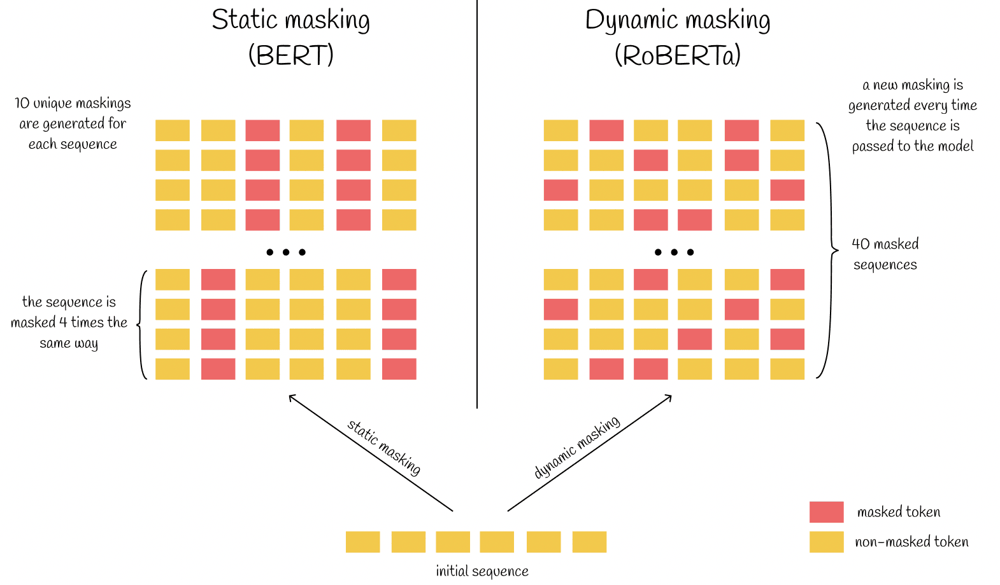
Слева BERT: маскирование делается один раз на этапе подготовки данных. Авторы BERT дублировали корпус 10 раз с разными масками, но при 40 эпохах каждая конкретная маска всё равно встречается модели 4 раза. Справа RoBERTa: маска генерируется заново при каждой подаче последовательности, поэтому все 40 проходов дают 40 разных задач. Стоит это ноль дополнительных вычислений и даёт бесплатную аугментацию. NSP (Next Sentence Prediction, предсказание следующего предложения) — вспомогательная задача BERT: модели дают два фрагмента и просят ответить, идёт ли второй сразу за первым в исходном тексте. Отрицательные примеры брались из случайного другого документа.
Проблема в том, что отличить продолжение текста от куска чужого документа слишком легко: достаточно заметить, что второй фрагмент вообще про другую тему. Модель училась распознавать смену темы, а не связность — то есть решала задачу проще, чем задумывалось, и почти ничего полезного из неё не извлекала.
RoBERTa вместо NSP просто набивает вход непрерывным текстом до полной длины 512 токенов (режим
FULL-SENTENCES) — и качество на downstream-задачах растёт.RoBERTa перешла с WordPiece на byte-level BPE — тот же алгоритм BPE, но работающий не над символами Unicode, а над байтами UTF-8.
Практический эффект: словарь из 50 тыс. токенов покрывает любую строку на любом языке, включая эмодзи, опечатки и битую кодировку. Токена
[UNK](«неизвестное слово») попросту не существует — в худшем случае редкое слово распадётся на отдельные байты.- GLUE (leaderboard, test): 88.5 у
RoBERTa-largeпротив 80.5 уBERT-base— здесь важно сравнивать числа из одной и той же таблицы, потому что dev- и test-метрики GLUE различаются на пункт-полтора. - SQuAD 2.0 (dev): F1 89.4.
- RACE (test): 83.2.
RoBERTa-large— 355 млн параметров (24 слоя, скрытый размер 1024, 16 голов), ровно какBERT-large. Весь прирост получен обучением, а не размером.Энкодерные модели никуда не делись, несмотря на моду на генеративные LLM. Там, где нужен классификатор на своих данных с низкой задержкой и предсказуемой стоимостью, RoBERTa часто выгоднее большой генеративной модели:
- классификация тональности, тем, интентов;
- NER (извлечение сущностей: имён, организаций, дат);
- модели-реранкеры в поиске и в RAG;
- фильтры токсичности и модерация контента.
Модель на 355 млн параметров работает на одной дешёвой видеокарте и выдаёт тысячи запросов в секунду — то, чего от LLM на 70 млрд параметров ждать не приходится.
- «RoBERTa — это улучшенная архитектура BERT». Нет. Архитектура идентична. Отличается рецепт обучения и токенизатор.
- «RoBERTa умеет генерировать текст». Нет: это энкодер, обученный на восстановление масок. Для генерации нужен декодер (GPT-подобная модель).
- Попытка загрузить веса RoBERTa токенизатором BERT. Словари разные (byte-level BPE против WordPiece) — получится мусор на входе и случайные предсказания.
- «У RoBERTa нет
token_type_ids, значит она не работает с парами предложений». Работает: пары подаются через разделитель</s></s>, просто без обучаемых сегментных эмбеддингов.
Чем RoBERTa отличается от BERT архитектурно?
Ничем. Это тот же трансформер-энкодер с тем же числом слоёв, голов и той же размерностью. Все отличия — в процедуре предобучения: в 10 раз больше данных (160 ГБ против 16 ГБ), батч 8 000 вместо 256, динамическое маскирование, отсутствие NSP и byte-level BPE вместо WordPiece.
Что такое динамическое маскирование и зачем оно нужно?
Это генерация маски
[MASK]заново при каждой подаче примера, а не один раз при подготовке данных. Модель на разных эпохах видит одно и то же предложение с разными скрытыми словами, поэтому не может запомнить конкретный шаблон маски и вынуждена учить язык. Фактически это бесплатная аугментация обучающей выборки.Почему авторы отказались от задачи NSP?
Отрицательные примеры для NSP брались из случайного другого документа, поэтому задача сводилась к распознаванию смены темы, а не связности текста. Модель решала её тривиально и почти не извлекала полезного сигнала. Эксперименты показали, что без NSP — с непрерывным текстом на всю длину входа — downstream-качество выше.
Какой главный вывод статьи о RoBERTa для практика?
Что BERT был существенно недообучен, и значительная часть прироста, который приписывали архитектурным новинкам, объяснялась просто более длинным обучением на большем корпусе. Прежде чем усложнять модель, стоит убедиться, что текущая обучена до сходимости на достаточных данных.
Что даёт byte-level BPE по сравнению с WordPiece?
Токенизатор работает над байтами UTF-8, поэтому словарь из 50 тыс. токенов покрывает любой текст на любом языке без токена
[UNK]. Опечатки, эмодзи и редкие символы разбиваются на байты, а не теряются.Когда в 2020-е годы имеет смысл брать RoBERTa, а не генеративную LLM?
Когда задача — классификация или извлечение сущностей на собственных размеченных данных, а требования к задержке и стоимости жёсткие. 355 млн параметров помещаются на одну дешёвую видеокарту, дают миллисекундные ответы и стабильный формат вывода, тогда как LLM избыточна по цене и непредсказуема по формату.
- Статически модель все 40 эпох видит одно и то же:
-
ALBERT (2019)
ALBERT (A Lite BERT, Lan et al., Google, 2019) — «облегчённый» BERT, в котором число параметров сокращено в 10–18 раз за счёт двух приёмов: факторизации эмбеддингов и разделения весов между слоями. Дополнительно задача NSP заменена на более осмысленную SOP.
Если совсем простыми словами: ALBERT — это BERT, у которого все слои трансформера — это один и тот же слой, применённый много раз подряд, а таблица эмбеддингов сжата через промежуточную «узкую» размерность.
Это главное недоразумение вокруг ALBERT. Разделение весов уменьшает память под параметры, но не уменьшает объём вычислений: слой всё равно применяется 12 (или 24) раза, просто каждый раз с теми же весами.
ALBERT-xxlargeимеет 235 млн параметров против 334 млн уBERT-large, но работает медленнее BERT-large, потому что у него скрытый размер 4096 вместо 1024. Экономия — в весе чекпоинта и в памяти оптимизатора, а не в latency инференса.В BERT размер эмбеддинга $E$ жёстко равен скрытому размеру $H$, поэтому таблица эмбеддингов занимает $V \times H$ параметров ($V$ — размер словаря, ≈ 30 тыс.).
ALBERT разрывает эту связь: сначала токен проецируется в маленькое пространство размерности $E$, а потом линейным слоем поднимается до $H$: $$V \times H \;\longrightarrow\; V \times E + E \times H, \qquad E \ll H$$
То есть вместо одной большой матрицы — две маленькие, как в разложении матрицы низкого ранга.
Возьмём $V = 30\,000$, $H = 1024$, $E = 128$:
- BERT: $30\,000 \times 1024 = 30.7$ млн параметров.
- ALBERT: $30\,000 \times 128 + 128 \times 1024 = 3.84 + 0.13 = 3.97$ млн параметров.
Экономия в 7.7 раза только на таблице эмбеддингов.
Эмбеддинг токена — это представление слова вне контекста: у слова «замок» здесь одно и то же представление и для строения, и для устройства на двери. Такое представление по своей природе беднее контекстного, которое строят слои трансформера.
Значит, держать для него ту же размерность, что и для богатых контекстных состояний, расточительно. $E = 128$ хватает, чтобы закодировать «словарную» информацию, а вся содержательная работа всё равно происходит в слоях с $H = 1024$.
Cross-layer parameter sharing — все $L$ блоков трансформера используют один и тот же набор весов. По умолчанию в ALBERT разделяется всё: и параметры внимания, и параметры полносвязных слоёв.
Формально: если у BERT $L$ независимых блоков с параметрами $\theta_1, \dots, \theta_L$, то у ALBERT $\theta_1 = \theta_2 = \dots = \theta_L = \theta$. Модель из 12 слоёв хранит веса одного слоя.
По сути это превращает трансформер в рекуррентную конструкцию: одна и та же функция применяется к состоянию 12 раз подряд.
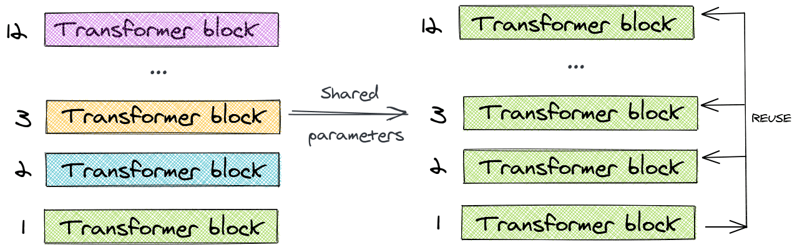
Слева — обычный BERT: каждый из 12 блоков имеет собственный набор весов (разные цвета). Справа — ALBERT: физически хранится один блок, который переиспользуется на всех 12 позициях, поэтому все блоки одного цвета. Параметров становится в 12 раз меньше, но вычислений — ровно столько же: блок всё равно применяется 12 раз подряд. Авторы заметили, что у ALBERT нормы переходов между слоями (насколько состояние меняется от слоя к слою) затухают плавно, тогда как у BERT они прыгают. Разделение весов работает как сильная регуляризация: модель не может «испортить» отдельный слой, потому что этот слой один на всех.
Плата — потолок качества: у ALBERT меньше степеней свободы, и на очень больших масштабах он проигрывает моделям с независимыми слоями.
SOP (Sentence Order Prediction, предсказание порядка предложений) — задача, где модели дают два соседних предложения из одного документа и просят определить, не поменяли ли их местами.
Ключевое отличие от NSP: оба фрагмента взяты из одного документа и на одну тему, поэтому уловку «просто заметить смену темы» использовать нельзя. Модель вынуждена анализировать логическую связность: причина идёт раньше следствия, местоимение — после того, что оно заменяет.
Положительный пример (порядок верный):
Кофе закончился.Пришлось идти в магазин.Отрицательный пример (те же предложения переставлены):
Пришлось идти в магазин.Кофе закончился.Тема одна и та же, слова те же — различить можно только по причинно-следственной связи. Для NSP такую пару было бы не построить: там отрицательный пример был бы вида
Кофе закончился.+Индекс Доу-Джонса вырос на 2%.Ниже — сводная колонка из статьи ALBERT: среднее по SQuAD 1.1, SQuAD 2.0, MNLI, SST-2 и RACE на dev-выборках.
Модель Параметры Среднее по 5 задачам (dev) BERT-base108 млн 82.3 BERT-large334 млн 85.2 ALBERT-base12 млн 80.1 ALBERT-xlarge60 млн 85.5 ALBERT-xxlarge235 млн 88.7 Два содержательных сравнения.
ALBERT-baseв 9 раз меньшеBERT-baseпри потере примерно 2 пунктов — хороший размен для устройств с ограниченной памятью.ALBERT-xlargeпри 60 млн параметров (в 5.5 раза меньшеBERT-large) уже обходит его.Сама модель применяется редко: под задачи с жёсткими требованиями к скорости обычно берут дистилляты (DistilBERT, MiniLM), а под качество — DeBERTa. Но две идеи ALBERT живут дальше:
- Развязка $E$ и $H$ используется во многих современных моделях с большими словарями, где таблица эмбеддингов иначе съедала бы заметную долю параметров.
- SOP и её потомки (разные варианты предсказания порядка и связности) применяются при обучении моделей для ранжирования и поиска.
- «ALBERT в 10 раз быстрее BERT». Нет: в 10 раз меньше параметров. Скорость инференса примерно та же или хуже.
- «Разделение весов — это дистилляция». Нет. Дистилляция обучает отдельную маленькую модель на выходах большой; здесь одна модель просто переиспользует свои же веса.
- «SOP сложнее NSP, значит хуже обучается». Наоборот: более сложный, но осмысленный сигнал даёт лучший перенос на downstream-задачи. Модель, обученная на SOP, решает и NSP; обратное неверно.
Какие два приёма ALBERT сокращают число параметров?
Первый — факторизация матрицы эмбеддингов: вместо одной матрицы $V \times H$ используются две, $V \times E$ и $E \times H$, где $E \ll H$. Второй — разделение весов между слоями: все блоки трансформера используют один и тот же набор параметров, поэтому модель хранит веса одного слоя вместо $L$.
Почему ALBERT с меньшим числом параметров не работает быстрее?
Разделение весов уменьшает объём хранимых параметров, но не количество операций: слой всё равно применяется $L$ раз, просто с одними и теми же весами. Более того,
ALBERT-xxlargeмедленнееBERT-large, потому что у него скрытый размер 4096 против 1024.Почему допустимо брать размер эмбеддинга меньше скрытого размера?
Эмбеддинг кодирует слово вне контекста и по природе беднее контекстного представления, которое строят слои трансформера. Размерности 128 достаточно для «словарной» информации, а вся содержательная работа идёт в слоях с $H = 1024$.
Чем SOP отличается от NSP и почему она полезнее?
В NSP отрицательный пример — фрагмент из случайного другого документа, поэтому задача сводится к распознаванию темы. В SOP оба предложения соседние и из одного документа, меняется только их порядок, — тему использовать нельзя, приходится анализировать причинно-следственную связность. Это даёт более полезный сигнал для downstream-задач.
Какой побочный эффект даёт разделение весов, помимо экономии памяти?
Оно работает как сильная регуляризация и стабилизирует обучение: переходы между слоями меняются плавно, модель устойчивее. Плата — меньше степеней свободы и более низкий потолок качества на больших масштабах.
Где идеи ALBERT применяются сегодня?
Развязка размерности эмбеддинга и скрытого размера используется в моделях с большими словарями, где таблица эмбеддингов иначе занимала бы значительную долю параметров. Задачи на предсказание порядка и связности, наследники SOP, применяются при обучении моделей ранжирования и поиска.
-
DeBERTa (2020–2021)
DeBERTa (Decoding-enhanced BERT with disentangled attention, He et al., Microsoft, 2020) — энкодерная модель, которая улучшает BERT тремя идеями: разделённым (disentangled) вниманием, улучшенным декодером маски (EMD) и — в версии DeBERTa-v3 — предобучением в стиле ELECTRA с механизмом RTD.
Если совсем простыми словами: в BERT «что это за слово» и «где оно стоит» смешаны в одном векторе. DeBERTa хранит эти две вещи раздельно и отдельно считает, насколько слова связаны по смыслу и насколько — по взаимному расположению.
DeBERTa-v3 до сих пор остаётся одной из сильнейших энкодерных моделей и регулярно выигрывает соревнования по классификации текста.
В BERT вход одного токена — это сумма трёх векторов: эмбеддинга токена, позиционного эмбеддинга и сегментного. Дальше внимание работает с этой суммой, не различая, что в ней от смысла, а что от позиции.
В DeBERTa токен $i$ описывается двумя векторами: содержательным $H_i$ и относительным позиционным $P_{i|j}$ (позиция $i$ относительно $j$). Скор внимания раскладывается на слагаемые: $$A_{ij} = \underbrace{H_i H_j^\top}_{\text{контент} \to \text{контент}} + \underbrace{H_i P_{j|i}^\top}_{\text{контент} \to \text{позиция}} + \underbrace{P_{i|j} H_j^\top}_{\text{позиция} \to \text{контент}}$$
Слагаемое «позиция $\to$ позиция» отбрасывается: при относительном кодировании оно не несёт новой информации.
- Контент $\to$ контент — обычное семантическое внимание BERT: «насколько слово банк связано со словом кредит».
- Контент $\to$ позиция — «слову не важно посмотреть на то, что стоит сразу справа от него», независимо от того, что именно там стоит.
- Позиция $\to$ контент — «слово, стоящее через два токена слева, важно, если это предлог».
Именно два последних слагаемых BERT выразить не может: у него позиция подмешана в контент, и разделить эти сигналы модель вынуждена сама, тратя на это ёмкость.
Фраза:
новая модель лучше старойпротивстарая модель лучше новой.Набор слов идентичен — различается только порядок. Модели нужно понять, что прилагательное перед
лучшеотносится к подлежащему, а после — к объекту сравнения. Это чисто позиционное правило, не зависящее от конкретных слов, и разделённое внимание кодирует его напрямую слагаемым «контент $\to$ позиция», а не выводит окольным путём из смешанного вектора.Проблема: DeBERTa использует только относительные позиции, а для предсказания замаскированного слова иногда критична абсолютная позиция.
Пример из статьи:
a new [MASK] store opened near the new [MASK] mall. Обе маски —storeиmall— окружены синтаксически одинаковыми словами, и по относительным позициям они неразличимы. Помогает знание того, в какой части предложения находится маска.EMD (Enhanced Mask Decoder) добавляет абсолютные позиционные эмбеддинги, но не на входе, как в BERT, а прямо перед softmax-слоем предсказания — то есть после того, как все слои трансформера уже отработали с относительными позициями.
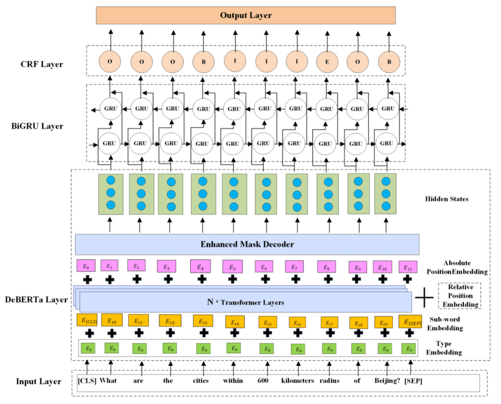
Пример полного стека с DeBERTa в основе (здесь — для задачи NER). Существенны два элемента. Снизу: в сами трансформерные слои подаются относительные позиционные эмбеддинги (пунктирный блок справа) — это и есть разделённое внимание. Сверху: абсолютные позиционные эмбеддинги $E_0 \ldots E_{11}$ добавляются уже после всех слоёв, на входе в Enhanced Mask Decoder. Так модель сначала рассуждает о взаимном расположении слов и только в конце узнаёт, кто где стоит абсолютно. Если подмешать абсолютную позицию на входе, все слои будут вынуждены таскать её через себя, и она снова перемешается с содержанием — ровно та проблема, от которой ушли.
Добавляя её только на последнем шаге, DeBERTa получает лучшее из двух миров: внутренние слои строят представления, инвариантные к сдвигу (что помогает обобщению на тексты другой длины), а финальный предсказатель всё-таки видит абсолютную позицию там, где она нужна.
RTD (Replaced Token Detection, детекция заменённых токенов) — схема предобучения из ELECTRA. Вместо того чтобы прятать слова под
[MASK], маленькая модель-генератор подставляет на их место правдоподобные, но неверные слова, а основная модель-дискриминатор для каждого токена отвечает: «это оригинал или подмена?».Ключевая выгода в плотности сигнала: в MLM обучающий сигнал приходит только с 15% позиций (замаскированных), а в RTD — со 100% позиций. При том же объёме вычислений модель обучается заметно эффективнее.
DeBERTa-v3 добавляет к этому gradient-disentangled embedding sharing: генератор и дискриминатор делят таблицу эмбеддингов, но градиент от задачи дискриминатора не течёт в эмбеддинги генератора — иначе две задачи «тянут» эмбеддинги в противоположные стороны.
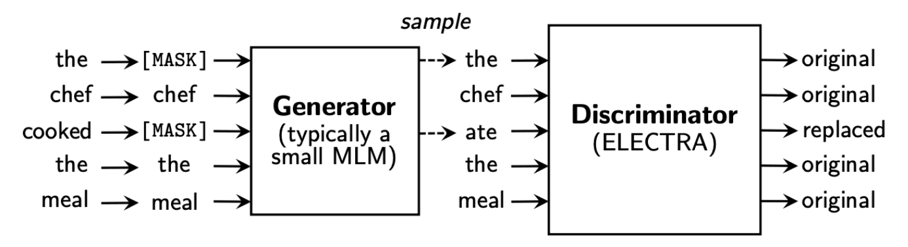
Схема RTD, унаследованная DeBERTa-v3 от ELECTRA. Маленький генератор получает текст с масками и подставляет вместо них правдоподобные слова: cooked$\to$ate. Основная модель-дискриминатор видит уже связный текст без единого[MASK]и для каждой позиции решает, оригинал перед ней или подмена. Отсюда и выигрыш в эффективности: в MLM сигнал приходит только с 15% замаскированных позиций, здесь — со всех 100%.Модель Параметры (backbone) MNLI-m SQuAD 2.0 (F1) BERT-large335 млн 86.6 81.8 RoBERTa-large355 млн 90.2 89.4 DeBERTa-large400 млн 91.1 90.7 DeBERTa-v3-large304 млн 91.8 91.5 DeBERTaV2-XXLarge(1.5 млрд параметров) в 2021 году первой превзошла человеческий baseline на SuperGLUE (89.9 против 89.8).На соревнованиях Kaggle по классификации текста
deberta-v3-largeгодами остаётся дефолтным выбором — и часто обыгрывает промптинг больших генеративных моделей. Причины:- Двунаправленность. Энкодер видит весь текст сразу, слева и справа; декодерная LLM при генерации смотрит только назад.
- Обучение под задачу. Fine-tuning на нескольких тысячах размеченных примеров бьёт few-shot промптинг там, где разметка отражает специфичные для домена критерии.
- Стоимость. 300 млн параметров против десятков миллиардов: дешевле дообучать, дешевле держать в проде, ниже задержка.
- «DeBERTa — это BERT с относительными позициями». Относительные позиции есть и в других моделях (например, T5). Уникальность DeBERTa — в разложении скора внимания на слагаемые и в раздельных векторах контента и позиции.
- Ожидать от
deberta-v3тех же результатов, что отdeberta-v2, при тех же гиперпараметрах. V3 обучена как дискриминатор RTD, у неё другая динамика fine-tuning: обычно нужен меньший learning rate и аккуратный warmup, иначе обучение расходится. - «RTD — это просто другое название MLM». Нет: в MLM модель восстанавливает слово из словаря, в RTD — решает бинарную задачу «подменён / не подменён» для каждой позиции.
Что такое разделённое (disentangled) внимание?
Это представление каждого токена двумя векторами — содержательным и относительным позиционным — с разложением скора внимания на три слагаемых: контент$\to$контент, контент$\to$позиция и позиция$\to$контент. В BERT позиция и содержание сложены в один вектор, поэтому позиционные закономерности модель вынуждена выводить косвенно.
Почему слагаемое «позиция $\to$ позиция» отбрасывается?
При относительном кодировании оно зависит только от разности индексов и одинаково для всех пар с одинаковым сдвигом, поэтому не добавляет информации к остальным слагаемым и лишь тратит вычисления.
Что делает EMD и почему абсолютные позиции добавляются в конце?
EMD подмешивает абсолютные позиционные эмбеддинги непосредственно перед слоем предсказания замаскированного токена. Если добавить их на входе, они снова перемешаются с содержанием во всех слоях; добавление в конце сохраняет инвариантные к сдвигу внутренние представления и при этом даёт предсказателю знание абсолютной позиции там, где оно нужно.
Что такое RTD и в чём его преимущество перед MLM?
Replaced Token Detection: маленький генератор подменяет часть токенов правдоподобными неверными вариантами, а основная модель для каждой позиции решает, оригинал это или подмена. Сигнал приходит со 100% позиций вместо 15% в MLM, поэтому при том же бюджете вычислений обучение эффективнее.
Зачем в DeBERTa-v3 нужен gradient-disentangled embedding sharing?
Генератор (задача MLM) и дискриминатор (задача RTD) делят таблицу эмбеддингов ради экономии, но их цели тянут эмбеддинги в разные стороны. Решение — пропускать градиент дискриминатора мимо эмбеддингов генератора, что стабилизирует обучение и улучшает итоговое качество.
Почему DeBERTa-v3 остаётся сильным выбором в эпоху больших генеративных моделей?
Она двунаправленна и видит весь текст сразу, дообучается на нескольких тысячах примеров под конкретные критерии разметки и при 300 млн параметров существенно дешевле LLM по стоимости обучения и инференса. На задачах классификации текста она регулярно обыгрывает few-shot промптинг больших моделей.
-
GPT-Neo (2021)
GPT-Neo (EleutherAI, март 2021) — семейство открытых GPT-подобных декодерных моделей (125M, 1.3B, 2.7B параметров), обученных на корпусе The Pile. Это была первая серьёзная попытка сообщества воспроизвести GPT-3 в открытом виде после того, как OpenAI закрыла доступ к весам.
Если совсем простыми словами: OpenAI показала, что GPT-3 работает, но веса не отдала. Группа энтузиастов EleutherAI собрала свой корпус, свой код обучения и выложила всё — данные, код и веса — под свободной лицензией.
В 2020 году GPT-3 (175 млрд параметров) был доступен только через платный API. Это создавало три проблемы для исследователей:
- Невоспроизводимость. Нельзя проверить статью, если нельзя получить веса.
- Невозможность анализа. Нельзя изучать внутренние представления модели через API.
- Невозможность дообучения. Нельзя адаптировать модель под свой домен.
GPT-Neo (и вышедший следом GPT-J) сделали открытые LLM реальностью и задали норму, которой позже последовали OPT, BLOOM и Llama.
The Pile — открытый корпус на 825 ГБ текста, собранный EleutherAI из 22 источников: Common Crawl, статьи arXiv, PubMed Central, GitHub, патенты USPTO, Stack Exchange, субтитры YouTube, книги, письма Enron и другие.
Ключевая идея — разнообразие, а не только объём. Обычный веб-скрап даёт много новостей и блогов, но мало кода, математики и научных текстов. The Pile сознательно перевешивает «сложные» домены, потому что именно они учат модель рассуждать, а не пересказывать.
The Pile стал стандартным корпусом для открытых моделей на несколько лет.
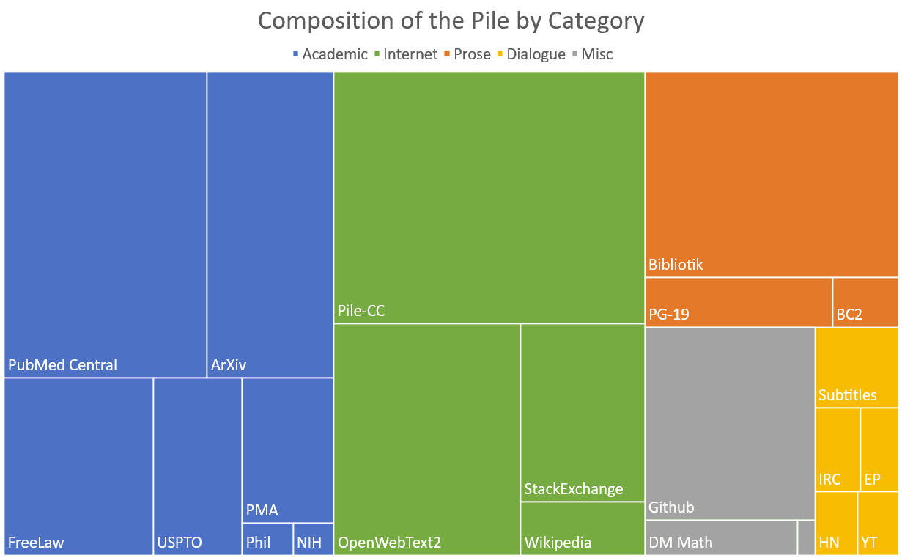
Площадь блока пропорциональна доле в корпусе. Ключевое отличие от веб-краулинга той эпохи: академические тексты (синий) — PubMed Central, ArXiv, FreeLaw, патенты — занимают примерно треть, а Github и математика вынесены в отдельные крупные источники. Это осознанный отбор: авторы собирали не «побольше текста», а разнообразие доменов, и именно поэтому The Pile долго оставался базовым корпусом для открытых моделей. GPT-Neo — стандартный GPT-2-подобный декодер со следующими особенностями:
- Локальное внимание через слой. Чётные слои используют полное внимание, нечётные — локальное окно 256 токенов. Это снижает вычисления примерно вдвое при небольшой потере качества.
- Обучаемые абсолютные позиционные эмбеддинги (как в GPT-2), а не RoPE — на тот момент RoPE ещё не был стандартом.
- Длина контекста 2048 токенов, словарь 50257 (GPT-2 BPE).
- Обучение на TPU через фреймворк
mesh-tensorflow.
Модель Параметры LAMBADA (acc) HellaSwag (acc) GPT-3(вариант 2.7B)2.7 млрд 67.1% 62.8% GPT-Neo 2.7B2.7 млрд 62.2% 42.7% GPT-3(вариант 175B)175 млрд 76.2% 78.9% Картину стоит читать честно: GPT-Neo уступает GPT-3 того же размера — заметно на LAMBADA и очень сильно на HellaSwag. Это ожидаемо и не отменяет ценности проекта: сообществу были доступны на порядки меньшие вычислительные бюджеты и совсем другой корпус. Ценность GPT-Neo — в доступности весов, а не в рекордах.
- Данные важнее, чем казалось. На части задач, связанных с кодом и научным текстом, разрыв с GPT-3 заметно меньше общего — сказывается доля таких доменов в The Pile.
- Открытость ускоряет прогресс. Публикация корпуса и кода позволила десяткам групп начинать не с нуля.
- Воспроизводимость требует ресурсов. Обучение даже 2.7B модели потребовало пожертвованных TPU-квот; повторить 175B в 2021 году сообществу было не под силу.
- «GPT-Neo — это open-source GPT-3». Это независимая модель, обученная на другом корпусе, с другой архитектурой деталей и на порядки меньшим бюджетом. Совпадает только общий класс архитектуры.
- Использовать GPT-Neo как продуктовую модель в 2020-е. Модель не проходила instruction tuning и RLHF: она продолжает текст, а не выполняет инструкции. Для практических задач нужны современные instruct-модели.
- Игнорировать лицензионные риски The Pile. Корпус включает Books3 — набор пиратских книг, из-за которого датасет позже был удалён с официальных зеркал. Для коммерческих проектов это существенно.
Что такое GPT-Neo и какую задачу решал этот проект?
Семейство открытых декодерных языковых моделей от EleutherAI (125M, 1.3B, 2.7B), обученных на корпусе The Pile. Проект возник как ответ на закрытость GPT-3: он дал сообществу веса, код и данные, чтобы можно было воспроизводить результаты, анализировать внутренности модели и дообучать её под свои задачи.
Что такое The Pile и чем он отличается от обычного веб-скрапа?
Открытый корпус на 825 ГБ из 22 разнородных источников — arXiv, PubMed, GitHub, патенты, Stack Exchange, книги и другие. В отличие от веб-скрапа, он сознательно перевешивает «сложные» домены (код, математику, науку), потому что они дают более сильный сигнал для обучения рассуждению.
Какая архитектурная особенность отличает GPT-Neo от GPT-2?
Чередование полного и локального внимания: чётные слои используют полное внимание, нечётные — скользящее окно из 256 токенов. Это примерно вдвое сокращает вычисления на внимании при небольшой потере качества.
Почему GPT-Neo не догнал GPT-3 175B?
Из-за разницы в вычислительном бюджете на два порядка. Максимальная модель проекта — 2.7 млрд параметров, и даже при сопоставимом размере она уступает варианту GPT-3 на 2.7 млрд; масштаб 175 млрд сообществу был недоступен в принципе. Смысл проекта был в доступности весов, а не в превосходстве по качеству.
Почему GPT-Neo нельзя ставить в продукт как чат-модель?
Она обучена только на предсказание следующего токена и не проходила instruction tuning и RLHF, поэтому продолжает текст, а не выполняет инструкции. Для продуктовых сценариев нужны современные instruct-версии моделей.
Какой лицензионный риск связан с The Pile?
В его состав входил Books3 — набор книг, распространявшихся с нарушением авторских прав. Из-за этого корпус был удалён с официальных зеркал, и модели, обученные на нём, несут юридические риски при коммерческом использовании.
-
GPT-J-6B (2021)
GPT-J-6B (EleutherAI, июнь 2021) — открытая декодерная модель на 6 млрд параметров, обученная на 400 млрд токенов The Pile. Написана на JAX (отсюда буква J) и на момент выхода была самой сильной публично доступной языковой моделью.
Технически интересна тремя решениями, которые позже стали (или почти стали) стандартом: RoPE, параллельные слои внимания и MLP и отсутствие bias-членов.
GPT-J — одна из первых крупных моделей, использовавших RoPE (Rotary Position Embedding). Вместо того чтобы прибавлять к эмбеддингу токена обучаемый вектор позиции, RoPE поворачивает векторы запроса и ключа на угол, пропорциональный позиции.
Практическая выгода: скор внимания начинает зависеть от разности позиций $i - j$, а не от абсолютных индексов. Модель лучше обобщается на длины, которых не видела при обучении, и не упирается в фиксированную таблицу позиций.
Сегодня RoPE используют почти все декодерные LLM — Llama, Mistral, Qwen, DeepSeek.
В классическом трансформере блок последовательный: сначала внимание со своей остаточной связью, затем MLP со своей. Обозначив промежуточный результат $u_l$: $$u_l = x_l + \text{Attn}\big(\text{LN}_1(x_l)\big), \qquad x_{l+1} = u_l + \text{MLP}\big(\text{LN}_2(u_l)\big)$$
Ключевое здесь то, что MLP получает на вход $u_l$ — то есть результат работы внимания.
В GPT-J внимание и полносвязный слой считаются параллельно от одного и того же входа: $$x_{l+1} = x_l + \text{Attn}\big(\text{LN}(x_l)\big) + \text{MLP}\big(\text{LN}(x_l)\big)$$
Отличие ровно одно: MLP смотрит на $x_l$, а не на $u_l$, и потому больше не ждёт результата внимания.
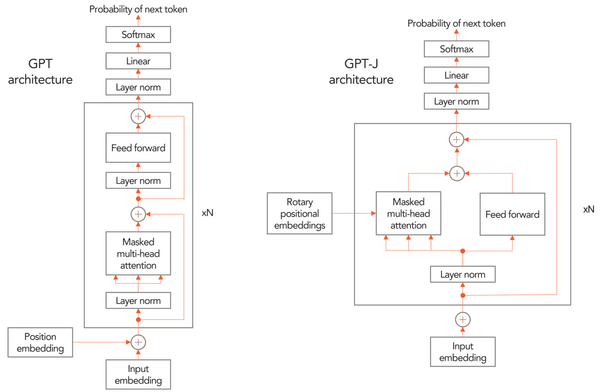
Слева классический блок GPT: LayerNorm $\to$ внимание $\to$ LayerNorm $\to$ FFN, две нормализации и два последовательных остаточных сложения. Справа GPT-J: один LayerNorm, после которого внимание и FFN считаются одновременно из одного и того же входа, а их выходы складываются. Дополнительно позиции подаются не суммированием обучаемого эмбеддинга на входе, а поворотом векторов $Q$ и $K$ внутри внимания (RoPE). Выигрыш здесь инженерный, а не качественный:
- Одна нормализация вместо двух — меньше синхронизаций между устройствами.
- Матричные умножения внимания и MLP можно объединить в один вызов, что лучше загружает GPU.
- Авторы сообщали об ускорении обучения примерно на 15% при практически неизменном качестве.
Приём переняли GPT-NeoX, PaLM и Falcon. Llama, напротив, осталась на последовательной схеме — на очень больших масштабах разница в качестве становится заметной не в пользу параллельной версии.
В GPT-J убраны bias-члены (свободные слагаемые) во всех линейных слоях: вместо $y = Wx + b$ используется просто $y = Wx$.
Мотивация: bias добавляет параметры и лишнюю коммуникацию при распределённом обучении, а на больших моделях практически не влияет на качество — сдвиг, который он мог бы дать, модель выражает через веса и нормализацию.
Этот приём тоже стал стандартом: в Llama, Mistral и большинстве современных LLM bias отсутствует (кроме отдельных мест, вроде проекций внимания в некоторых моделях Qwen).
Параметр Значение Параметры 6.05 млрд Слои 28 Скрытый размер 4096 Головы внимания 16 (по 256 измерений) Контекст 2048 токенов Словарь 50400 (GPT-2 BPE) Обучающих токенов 400 млрд Железо 256 ядер TPU v3, ≈ 5 недель GPT-J попала в удачную нишу: 6 млрд параметров в fp16 — это 12 ГБ, то есть модель помещалась в одну потребительскую видеокарту с 16 ГБ памяти, а с 8-битной квантизацией — и в 8 ГБ.
Это сделало её базой для сотен дообученных вариантов: чат-ботов, моделей для генерации кода, доменных ассистентов. До выхода Llama в феврале 2023 года GPT-J была дефолтной открытой моделью для экспериментов.
- «GPT-J — это GPT-Neo на 6 млрд». Разные кодовые базы (JAX против mesh-tensorflow) и разная архитектура: у GPT-J есть RoPE и параллельные слои, у GPT-Neo — обучаемые позиции и чередующееся локальное внимание.
- Ждать от 6B модели качества современных 7B instruct-моделей. Mistral 7B обучен на ~8 трлн токенов против 400 млрд у GPT-J — это в 20 раз больше данных при том же порядке параметров. Разрыв в качестве огромный.
- «Параллельные слои всегда лучше». Это компромисс: +15% скорости против небольшой просадки качества, которая на больших масштабах растёт. Llama сознательно осталась на последовательной схеме.
Какие три архитектурных решения отличают GPT-J?
RoPE вместо обучаемых абсолютных позиционных эмбеддингов; параллельное вычисление внимания и MLP от одного входа вместо последовательного; полное отсутствие bias-членов в линейных слоях.
Что даёт RoPE по сравнению с обучаемыми позиционными эмбеддингами?
Скор внимания начинает зависеть от разности позиций, а не от абсолютных индексов, поэтому модель лучше обобщается на длины контекста, не встречавшиеся при обучении, и не ограничена фиксированной таблицей позиций.
В чём выгода параллельных слоёв внимания и MLP и в чём плата?
Выигрыш инженерный: одна нормализация вместо двух, возможность слить матричные умножения и примерно 15% ускорения обучения. Плата — небольшая просадка качества, которая становится заметнее на очень больших масштабах, поэтому Llama осталась на последовательной схеме.
Почему из современных LLM убирают bias-члены?
Они добавляют параметры и лишнюю коммуникацию при распределённом обучении, а на больших моделях практически не улучшают качество: нужный сдвиг модель выражает через веса и слои нормализации.
Почему GPT-J-6B была так популярна до появления Llama?
Шесть миллиардов параметров в fp16 занимают около 12 ГБ и помещаются в одну потребительскую видеокарту, а после 8-битной квантизации — в 8 ГБ. При этом на момент выхода это была сильнейшая открытая модель, поэтому на её основе сделали сотни дообученных вариантов.
Почему GPT-J заметно слабее современных моделей того же размера?
Главная причина — объём обучающих данных: 400 млрд токенов против нескольких триллионов у современных 7B-моделей. По законам масштабирования Chinchilla модель такого размера была существенно недообучена.
-
Megatron-Turing NLG 530B (2021)
Megatron-Turing NLG 530B (MT-NLG, Microsoft + NVIDIA, октябрь 2021) — плотная (dense) декодерная модель на 530 млрд параметров, на момент выхода крупнейшая в мире. Главная её ценность — не качество, а инженерия: это эталонная демонстрация того, как обучать модель, которая физически не помещается ни в одну видеокарту.
Если совсем простыми словами: 530 млрд параметров в fp16 — это больше терабайта только под веса. Стандартная схема обучения хранит вдобавок мастер-копию весов в fp32 и два момента Adam тоже в fp32 — это ещё по 4 байта на параметр каждый, итого около 14 байт на параметр, или примерно 7.5 ТБ, не считая градиентов и активаций. У самой большой на тот момент видеокарты A100 было 80 ГБ. Значит, модель нужно разрезать и разложить по сотням устройств.
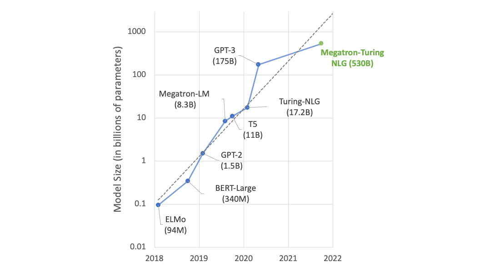
Ось размера логарифмическая: за четыре года модели выросли примерно в 5000 раз — от ELMo на 94 млн параметров до MT-NLG на 530 млрд. Каждый шаг вверх по этой кривой означал, что модель перестаёт помещаться в память очередного поколения GPU: BERT-Large ещё влезал в одну карту, GPT-3 требовал модельного параллелизма, а MT-NLG — уже трёх его видов сразу. Именно поэтому история масштабирования — это в первую очередь история распределённого обучения, а не история новых архитектур. Чтобы обучить такую модель, MT-NLG комбинирует три независимых способа распределения (3D-параллелизм). Подробный разбор каждой схемы, включая FSDP/ZeRO, — в вопросе виды параллелизма при обучении:
- Data parallelism (по данным) — каждая копия модели обрабатывает свой кусок батча, градиенты усредняются. Не помогает с памятью под веса.
- Tensor parallelism (по тензорам, внутрислойный) — одна матрица весов разрезается между GPU: каждая карта хранит и умножает свою часть. Требует очень быстрой связи, поэтому применяется внутри одного узла (NVLink).
- Pipeline parallelism (конвейерный, межслойный) — разные слои модели живут на разных узлах, активации передаются по цепочке. Требует меньше обмена, работает между узлами (InfiniBand).
Обучение шло на 560 узлах DGX A100 — это 4480 видеокарт A100 по 80 ГБ.
- Tensor parallelism = 8 — модель разрезана между 8 GPU внутри узла.
- Pipeline parallelism = 35 — 105 слоёв разложены на 35 стадий по 3 слоя.
- $8 \times 35 = 280$ GPU держат одну копию модели.
- $4480 / 280 = 16$ таких копий работают параллельно по данным.
Итоговая пропускная способность — около 113 TFLOP/s на GPU, что близко к 36% от теоретического пика A100. Для распределённого обучения такого масштаба это очень высокий показатель.
Главная потеря эффективности при pipeline-параллелизме: пока первая стадия считает первый микробатч, остальные 34 стадии простаивают. Аналогия — конвейер на заводе, который только что запустили: рабочие в конце линии ждут, пока до них дойдёт первая деталь.
Лечится разбиением батча на микробатчи: как только первый микробатч ушёл со стадии 1 на стадию 2, стадия 1 берёт второй микробатч. Доля простоя падает примерно как $$\text{bubble} \approx \frac{p - 1}{m}$$ где $p$ — число стадий, $m$ — число микробатчей. При $p = 35$ нужно $m \gg 35$, чтобы простой стал незначительным, — отсюда огромные глобальные батчи (у MT-NLG до 1920 последовательностей).
Параметр Значение Параметры 530 млрд Слои 105 Скрытый размер 20480 Головы внимания 128 Контекст 2048 токенов Обучающих токенов 270 млрд Железо 4480 $\times$ A100 80 ГБ Время обучения несколько месяцев с учётом простоев и перезапусков Обратите внимание на строку «270 млрд токенов» при 530 млрд параметров: это 0.5 токена на параметр. Вышедшая через полгода работа Chinchilla показала, что оптимальное соотношение — примерно 20 токенов на параметр, то есть MT-NLG следовало обучать на 10.6 трлн токенов.
Практический итог:
Chinchillaна 70 млрд параметров обгоняет MT-NLG на 530 млрд практически на всех бенчмарках, будучи в 7.5 раза меньше. MT-NLG — самый наглядный памятник эпохе «растим параметры, а не данные».Хотя саму модель никто не использует, её инфраструктура живёт:
- Megatron-LM — библиотека тензорного параллелизма от NVIDIA; на ней или её идеях обучены десятки последующих LLM.
- DeepSpeed — библиотека Microsoft с оптимизатором ZeRO, который шардирует состояния оптимизатора, градиенты и веса между устройствами вместо их дублирования.
- 3D-параллелизм как схема стал стандартной практикой обучения любой модели, не помещающейся в один узел.
- «MT-NLG — лучшая модель 2021 года». По качеству — нет. Она рекордная по размеру, но недообучена, и модели в разы меньше её обгоняют.
- Путать tensor и pipeline параллелизм. Tensor режет одну матрицу между картами (много обмена, внутри узла); pipeline режет слои (мало обмена, между узлами).
- «Data parallelism решает проблему памяти». Нет: при обычном data-параллелизме каждая копия хранит полную модель. Проблему памяти решают шардирование (ZeRO) и модельный параллелизм.
Какие три вида параллелизма комбинируются при обучении моделей масштаба 500B?
Data parallelism (копии модели обрабатывают разные куски батча), tensor parallelism (одна матрица весов разрезается между GPU внутри узла) и pipeline parallelism (разные слои модели живут на разных узлах). Их сочетание называют 3D-параллелизмом.
Почему tensor parallelism применяют внутри узла, а pipeline — между узлами?
Тензорный параллелизм требует обмена активациями на каждом матричном умножении, то есть очень высокой пропускной способности и низкой задержки — это про NVLink внутри узла. Конвейерный передаёт активации только на границах стадий, объём обмена мал, поэтому его переносят на более медленный межузловой InfiniBand.
Что такое «пузырь» конвейера и как его уменьшают?
Это простой стадий конвейера, пока первый микробатч ещё не дошёл до конца цепочки. Его долю оценивают как $(p-1)/m$, где $p$ — число стадий, $m$ — число микробатчей, поэтому лечится он дроблением батча на много микробатчей, а значит требует очень больших глобальных батчей.
Почему MT-NLG на 530 млрд параметров проигрывает Chinchilla на 70 млрд?
Из-за недообученности: MT-NLG видела 270 млрд токенов, то есть около 0.5 токена на параметр, тогда как компьютно-оптимальное соотношение по Chinchilla — примерно 20 токенов на параметр. При том же бюджете вычислений выгоднее была бы модель в разы меньше, обученная в разы дольше.
Сколько памяти нужно под обучение модели на 530 млрд параметров и почему?
Только веса в fp16 занимают более 1 ТБ. Adam дополнительно хранит два момента и мастер-копию весов в fp32 — суммарно около 14 байт на параметр, то есть примерно 7.5 ТБ, не считая градиентов и активаций. Поэтому модель принципиально не помещается ни в одну видеокарту и требует шардирования.
Что осталось в индустрии от проекта MT-NLG?
Инфраструктура: библиотека Megatron-LM с тензорным параллелизмом, DeepSpeed с оптимизатором ZeRO, шардирующим состояния оптимизатора и градиенты, и сама схема 3D-параллелизма, ставшая стандартом обучения больших моделей.
-
GLaM (2021)
GLaM (Generalist Language Model, Du et al., Google, декабрь 2021) — первая разреженная (sparse) языковая модель, догнавшая и обогнавшая GPT-3, потратив при этом в 3 раза меньше энергии на обучение и вдвое меньше вычислений на один токен при инференсе.
GLaM содержит 1.2 трлн параметров, но при обработке каждого токена активируется только 97 млрд — около 8% модели. Это достигается архитектурой MoE (Mixture of Experts, смесь экспертов).
В обычном трансформере каждый блок содержит один полносвязный слой (FFN), через который проходят все токены. Общее устройство и терминология подхода разобраны в вопросе MoE: смесь экспертов; здесь — как это впервые применили к большой языковой модели.
В MoE-слое вместо одного FFN стоит $N$ независимых FFN — экспертов, и маленькая обучаемая сеть-маршрутизатор (router). Для каждого токена маршрутизатор считает распределение по экспертам и отправляет токен только в $k$ лучших из них (в GLaM $k = 2$): $$y = \sum_{i \in \text{top-}k} g_i(x) \cdot E_i(x), \qquad g(x) = \text{softmax}(W_r x)$$
где $E_i$ — $i$-й эксперт, $g_i$ — его вес от маршрутизатора.
Здесь легко запутаться, поэтому разведём два понятия явно:
- Общее число параметров — сколько весов лежит в памяти. У GLaM это 1.2 трлн, и все они должны где-то храниться.
- Число активных параметров — сколько весов реально участвует в вычислении для одного токена. У GLaM это 97 млрд.
Стоимость вычислений (FLOPs) определяется активными параметрами, а стоимость памяти — общими. Поэтому MoE — это способ купить ёмкость модели за память, а не за вычисления.
Рассмотрим предложение:
Пациенту назначили метформин при диабете второго типа.Маршрутизатор направит
метформинв одну пару экспертов,при— в другую,второго— в третью. Соседние слова обрабатываются разными частями модели, и никакой явной разметки для этого нет: разбиение возникает само в ходе обучения.Соблазнительно решить, что
метформинидиабетуходят к «эксперту по медицине». Анализ обученных MoE-моделей этого не подтверждает: устойчивая специализация обнаруживается по синтаксическим и позиционным признакам (служебные слова, отступы в коде, соседние токены), а тематическое распределение оказывается почти равномерным.Правильная интуиция такая: 1.2 трлн параметров дают большую суммарную ёмкость, и маршрутизатор раскладывает по ней токены каким-то выученным разбиением пространства признаков — полезным для модели, но не совпадающим с человеческими категориями.
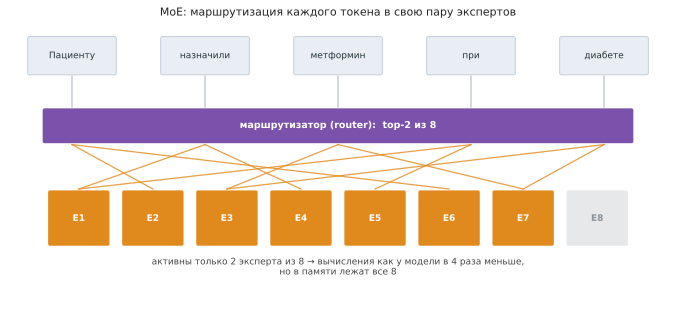
Каждый токен независимо направляется маршрутизатором в два эксперта из восьми, поэтому соседние слова обрабатываются разными частями модели. Вычисления оплачиваются только за активные эксперты, но в памяти обязаны лежать все — заранее неизвестно, куда уйдёт следующий токен. Главная сложность MoE: маршрутизатор склонен к вырождению — он начинает отправлять почти все токены в 2–3 «любимых» эксперта. Возникает порочный круг: популярные эксперты получают больше данных, становятся лучше, поэтому маршрутизатор выбирает их ещё чаще, а остальные эксперты остаются необученным мёртвым грузом.
Лечение — вспомогательный лосс балансировки (auxiliary load-balancing loss), который штрафует за неравномерное распределение токенов: $$\mathcal{L}_{aux} = \alpha \cdot N \sum_{i=1}^{N} f_i \cdot P_i$$ где $f_i$ — доля токенов, ушедших к эксперту $i$, а $P_i$ — средняя вероятность, которую маршрутизатор ему присвоил. Минимум достигается при равномерном распределении.
На практике у каждого эксперта задан capacity factor — максимум токенов, которые он может принять в одном батче (нужно для статического выделения памяти на TPU/GPU).
Если к эксперту пришло больше токенов, чем позволяет ёмкость, лишние отбрасываются: для них MoE-слой возвращает ноль, и работает только остаточная связь. Это нормальная часть работы MoE, но при плохой балансировке доля отброшенных токенов растёт и качество падает.
Метрика GPT-3 GLaM Всего параметров 175 млрд 1200 млрд Активных на токен 175 млрд 97 млрд Энергия на обучение 1287 МВт·ч 456 МВт·ч FLOPs на обучение $3.1 \times 10^{23}$ $5.8 \times 10^{22}$ Среднее по 29 NLP-задачам (zero-shot) 56.9 62.7 То есть при лучшем качестве обучение обошлось примерно в треть энергии.
На момент выхода GLaM выглядела экзотикой: MoE считался капризным в обучении и неудобным в деплое. Спустя несколько лет разреженная архитектура стала мейнстримом: Mixtral 8x7B, DeepSeek-V3, Qwen MoE-версии и почти наверняка большинство закрытых фронтир-моделей используют смесь экспертов.
Логика простая: вычисления упираются в бюджет, а память дешевле масштабируется. MoE позволяет наращивать ёмкость модели, не увеличивая стоимость одного токена.
- «MoE-модель на 1.2 трлн параметров нужно сравнивать с плотной на 1.2 трлн». Нет. По вычислениям она сопоставима с плотной моделью размера активных параметров, по памяти — с полной. Сравнивать корректно по обеим осям сразу.
- «MoE экономит память». Наоборот: все эксперты должны быть загружены (или быстро подгружаемы), поэтому требования к VRAM выше, чем у плотной модели сравнимого качества.
- «Эксперт — это модель для отдельной темы». Специализация возникает на уровне токенов и часто по синтаксическим, а не тематическим признакам. Отдельного «эксперта по медицине» в человеческом смысле там нет.
Чем разреженная MoE-модель отличается от плотной?
В плотной модели все параметры участвуют в обработке каждого токена. В MoE полносвязный слой заменён на набор экспертов и маршрутизатор, который отправляет токен только в $k$ из $N$ экспертов, поэтому активируется малая доля весов. У GLaM это 97 млрд активных параметров из 1.2 трлн общих.
Как связаны общее и активное число параметров со стоимостью?
Вычислительная стоимость одного токена определяется активными параметрами, а требования к памяти — общими. Поэтому MoE позволяет наращивать ёмкость модели, покупая её памятью, а не FLOPs.
Что такое проблема балансировки экспертов и как её решают?
Маршрутизатор склонен отправлять почти все токены в несколько «любимых» экспертов: те обучаются лучше, и он выбирает их ещё чаще, а остальные остаются необученными. Решение — вспомогательный лосс балансировки, штрафующий за неравномерное распределение токенов между экспертами.
Что происходит, если к эксперту пришло больше токенов, чем его ёмкость?
Лишние токены отбрасываются: MoE-слой возвращает для них ноль, и работает только остаточная связь. Ёмкость задаётся заранее ради статического выделения памяти, поэтому при плохой балансировке растёт доля отброшенных токенов и падает качество.
Каких результатов достигла GLaM по сравнению с GPT-3?
Среднее качество в zero-shot по 29 задачам — 62.7 против 56.9 у GPT-3, при этом на обучение потрачено 456 МВт·ч вместо 1287 МВт·ч, то есть примерно втрое меньше энергии, и вдвое меньше вычислений на токен при инференсе.
Почему MoE стал мейнстримом в середине 2020-х?
Потому что вычислительный бюджет — главное ограничение, а память масштабируется дешевле. MoE даёт рост ёмкости и качества без роста стоимости обработки токена, и на этой архитектуре построены Mixtral, DeepSeek-V3 и MoE-версии Qwen.
-
Chinchilla и законы масштабирования (2022)
Chinchilla (Hoffmann et al., DeepMind, март 2022) — модель на 70 млрд параметров, обученная на 1.4 трлн токенов, которая обогнала все крупнейшие модели своего времени: Gopher (280B), GPT-3 (175B) и MT-NLG (530B).
Но главное в статье — не модель, а закон масштабирования: при фиксированном бюджете вычислений число параметров $N$ и число обучающих токенов $D$ нужно наращивать пропорционально. Практическое правило: ≈ 20 токенов на параметр.
Если совсем простыми словами: до Chinchilla все растили модели вширь, кормя их одним и тем же объёмом данных. Оказалось, что половину этих денег надо было потратить на данные, а не на параметры.
Есть фиксированный бюджет вычислений $C$ (например, «столько-то GPU-часов»). Для трансформера он приблизительно равен $$C \approx 6 N D$$ где $N$ — число параметров, $D$ — число обучающих токенов. Коэффициент 6 берётся из того, что на каждый параметр и каждый токен приходится примерно 2 FLOPs на прямой проход и 4 на обратный.
Вопрос: как поделить бюджет между $N$ и $D$, чтобы итоговый лосс $L(N, D)$ был минимален?
DeepMind обучила более 400 моделей размером от 70 млн до 16 млрд параметров на 5–500 млрд токенов и подогнала параметрическую форму лосса: $$L(N, D) = E + \frac{A}{N^{\alpha}} + \frac{B}{D^{\beta}}$$
Здесь $E$ — «энтропия естественного текста», непреодолимый предел; второе слагаемое — недостаток ёмкости модели; третье — недостаток данных. Подгонка дала $\alpha \approx 0.34$ и $\beta \approx 0.28$ — величины близкие друг к другу.
Именно это и означает вывод статьи: раз показатели примерно равны, оптимально растить $N$ и $D$ в одинаковой пропорции, $N \propto C^{0.5}$ и $D \propto C^{0.5}$.
Работа Kaplan et al. (OpenAI, 2020), на которую опирались при обучении GPT-3, давала другой ответ: $N \propto C^{0.73}$, $D \propto C^{0.27}$, то есть параметры важнее данных.
Расхождение объясняется методологией: у Kaplan во всех экспериментах использовался почти одинаковый график learning rate, не подстроенный под длительность обучения. Из-за этого длинные прогоны выглядели хуже, чем могли бы, и данные казались менее ценными, чем они есть.
Мораль, полезная за пределами LLM: неправильно настроенный baseline искажает выводы всего исследования.
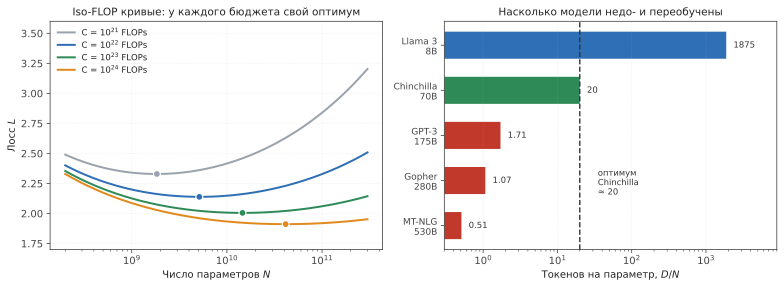
Слева: при каждом фиксированном бюджете вычислений кривая лосса имеет минимум — слишком маленькая модель упирается в нехватку ёмкости, слишком большая не успевает увидеть достаточно данных. Точка минимума сдвигается вправо с ростом бюджета. Справа: сколько токенов на параметр реально получили известные модели. Всё, что слева от пунктира, недообучено; Llama 3 8B, наоборот, переобучена почти в 100 раз — сознательно, ради дешёвого инференса. 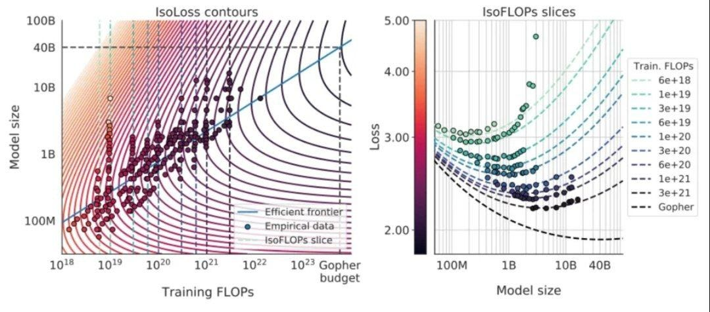
А так та же схема выглядит на настоящих данных — это оригинальные рисунки статьи, каждая точка здесь один из 400+ обученных прогонов. Слева контуры равного лосса; синяя прямая сквозь их «талии» — эффективный фронт, оптимальный размер модели для каждого бюджета. Важна её крутизна: в логарифмических осях наклон прямой и есть показатель степени, и здесь он около $0.5$, то есть при росте бюджета в 100 раз модель растёт лишь в 10. Прямая под 45° означала бы показатель $1$ — модель росла бы вровень с бюджетом, а данные не росли бы вовсе. Справа — вертикальные срезы того же поля при фиксированных бюджетах, те самые кривые с минимумом из схемы выше. Модель Параметры $N$ Токены $D$ $D/N$ Оптимально по Chinchilla GPT-3 175 млрд 300 млрд 1.7 3.5 трлн токенов Gopher 280 млрд 300 млрд 1.1 5.6 трлн токенов MT-NLG 530 млрд 270 млрд 0.5 10.6 трлн токенов Chinchilla 70 млрд 1.4 трлн 20 ✓ Chinchilla потратила ровно столько же вычислений, что и Gopher, но распределила их иначе — и выиграла на большинстве задач.
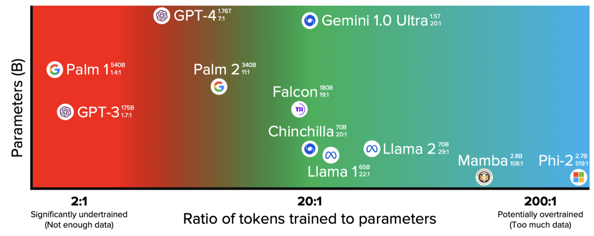
Тот же сюжет, что в правой панели схемы выше, но на конкретных цифрах и с моделями 2023–2024 годов. Горизонтальная ось — сколько токенов обучения пришлось на один параметр, шкала логарифмическая. Красная зона слева — недообученные модели: GPT-3 (1.7:1) и PaLM 1 (1.4:1) обучались ещё до выхода Chinchilla. Зелёная полоса в центре — окрестность вывода Chinchilla, 20:1. Синяя зона справа — сознательное «переобучение» ради дешёвого инференса: Phi-2 получила 519 токенов на параметр. Обратите внимание, что после 2022 года модели уверенно смещаются вправо: платить за обучение один раз выгоднее, чем за инференс — миллиарды раз. - MMLU (массовый тест знаний из 57 областей): Chinchilla — 67.6%, Gopher — 60.0%. Это был первый переход через порог 60% с большим отрывом.
- Chinchilla обходит Gopher на почти всех из 90+ оценённых задач.
- При этом инференс Chinchilla в 4 раза дешевле: 70 млрд параметров против 280 млрд.
Chinchilla сместила фокус исследований с «как обучить модель побольше» на «где взять больше качественных токенов». Последствия видны до сих пор:
- Гонка за данными. Началась массовая работа с очисткой веб-корпусов, дедупликацией, фильтрацией качества, синтетическими данными.
- Модели стали меньше и лучше. Llama 7B обучена на 1 трлн токенов ($D/N = 143$!) и обходит GPT-3 175B на многих задачах.
- Появилась экономика инференса. Маленькая модель дешевле обслуживать, а обучается она один раз. Если модель будет отвечать на миллиарды запросов, выгодно переобучать её далеко за пределы «компьютно-оптимальной» точки.
Важнейшая оговорка, которую часто упускают: закон Chinchilla оптимизирует стоимость обучения при фиксированном качестве. Он ничего не говорит об инференсе.
В продакшене модель обучают один раз, а инференс идёт непрерывно. Поэтому современные модели сознательно переобучают: у Llama 3 8B соотношение $D/N \approx 1875$ (15 трлн токенов на 8 млрд параметров) — почти в 100 раз больше «оптимума». Прирост качества на каждый дополнительный токен там уже мал, но он окупается тем, что модель навсегда остаётся маленькой и дешёвой в обслуживании.
- «20 токенов на параметр — универсальное правило». Это оптимум только для минимизации стоимости обучения и только для того класса архитектур и данных, на которых считали. Для продакшена нужно больше.
- «Chinchilla доказала, что большие модели не нужны». Нет: она доказала, что при фиксированном бюджете большие недообученные модели проигрывают. Если бюджет растёт, растут и оптимальные $N$, и оптимальное $D$.
- Считать, что данные бесконечны. Объём качественного текста в интернете конечен, и на масштабах в десятки триллионов токенов это уже ограничение — отсюда интерес к синтетическим данным и многократным проходам по корпусу.
В чём состоит основной вывод статьи про Chinchilla?
При фиксированном бюджете вычислений число параметров и число обучающих токенов нужно наращивать пропорционально, примерно по 20 токенов на параметр. Все крупные модели того времени — GPT-3, Gopher, MT-NLG — были сильно недообучены: они имели от 0.5 до 1.7 токена на параметр.
Как оценивается бюджет вычислений на обучение трансформера?
Приближённо $C \approx 6ND$, где $N$ — число параметров, $D$ — число токенов. Коэффициент 6 складывается примерно из 2 FLOPs на прямой проход и 4 на обратный в расчёте на параметр и токен.
Какой вид имеет закон масштабирования Chinchilla и что означают его слагаемые?
$L(N, D) = E + A/N^\alpha + B/D^\beta$, где $E$ — предельная энтропия естественного текста, второе слагаемое отражает недостаток ёмкости модели, третье — недостаток данных. Подогнанные показатели $\alpha \approx 0.34$ и $\beta \approx 0.28$ близки, что и означает необходимость растить $N$ и $D$ пропорционально.
Почему более ранний закон Kaplan давал другой ответ?
Из-за методологической ошибки: во всех прогонах использовался почти одинаковый график learning rate, не подстроенный под длительность обучения. Длинные прогоны из-за этого выглядели хуже, чем могли бы, и ценность дополнительных данных оказалась занижена.
Почему современные модели обучают далеко за пределами Chinchilla-оптимума?
Потому что этот оптимум минимизирует стоимость обучения, а в продакшене доминирует стоимость инференса. Обучение происходит один раз, а отвечать модель будет на миллиарды запросов, поэтому выгодно переобучить маленькую модель: прирост качества на токен уже мал, но она навсегда остаётся дешёвой в обслуживании.
Как Chinchilla повлияла на развитие индустрии?
Фокус сместился с наращивания параметров на добычу и очистку данных: дедупликацию, фильтрацию качества, синтетику. Модели стали меньше и при этом сильнее — Llama 7B на 1 трлн токенов обходит GPT-3 на 175 млрд параметров на многих задачах.
-
PaLM (2022)
PaLM (Pathways Language Model, Chowdhery et al., Google, апрель 2022) — плотная декодерная модель на 540 млрд параметров, обученная на 780 млрд токенов. Крупнейшая плотная модель, обученная за один прогон на двух подах TPU v4 (6144 чипа).
Главные результаты PaLM — не размер, а два открытия: разрывный рост качества на сложных задачах при увеличении масштаба и работоспособность chain-of-thought промптинга, который позволил модели решать математические задачи.
Pathways — инфраструктура Google для обучения одной модели на нескольких TPU-подах, физически стоящих в разных зданиях.
Схема двухуровневая: внутри пода используется обычный 3D-параллелизм с быстрым интерконнектом, а между подами применяется data-параллелизм с асинхронной передачей градиентов по обычной сети дата-центра. Пока один под считает градиенты для своего батча, второй уже пересылает свои — обмен перекрывается вычислениями.
Достигнутая эффективность — 46.2% MFU (Model FLOPs Utilization, доля использованной пиковой производительности), что было рекордом для моделей такого масштаба.
- SwiGLU вместо ReLU в полносвязных слоях: $\text{SwiGLU}(x) = \text{Swish}(xW_1) \odot (xW_2)$. Даёт лучшее качество при том же бюджете; стал стандартом в Llama, Mistral, Qwen.
- Параллельные слои внимания и MLP (как в GPT-J) — примерно 15% ускорения на большом масштабе.
- Multi-Query Attention (MQA) — одна общая пара ключ/значение на все головы. Резко удешевляет инференс: KV-кэш становится в $h$ раз меньше.
- RoPE вместо обучаемых позиционных эмбеддингов.
- Общие эмбеддинги входа и выхода, отсутствие bias-членов.
Emergent abilities («возникающие способности») — способности, которые практически отсутствуют у моделей до некоторого размера, а затем резко появляются.
На ряде задач BIG-bench у PaLM наблюдалась именно такая картина: модели 8B и 62B работают на уровне случайного угадывания, а 540B внезапно решает задачу с высокой точностью. Классический пример — объяснение шуток: модели нужно понять игру слов и рассказать, в чём соль. У 62B получается бессвязный пересказ, у 540B — корректное объяснение.
Позднее (Schaeffer et al., 2023) появилась убедительная критика: скачки могут быть артефактом метрики, а не свойством модели.
Аргумент такой: если метрика бинарная и строгая (например, «точное совпадение всей строки»), то плавное улучшение вероятности каждого токена превращается в резкий скачок итогового счёта — модель долго «почти права», получая нули, а потом начинает попадать целиком. Если ту же задачу мерить непрерывной метрикой (например, лог-правдоподобием правильного ответа), кривая становится гладкой.
Практический вывод: перед тем как объявлять эффект разрывным, проверь, не создаёт ли разрыв сама метрика.
PaLM 540B в связке с промптингом chain-of-thought (просьбой рассуждать по шагам) достигла 58% на GSM8K — школьных текстовых задачах по математике. Прежний рекорд составлял 55%, и получен он был дообучением GPT-3 175B вместе с отдельной моделью-верификатором, отбиравшей правильные решения. PaLM обошла его без дообучения, одним лишь промптом.
Ещё нагляднее разрыв внутри самой модели: та же PaLM 540B без chain-of-thought набирает на GSM8K около 18%. То есть три четверти итогового результата дал не размер модели, а способ её спросить.
Разница на примере задачи «В корзине 5 яблок, добавили 3 коробки по 4 яблока, сколько всего?»:
- Без CoT: модель сразу выдаёт число — часто неверное.
- С CoT: «В трёх коробках $3 \times 4 = 12$ яблок. Всего $5 + 12 = 17$.» — промежуточные шаги резко повышают точность.
Механика проста: модель тратит вычисления на каждый сгенерированный токен, поэтому рассуждение вслух даёт ей больше «шагов вычисления» на задачу. Подробнее — в вопросе про chain-of-thought.
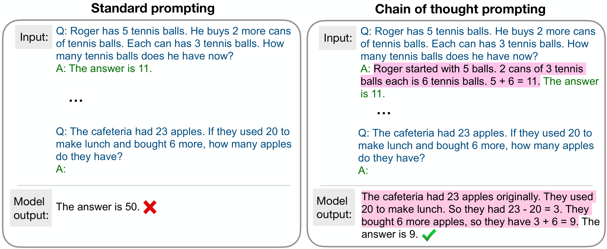
Слева обычный few-shot: в примерах сразу дан ответ, и модель тоже отвечает сразу — и ошибается. Справа в примерах показан ход рассуждения, и модель воспроизводит эту форму: раскладывает задачу на шаги и приходит к верному ответу. Изменился только формат подсказки, веса модели те же. Важная деталь: на моделях меньше примерно 10 млрд параметров этот приём не работает или даже вредит — способность пользоваться рассуждением появляется только с масштабом. PaLM вышла через неделю после Chinchilla — и была обучена по старым представлениям: 540 млрд параметров на 780 млрд токенов, то есть $D/N \approx 1.4$ вместо рекомендованных 20. По меркам Chinchilla она недообучена примерно в 14 раз.
Google учла урок в следующей версии: PaLM 2 заметно меньше по параметрам, но обучена на существенно большем корпусе — и работает лучше.
- «PaLM — это MoE». Нет, PaLM плотная: все 540 млрд параметров участвуют в обработке каждого токена. Разреженная модель Google того периода — это GLaM.
- «Emergent abilities доказывают, что при масштабировании возникает качественно новое». Как минимум спорно: значительную часть скачков объясняет выбор бинарных метрик.
- «Chain-of-thought придумали в PaLM». Метод предложен в отдельной работе Wei et al. (2022); PaLM стала моделью, на которой он впервые дал впечатляющий результат.
Что такое Pathways и какую задачу решает эта инфраструктура?
Это система Google для обучения одной модели на нескольких TPU-подах в разных дата-центрах. Внутри пода используется 3D-параллелизм по быстрому интерконнекту, между подами — data-параллелизм с асинхронной передачей градиентов, перекрывающейся с вычислениями. На PaLM она дала 46.2% MFU.
Какие архитектурные решения PaLM стали стандартом?
SwiGLU в полносвязных слоях, RoPE вместо обучаемых позиционных эмбеддингов, отсутствие bias-членов и Multi-Query Attention для удешевления KV-кэша при инференсе. Параллельные слои внимания и MLP прижились частично.
Что такое emergent abilities и в чём состоит критика этого понятия?
Это способности, отсутствующие у моделей до некоторого размера и резко появляющиеся после него. Критика в том, что скачок часто порождается самой метрикой: строгая бинарная метрика превращает плавный рост вероятности правильного ответа в разрыв, а при непрерывной метрике кривая оказывается гладкой.
Почему chain-of-thought повышает точность на математических задачах?
Модель тратит фиксированный объём вычислений на каждый сгенерированный токен, поэтому явное рассуждение по шагам даёт ей больше вычислительных шагов на задачу и позволяет декомпозировать её. Та же PaLM 540B набирает на GSM8K около 18% без chain-of-thought и 58% с ним — при полностью одинаковых весах.
Была ли PaLM обучена оптимально по Chinchilla?
Нет: 540 млрд параметров на 780 млрд токенов — это около 1.4 токена на параметр вместо рекомендованных 20, то есть недообучение примерно в 14 раз. Статья Chinchilla вышла буквально за неделю до PaLM, когда прогон был давно завершён, поэтому учесть её выводы было физически невозможно.
Что такое MFU и почему это важная метрика?
Model FLOPs Utilization — доля от теоретического пика производительности железа, реально использованная на полезные вычисления модели. Она показывает эффективность распределённого обучения: при плохом параллелизме большая часть времени уходит на ожидание обмена данными, а не на счёт.
-
OPT (2022)
OPT (Open Pre-trained Transformer, Zhang et al., Meta AI, май 2022) — семейство декодерных моделей от 125M до 175B параметров, выпущенное как открытый аналог GPT-3.
OPT-175Bв точности повторяет размер GPT-3 и обучена на 180 млрд токенов.Уникальность OPT — не в модели, а в логбуке: вместе с весами Meta опубликовала подробный дневник обучения, где честно описаны все сбои, расходимости и ручные вмешательства. Это до сих пор один из немногих открытых документов, показывающих, как обучение большой модели выглядит на самом деле.
Обучение
OPT-175Bзаняло примерно два месяца на 992 картах A100 и потребовало более 50 перезапусков. Из логбука видно, из чего складывается реальная работа:- Аппаратные отказы. За время прогона вышли из строя десятки GPU; каждый отказ означал остановку и восстановление из чекпоинта.
- Расходимости лосса. Лосс несколько раз «взрывался». Стандартное лечение — откатиться к чекпоинту за несколько сотен шагов до срыва, пропустить проблемный кусок данных и снизить learning rate.
- Проблемы численной стабильности. Часть срывов связана с переполнением в fp16; помогали изменения в масштабировании градиента и переход отдельных операций в fp32.
Ценность в том, что в академических статьях обучение всегда выглядит как гладкая кривая. Логбук OPT показал, что за ней стоит непрерывная ручная работа дежурных инженеров.
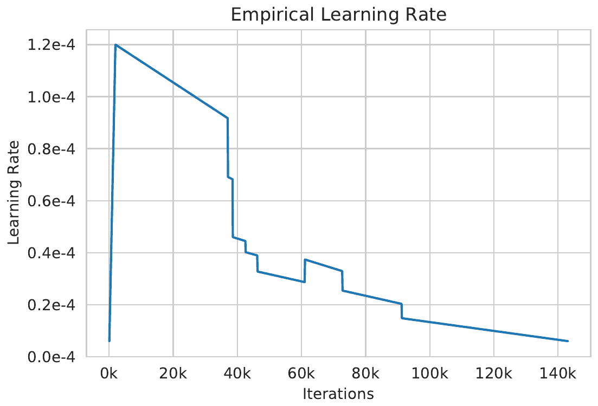
Так выглядит расписание learning rate, которое получилось вместо запланированной гладкой косинусной кривой. Каждый вертикальный обрыв — ручное вмешательство инженера после расхождения лосса: откат к последнему исправному чекпоинту и перезапуск с пониженным LR. Подъём около 60-тысячной итерации — попытка вернуться к более высокому значению после смены оптимизатора. Ни одна статья того времени такого не публиковала: в отчётах кривая всегда гладкая. Схема, повторявшаяся десятки раз:
- Лосс на шаге $\approx$ 46000 резко уходит вверх.
- Дежурный инженер останавливает прогон.
- Восстанавливается чекпоинт шага 45500.
- Порядок батчей меняется (чтобы обойти «плохой» участок данных), learning rate снижается.
- Прогон продолжается; через несколько тысяч шагов ситуация может повториться.
Отсюда практический вывод, применимый к любому большому обучению: чекпоинты должны сохраняться часто, а восстановление — быть отработанной процедурой, а не импровизацией.
Meta оценила выбросы на обучение
OPT-175Bпримерно в 75 тонн CO₂-эквивалента — против оценки около 500 тонн для GPT-3. Разница объясняется более современным железом (A100 против V100) и меньшим числом токенов.Публикация этой оценки была осознанным шагом: авторы предлагали считать энергозатраты частью отчётности о модели, чтобы сообществу не приходилось повторять одинаковые дорогие прогоны.
OPT-175Bв среднем сопоставима с GPT-3 на стандартных NLP-бенчмарках, но заметно уступает на задачах, требующих рассуждения. Причины:- Мало данных: 180 млрд токенов против 300 млрд у GPT-3 и против 3.5 трлн, рекомендованных Chinchilla для этого размера.
- Корпус слабее по составу: заметная доля Reddit и веб-текста, мало научных и кодовых данных.
- Нестабильное обучение: десятки откатов и пропущенных участков данных не проходят бесследно.
OPT-175Bвыпущена под некоммерческой лицензией: только для исследований, по заявке. Это ограничило её применение и стало одной из причин, по которым сообщество быстро переключилось на другие модели.Урок Meta учла: следующая её модель, Llama 2, вышла уже с разрешением коммерческого использования — и именно это сделало её основой целой экосистемы.
Как рабочая модель OPT устарела почти сразу: через девять месяцев вышла Llama, которая при 13 млрд параметров была сильнее
OPT-175B. Но проект оставил два прочных следа:- Норма публиковать логи и метаданные обучения. После OPT это стало ожидаемой частью выпуска открытой модели.
- Metaseq — кодовая база обучения, из которой выросли последующие инструменты Meta.
- «OPT — это открытый GPT-3». Совпадает только размер. Данные, гиперпараметры и качество разные; OPT слабее на задачах рассуждения.
- «Расходимость лосса означает ошибку в коде». На таких масштабах это рутина: причины — аппаратные сбои, численная нестабильность fp16, «плохие» участки данных. Важно не отсутствие срывов, а отработанная процедура восстановления.
- Брать
OPT-175Bдля коммерческого продукта. Лицензия это запрещает.
Чем проект OPT ценен помимо самих весов?
Публикацией подробного логбука обучения: в нём описаны более 50 перезапусков, аппаратные отказы, расходимости лосса и ручные вмешательства инженеров. Это редкий открытый документ, показывающий реальную, а не идеализированную картину обучения большой модели.
Как на практике лечат расходимость лосса при обучении LLM?
Откатываются к чекпоинту за несколько сотен шагов до срыва, меняют порядок батчей, чтобы обойти проблемный участок данных, и снижают learning rate. Иногда дополнительно правят масштабирование градиента или переводят отдельные операции в fp32.
Почему
OPT-175Bуступает GPT-3 на задачах рассуждения при том же размере?Она обучена всего на 180 млрд токенов против 300 млрд у GPT-3 и намного меньше рекомендованных Chinchilla 3.5 трлн, её корпус беднее по составу научных и кодовых текстов, а обучение сопровождалось десятками откатов.
Какой практический вывод об инфраструктуре следует из опыта OPT?
Чекпоинты нужно сохранять часто, а процедура восстановления должна быть отработанной и автоматизированной: на кластере из тысячи ускорителей отказы и срывы обучения — не исключение, а норма.
Как лицензия повлияла на судьбу OPT?
Некоммерческая лицензия с доступом по заявке резко сузила применение модели. Meta учла это в Llama 2, разрешив коммерческое использование, — и именно открытая лицензия сделала Llama основой большой экосистемы.
Зачем публиковать оценку углеродного следа модели?
Чтобы энергозатраты стали частью отчётности и сообщество не тратило ресурсы на повторение одинаковых дорогих прогонов. Для
OPT-175Bоценка составила около 75 тонн CO₂-эквивалента против примерно 500 тонн у GPT-3.
-
BLOOM (2022)
BLOOM (BigScience Large Open-science Open-access Multilingual Language Model, июль 2022) — декодерная модель на 176 млрд параметров, обученная на корпусе ROOTS объёмом 1.6 ТБ, покрывающем 46 естественных языков и 13 языков программирования.
Это результат проекта BigScience — годовой открытой коллаборации более 1000 исследователей из 70 стран, координируемой Hugging Face. BLOOM стала первой моделью такого масштаба, обученной публично: состав данных, решения по архитектуре и логи обучения обсуждались открыто.
Обычные LLM того времени обучались преимущественно на английском: у GPT-3 англоязычный текст занимал около 93% корпуса. Для остальных языков модель получала крохи и работала соответственно.
Причины, по которым проблему трудно решить «просто добавив данных»:
- Данные распределены крайне неравномерно. Английской веб-страницы на порядки больше, чем, например, суахили или бенгальского, хотя носителей у последних сотни миллионов.
- Токенизатор оптимизирован под английский. Слово на тайском или на русском разбивается на в разы больше токенов, чем эквивалентное английское, — значит, тот же текст стоит дороже и хуже помещается в контекст.
- Языки конкурируют за ёмкость. При фиксированном размере модели улучшение одного языка может ухудшить другой — это называют «проклятием многоязычности».
ROOTS (Responsible Open-science Open-collaboration Text Sources) — корпус, собранный вручную курируемым способом, а не автоматическим скрапом:
- 62% — целевые источники, отобранные сообществами носителей языков (местные архивы, научные репозитории, литература).
- 38% — отфильтрованный веб (OSCAR) с ручной проверкой качества по каждому языку.
Ключевое решение: доли языков задавались явно, исходя из доступности данных и участия сообществ, а не пропорционально их представленности в интернете. Это уменьшило перекос в сторону английского (30.0% корпуса), но не устранило его полностью.
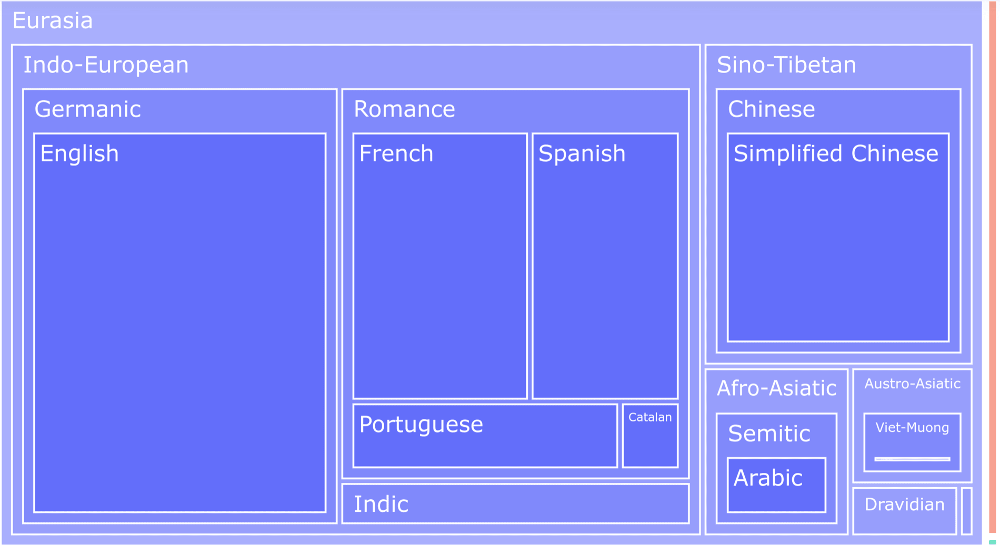
Площадь пропорциональна объёму текста; показана евразийская часть корпуса. Даже в корпусе, который специально собирали как многоязычный, английский занимает крупнейший блок, а внутри каждой семьи данные распределены очень неравномерно. Это и есть практическая цена многоязычности: чтобы дать заметную долю сорока шести языкам, приходится вручную договариваться с сообществами носителей — само собой из веба такое распределение не получается. - ALiBi вместо RoPE или обучаемых позиций. ALiBi добавляет к скорам внимания линейный штраф за расстояние: $\text{score}_{ij} - m \cdot |i - j|$. Позволяет обучаться на контексте 2048, а применять на более длинном.
- Embedding LayerNorm — дополнительная нормализация сразу после слоя эмбеддингов. Приём пришёл из предварительных экспериментов на модели 104B, где обучение шло в fp16 и без него расходилось. В финальном прогоне использовался bf16, и авторы сами отмечают, что там нормализация эмбеддингов, возможно, уже была не нужна, — её оставили из осторожности.
- bfloat16 вместо fp16 — больший динамический диапазон, меньше проблем с переполнением.
- Словарь 250 680 токенов — существенно больше обычного, чтобы разумно кодировать 46 языков.
Пусть надо закодировать фразу «Машинное обучение» разными токенизаторами:
- GPT-2 BPE (англоцентричный): распадается примерно на 8–10 токенов, часто по отдельным байтам кириллицы.
- BLOOM (250 тыс. токенов, многоязычный): 3–4 токена.
Разница напрямую переводится в деньги и в качество: меньше токенов — дешевле инференс, больше реального текста помещается в окно контекста, лучше моделируется структура языка. Расширенный словарь стоит дополнительной памяти под таблицу эмбеддингов, но для многоязычной модели это оправданный размен.
BLOOM обучалась 3.5 месяца на суперкомпьютере Jean Zay (Франция): 384 карты A100 80 ГБ, около 1.08 млн GPU-часов. Использовалась связка
Megatron-DeepSpeedс 3D-параллелизмом (tensor 4 $\times$ pipeline 12 $\times$ data 8).Отдельно примечателен углеродный след: около 25 тонн CO₂-эквивалента — заметно меньше, чем у OPT и GPT-3, потому что Jean Zay работает преимущественно на атомной энергии.
По качеству BLOOM оказалась средней: на английском она уступала OPT и вскоре вышедшей Llama. Но по своим целям проект удался:
- Многоязычие. На языках, слабо представленных в других моделях (индийские, африканские), BLOOM долго оставалась лучшим открытым вариантом.
- Прозрачность. Полностью документированный корпус — редкость: у большинства моделей состав данных не раскрывается вовсе.
- Модель управления. Лицензия RAIL (Responsible AI License) разрешает коммерческое использование, но запрещает перечисленные вредоносные применения. Это был один из первых практических экспериментов с этическими ограничениями в лицензии.
- BLOOMZ / mT0. Дообученные на многоязычных инструкциях версии показали, что instruction tuning переносится между языками: обучение на английских инструкциях улучшает следование инструкциям и на других языках.
- «BLOOM — открытая альтернатива GPT-3 по качеству». По англоязычным бенчмаркам — нет. Её сила в покрытии языков, а не в общем качестве.
- «Многоязычная модель всегда лучше одноязычной на этих языках». Не всегда: при фиксированной ёмкости языки конкурируют. Специализированная модель на один язык при сравнимом размере часто выигрывает.
- Игнорировать ограничения лицензии RAIL. Она не эквивалентна Apache 2.0: содержит перечень запрещённых применений, обязательных к соблюдению и при передаче производных моделей.
Что такое BLOOM и чем этот проект отличается от других больших моделей 2022 года?
Это декодерная модель на 176 млрд параметров, обученная в рамках открытой коллаборации BigScience с участием более тысячи исследователей. Она покрывает 46 естественных и 13 языков программирования, и её обучение — от состава корпуса до логов — велось публично.
Почему многоязычность нельзя получить простым добавлением данных?
Данные распределены крайне неравномерно, токенизаторы оптимизированы под английский и дробят другие языки на избыточное число токенов, а при фиксированной ёмкости модели языки конкурируют между собой — улучшение одного может ухудшить другой.
Чем ROOTS отличается от обычного веб-корпуса?
Он собран курируемо: 62% — источники, отобранные сообществами носителей языков, 38% — отфильтрованный веб. Доли языков задавались явно, исходя из доступности данных и участия сообществ, а не пропорционально их доле в интернете.
Зачем в BLOOM используются ALiBi и дополнительная нормализация эмбеддингов?
ALiBi кодирует позицию линейным штрафом за расстояние в скорах внимания, что позволяет применять модель на контексте длиннее обучающего. Embedding LayerNorm добавлен ради численной стабильности по итогам предварительных экспериментов в fp16, где без него обучение расходилось; в финальном bf16-прогоне он, по признанию авторов, мог быть уже избыточен.
Что даёт большой многоязычный словарь и чем за него платят?
Он кодирует тексты не на английском в разы меньшим числом токенов, что удешевляет инференс и позволяет уместить больше содержания в контекст. Плата — существенно большая таблица эмбеддингов и, соответственно, память.
Что такое лицензия RAIL?
Responsible AI License: разрешает коммерческое использование, но содержит перечень запрещённых применений, которые обязаны соблюдать и все производные модели. Это отличает её от полностью пермиссивных лицензий вроде Apache 2.0.
-
YaLM 100B (2022)
YaLM 100B (Yet another Language Model, Яндекс, июнь 2022) — декодерная модель на 100 млрд параметров, обученная на смеси русского (примерно 25%) и английского текста и выложенная в открытый доступ под лицензией Apache 2.0.
На момент публикации это была крупнейшая открытая модель, качественно работающая с русским языком, и одна из немногих больших моделей с по-настоящему свободной лицензией.
Корпус — примерно 1.7 ТБ текста:
- Английская часть (≈ 75%): The Pile без части источников, а также собственные веб-данные.
- Русская часть (≈ 25%): отфильтрованный русский веб-краулинг, русская Википедия, книги, диалоги, новости.
Отдельно стоит отметить фильтрацию: авторы описывали многоступенчатую очистку — дедупликацию, отсев страниц с плохой разметкой, эвристики качества текста. Для русского веба это критично: доля мусора и машинного перевода в нём выше, чем в англоязычном.
Ключевая причина — объём данных. Качественного русского текста в интернете на порядок меньше, чем английского, и на одном русском модель такого размера обучить до разумного качества нельзя: не хватит токенов.
Дополнительная причина — перенос способностей. Логика, программирование, фактические знания усваиваются из англоязычной части и частично переносятся на русский: модель, умеющая рассуждать по-английски, рассуждает и по-русски, даже если русских примеров рассуждений она видела мало.
Это стандартная практика: почти все «национальные» LLM обучаются на смеси целевого языка с большой англоязычной частью.
- Железо: 800 карт A100, около 65 дней обучения.
- Стабилизация обучения — главная техническая тема проекта. Инженеры Яндекса публиковали разбор приёмов: bf16 для весов и вычислений, аккуратный подбор learning rate, отсечение градиентов, а также отказ от некоторых стандартных схем нормализации в пользу более устойчивых.
- Ускорение: заявлялось ускорение обучения примерно в 2 раза относительно наивной реализации за счёт работы с ядрами и параллелизмом.
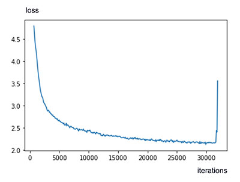
Так выглядит расхождение (divergence) на модели такого масштаба: лосс тридцать тысяч итераций спокойно снижался с 4,8 до 2,15, а затем за считанные шаги подскочил до 3,5 — то есть модель разом откатилась на уровень, который проходила в первые часы обучения. Восстановиться из этого состояния нельзя, только откатываться к последнему исправному чекпоинту. Именно борьба с такими срывами — bf16 для весов, но fp32 для softmax, LayerNorm и остаточных сложений — и была главной инженерной темой проекта. YaLM 100B — базовая (pretrain) модель: она обучена только предсказывать следующий токен и не проходила instruction tuning и RLHF.
Практические следствия:
- Она продолжает текст, а не выполняет инструкции. На запрос «Напиши письмо коллеге» она с большой вероятностью продолжит его как заголовок статьи о письмах.
- Работать с ней нужно через few-shot промптинг: показать 2–3 примера в нужном формате и дать модели продолжить по образцу.
- Ответы не отфильтрованы: базовая модель воспроизводит всё, что было в корпусе, включая токсичный текст.
Задача — перевести фразу на английский. Плохой промпт — прямая инструкция: базовая модель, скорее всего, продолжит её как текст, а не выполнит.
Переведи на английский: "Кот сидит на окне"В обучающем корпусе строка вида «Переведи на английский: …» встречалась в статьях, учебниках и заданиях. Модель продолжит её так, как продолжали бы такой текст: например, добавит ещё несколько упражнений на перевод. Она не «отказывается» выполнять инструкцию — она просто не обучена воспринимать её как команду.
Правильный промпт устроен иначе: это few-shot продолжение, где нужный формат задан примерами.
Русский: Собака спит на диване English: The dog sleeps on the couch Русский: Кот сидит на окне English:Здесь модель видит явную закономерность «строка на русском $\to$ строка на английском», повторённую дважды, и обрывок третьей пары. Продолжить такую последовательность — ровно та задача, на которую она обучалась. Формат ответа при этом задан примерами, поэтому лишнего текста модель не добавит.
YaLM 100B ценна прежде всего как веха для русскоязычного NLP: до неё открытых моделей такого масштаба с приличным русским не существовало, а Apache 2.0 позволял использовать её без ограничений, в том числе коммерчески.
При этом по абсолютному качеству модель быстро устарела: она сильно недообучена по меркам Chinchilla и не имеет instruct-версии. Уже через год открытые модели на 7–13 млрд параметров (Llama 2, Mistral, а затем Qwen) с дообучением на русских инструкциях давали лучший результат при на порядок меньшем размере.
Собственная линия Яндекса развивалась дальше в закрытых моделях YandexGPT, а в открытый доступ позже выкладывались более компактные модели семейства YandexGPT Lite / YaLM-подобные и T-lite / T-pro от других российских команд.
- «YaLM 100B — это русский ChatGPT». Нет: это базовая модель без instruction tuning. Чат-поведения у неё нет.
- Пытаться запустить её на одной GPU. 100 млрд параметров даже в 8 бит — это около 100 ГБ; нужен многокарточный сервер.
- «Раз модель на 100B, она лучше современной 7B». Неверно: современные компактные модели обучены на в десятки раз большем числе токенов и прошли выравнивание, поэтому на практических задачах уверенно выигрывают.
Что такое YaLM 100B и чем эта модель была примечательна?
Декодерная модель Яндекса на 100 млрд параметров, обученная на смеси английского и русского текста и выложенная под свободной лицензией Apache 2.0. На момент выхода это была крупнейшая открытая модель, качественно работающая с русским языком.
Почему модель для русского языка обучают на смеси с английским?
Качественного русского текста существенно меньше, чем английского, и одного его не хватит, чтобы обучить модель такого размера. Кроме того, навыки рассуждения, знания и программирование усваиваются из англоязычной части и частично переносятся на русский.
Чем базовая модель отличается от instruct-модели на практике?
Базовая обучена только предсказывать следующий токен, поэтому она продолжает текст, а не выполняет инструкции, и не имеет фильтрации ответов. Работать с ней нужно через few-shot промптинг, задавая формат примерами, а не прямыми командами.
Как правильно составить промпт для базовой модели?
Как продолжение закономерности: показать два-три примера в формате «вход $\to$ выход», а затем дать новый вход и оставить место для продолжения. Прямая инструкция вроде «переведи текст» базовой моделью, скорее всего, будет продолжена как текст, а не выполнена.
Почему YaLM 100B быстро уступила моделям на 7–13 млрд параметров?
Она недообучена по меркам законов Chinchilla и не проходила instruction tuning с выравниванием. Более поздние компактные модели обучены на в десятки раз большем числе токенов и дообучены следовать инструкциям, что на практических задачах перевешивает разницу в размере.
Какие ресурсы нужны для запуска модели на 100 млрд параметров?
Даже при 8-битной квантизации веса занимают порядка 100 ГБ, поэтому требуется сервер с несколькими видеокартами и распределённый инференс. На одну потребительскую карту такая модель не помещается ни в каком виде.
-
PaLM 2 (2023)
PaLM 2 (Google, май 2023) — вторая версия Pathways Language Model, которая меньше предшественницы по числу параметров (по опубликованным оценкам — порядка 340 млрд против 540 млрд), но обучена на существенно большем корпусе и работает заметно лучше.
Это первая крупная модель Google, построенная уже по законам Chinchilla: масштаб модели и объём данных росли примерно пропорционально.
PaLM 2 легла в основу Bard и множества продуктов Google, а варианты по размеру назывались Gecko, Otter, Bison и Unicorn — от самого маленького, помещающегося на мобильное устройство, до крупнейшего.
Авторы называют три направления улучшений:
- Compute-optimal scaling. Данные и параметры масштабированы согласованно, вместо «растим только параметры».
- Улучшенная смесь данных. Существенно больше многоязычных текстов (сотни языков вместо преимущественно английского), больше кода, математики, научных статей и параллельных корпусов для перевода.
- Обновлённая архитектура и цели обучения. Вместо чистого предсказания следующего токена — смесь целей (mixture of objectives), включающая заполнение пропусков и другие варианты денойзинга.
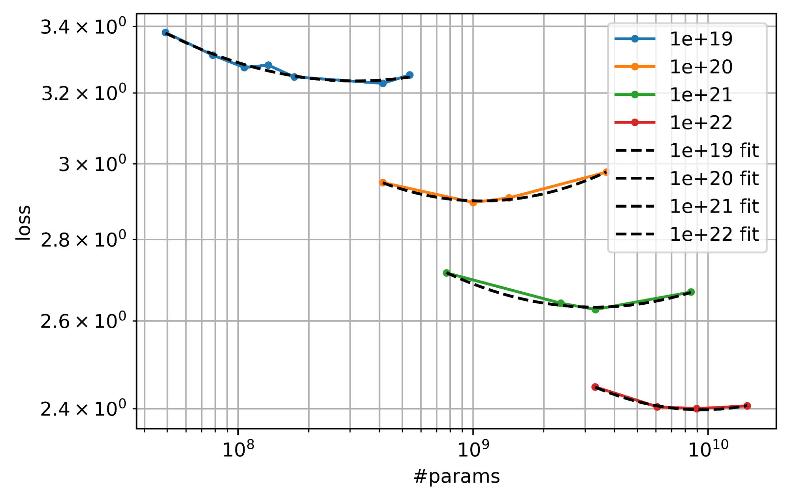
Авторы PaLM 2 независимо повторили эксперимент Chinchilla: каждая кривая — фиксированный бюджет вычислений, точки на ней — модели разного размера, обученные на соответствующем числе токенов. У каждой кривой есть отчётливый минимум, и с ростом бюджета он сдвигается вправо примерно как корень. Вывод совпал с Chinchilla: параметры и данные надо растить в одной пропорции. Именно поэтому PaLM 2 меньше PaLM 1 по числу параметров, но сильнее по качеству. Mixture of objectives — обучение одной модели сразу на нескольких формулировках задачи вместо одной.
Классический декодер учится только на causal LM: предсказать следующий токен по предыдущим. При такой цели каждый токен даёт один обучающий сигнал, и модель никогда не учится использовать контекст справа.
Смесь добавляет варианты денойзинга (по образцу UL2): часть входа портится — вырезаются отдельные токены или целые фрагменты, — и модель восстанавливает пропущенное, видя текст с обеих сторон. Это даёт более плотный сигнал и улучшает задачи, где важно понимание, а не только продолжение: классификацию, извлечение информации, заполнение шаблонов.
PaLM 2 стала первой моделью Google, уверенно сдающей экзамены на владение языком уровня C2 (advanced) по нескольким языкам — китайскому, японскому, испанскому, итальянскому и другим.
Практическая иллюстрация разницы: модель, обученная преимущественно на английском, при работе с русским текстом фактически «переводит про себя» — качество падает на идиомах, морфологии и культурных реалиях. Модель с сотнями языков в корпусе работает с русским как с первоклассным языком, а не как с переведённым английским.
На базе PaLM 2 Google выпустила дообученные модели под конкретные домены:
- Med-PaLM 2 — медицинская модель, первой преодолевшая 86.5% на USMLE (экзамен на медицинскую лицензию в США), что соответствует уровню «эксперт».
- Sec-PaLM — модель для задач кибербезопасности: анализ скриптов, объяснение поведения кода.
- Codey — модель для генерации и объяснения кода в продуктах Google Cloud.
Это иллюстрирует стандартный паттерн: одна сильная базовая модель плюс доменное дообучение вместо обучения отдельных моделей с нуля.
В отчёте по PaLM 2 Google не раскрыла ни точное число параметров, ни объём и состав обучающих данных — в отличие от статьи по PaLM, где всё это было опубликовано.
Это часть общего разворота индустрии в 2023 году: технические отчёты GPT-4, Claude и PaLM 2 описывают возможности и результаты оценки, но не архитектуру и не корпус. Причины называются разные — конкуренция и соображения безопасности, — но для исследователей результат один: воспроизвести такие модели невозможно, и приходится опираться на открытые семейства.
PaLM 2 проработала основной моделью Google меньше года: в декабре 2023-го её сменило семейство Gemini, изначально мультимодальное. Линия PaLM на этом завершилась, но её наследие видно в двух вещах:
- Открытые модели Gemma построены на технологиях того же исследовательского направления и выпускаются с открытыми весами.
- Практика доменных дообучений (Med-, Sec-, Code-) закрепилась как стандартный способ применять большие модели в регулируемых отраслях.
- «PaLM 2 больше PaLM». Наоборот: по оценкам она примерно в полтора раза меньше по параметрам, а выигрывает за счёт данных и целей обучения.
- «Смесь целей — это мультизадачное дообучение». Нет: речь о целях предобучения (causal LM плюс варианты денойзинга), а не о дообучении на прикладных задачах.
- Считать заявленные результаты воспроизводимыми. Состав данных и размер модели не опубликованы, поэтому сравнения с PaLM 2 в статьях всегда носят условный характер.
Чем PaLM 2 принципиально отличается от PaLM?
Она меньше по числу параметров, но обучена на существенно большем и более разнообразном корпусе — то есть впервые в линейке Google масштабирование выполнено согласно законам Chinchilla. Дополнительно изменены цели предобучения и резко расширено языковое покрытие.
Что такое смесь целей обучения и зачем она нужна?
Это обучение на нескольких формулировках задачи одновременно: к предсказанию следующего токена добавляются варианты денойзинга, где модель восстанавливает вырезанные фрагменты, видя контекст с обеих сторон. Сигнал становится плотнее, а качество на задачах понимания — выше.
Почему одноязычная в основном модель хуже работает с другими языками, чем многоязычная?
Потому что её представления выстроены вокруг английского, и другой язык обрабатывается фактически как переведённый: страдают идиомы, морфология и культурные реалии. Модель с богатым многоязычным корпусом обращается с такими языками как с первоклассными.
Что такое Med-PaLM 2 и что этот пример показывает?
Это дообученная под медицину версия PaLM 2, первой набравшая 86.5% на экзамене USMLE. Пример иллюстрирует стандартный подход: одна сильная базовая модель плюс доменное дообучение вместо обучения отдельных моделей с нуля.
Почему технический отчёт PaLM 2 не позволяет воспроизвести модель?
В нём не раскрыты ни число параметров, ни объём и состав обучающих данных. Это часть общего разворота индустрии 2023 года к закрытости технических деталей у фронтир-моделей.
Что пришло на смену PaLM 2 и что осталось от этой линии?
Её сменило изначально мультимодальное семейство Gemini. От линии PaLM остались открытые модели Gemma, построенные на технологиях того же направления, и закрепившаяся практика доменных дообучений для регулируемых отраслей.
-
Mistral 7B (2023)
Mistral 7B (Mistral AI, сентябрь 2023) — открытая декодерная модель на 7.3 млрд параметров под лицензией Apache 2.0, которая при выходе обошла Llama 2 13B на всех бенчмарках и приблизилась к Llama 1 34B на задачах рассуждения и кода.
Модель важна не отдельной новой идеей, а тем, что она собрала воедино весь актуальный стек архитектурных приёмов и показала, насколько далеко можно уйти на 7 млрд параметров при качественных данных и грамотной инженерии.
Приём Что даёт RoPE относительное кодирование позиции, экстраполяция контекста GQA, 8 групп на 32 головы KV-кэш меньше в 4 раза, быстрее генерация SWA, окно 4096 линейная сложность по длине, кэш фиксированного размера Rolling buffer cache память под кэш не растёт с длиной контекста RMSNorm + Pre-LN устойчивое обучение, дешевле LayerNorm SwiGLU в FFN лучше качество при том же числе параметров Без bias во всех линейных слоях меньше параметров и коммуникации 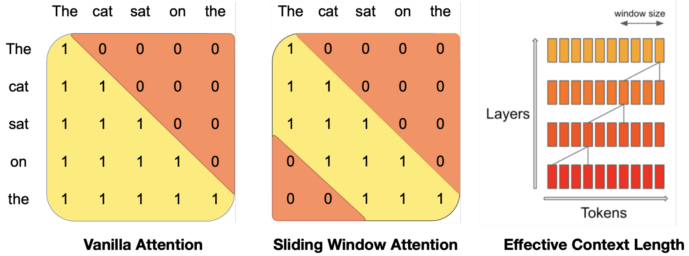
Слева обычное причинное внимание: токен видит всю предысторию, матрица заполнена целиком под диагональю. В центре скользящее окно $W$: токен смотрит только на $W$ ближайших предшественников, стоимость слоя становится линейной по длине. Справа — почему это не теряет дальний контекст: информация просачивается вверх по слоям, и после $k$ слоёв токен косвенно зависит от $k \cdot W$ предыдущих позиций, ровно как рецептивное поле в свёрточной сети. Параметр Значение Параметры 7.24 млрд Слои 32 Скрытый размер 4096 Размер FFN 14336 Головы внимания 32 (по 128 измерений) KV-групп (GQA) 8 Окно SWA 4096 Контекст 32 768 токенов Словарь 32 000 (SentencePiece BPE) SwiGLU — вариант полносвязного слоя с гейтом (управляющим множителем): $$\text{SwiGLU}(x) = \big(\text{Swish}(x W_1)\big) \odot (x W_2), \qquad \text{Swish}(z) = z \cdot \sigma(z)$$ Результат затем проецируется обратно матрицей $W_3$.
Отличие от классического FFN ($\text{ReLU}(xW_1)W_2$): здесь две параллельные проекции, одна из которых играет роль «вентиля», поэлементно решающего, какую долю сигнала пропустить дальше.
Поскольку матриц три вместо двух, скрытый размер FFN приходится уменьшать, иначе блок раздуется в полтора раза. Классический ориентир — $\tfrac{2}{3} \times 4d$ вместо $4d$: именно так получены 11008 у Llama 2 7B при $d = 4096$.
Mistral же взяла 3.5 d = 14336 — то есть сознательно потратила на FFN больше, чем даёт это правило, перераспределив бюджет параметров в пользу полносвязных слоёв.
Интуиция: обычный FFN применяет одну и ту же нелинейность ко всем признакам одинаково. Гейт добавляет зависимость от входа: модель может для одного токена пропустить признак целиком, а для другого — почти полностью подавить.
Это дешёвая форма условных вычислений: своего рода мягкий «выключатель» на каждом канале, обучаемый вместе с остальной сетью. Эмпирически SwiGLU стабильно выигрывает у ReLU и GELU при равном бюджете параметров, поэтому используется в PaLM, Llama, Mistral, Qwen и Gemma.
Бенчмарк Mistral 7B Llama 2 7B Llama 2 13B MMLU 60.1 44.4 55.6 HellaSwag 81.3 77.1 80.7 GSM8K (8-shot) 52.2 16.0 34.3 HumanEval (код) 30.5 12.8 18.9 Особенно показателен разрыв на GSM8K и HumanEval: по математике и коду Mistral 7B обходит вдвое большую Llama 2 13B в полтора-три раза. Это почти наверняка эффект состава данных — Mistral AI не раскрывает корпус, но результат указывает на существенную долю кода и математики.
Сложились три фактора:
- Размер. 7.3 млрд параметров: fp16 — 15 ГБ, 4-битная квантизация — около 4.5 ГБ. Помещается в потребительскую видеокарту, а через
llama.cpp— даже в ноутбук. - Лицензия Apache 2.0. Без ограничений на коммерческое использование, в отличие от Llama 2 с её лицензионными условиями.
- Качество. На уровне моделей вдвое большего размера.
Итог: Mistral 7B стала базой для сотен дообученных моделей — от доменных ассистентов до русскоязычных дообучений (Saiga и другие).
- Mistral 7B Instruct — instruct-версия; в v0.2/v0.3 отказались от SWA в пользу полного внимания на 32k, поскольку выяснилось, что окно мешало точности на длинном контексте.
- Mixtral 8x7B (декабрь 2023) — MoE-версия: 47 млрд общих параметров, 13 млрд активных.
- Mistral Small / Medium / Large — закрытые модели через API.
- Codestral — специализированная модель для кода.
- Pixtral — мультимодальная версия с обработкой изображений.
- «Mistral 7B изобрела GQA и SWA». Нет: GQA — Google (2023), SWA — Longformer (2020). Заслуга Mistral в том, что она собрала известные приёмы в отлаженную комбинацию и обучила на очень хороших данных.
- «У Mistral 7B контекст 4096, потому что окно 4096». Нет: контекст — 32 768. Окно ограничивает обзор одного слоя, а суммарное рецептивное поле — примерно $4096 \times 32$.
- Считать, что архитектура объясняет весь отрыв от Llama 2. Архитектурные приёмы дают проценты, а разрыв в разы на коде и математике — это данные. Mistral AI корпус не раскрывает.
- Путать открытую Mistral 7B с закрытыми Mistral Large. Под Apache 2.0 выпущена только часть моделей семейства.
Какие архитектурные приёмы собраны в Mistral 7B?
RoPE для позиций, GQA с восемью KV-группами на 32 головы, sliding window attention с окном 4096 и rolling buffer cache, Pre-LN с RMSNorm, SwiGLU в полносвязных слоях и полное отсутствие bias-членов.
Что такое SwiGLU и чем он лучше обычного FFN?
Полносвязный слой с гейтом: вход проецируется двумя матрицами, одна проходит через Swish и поэлементно умножается на другую. Гейт делает пропускание каждого признака зависящим от входа — это дешёвая форма условных вычислений, стабильно выигрывающая у ReLU и GELU при равном бюджете параметров.
Почему при SwiGLU размер FFN меньше привычных $4d$?
Потому что SwiGLU использует три матрицы вместо двух, и при сохранении $4d$ блок раздулся бы в полтора раза по параметрам. Классический ориентир — $\tfrac{2}{3} \times 4d$ (так получены 11008 у Llama 2 7B). Mistral отступает от него в большую сторону: 14336 — это $3.5 d$.
Почему Mistral 7B так сильно обходит Llama 2 13B на коде и математике?
Архитектурные приёмы дают лишь проценты; разрыв в полтора-три раза на GSM8K и HumanEval почти наверняка объясняется составом обучающего корпуса — существенно большей долей кода и математических текстов. Корпус компания не раскрывает.
Почему именно Mistral 7B стала базой для сотен дообучений?
Сочетание трёх факторов: помещается в потребительскую видеокарту (около 4.5 ГБ после 4-битной квантизации), лицензия Apache 2.0 без ограничений на коммерческое использование и качество на уровне моделей вдвое большего размера.
Почему в поздних версиях Mistral 7B отказались от sliding window attention?
Окно ухудшало точность работы с длинным контекстом — в частности, точный поиск и цитирование далёких фрагментов. При контексте 32k полное внимание оказалось предпочтительнее, а экономия от окна перестала быть решающей.
- Размер. 7.3 млрд параметров: fp16 — 15 ГБ, 4-битная квантизация — около 4.5 ГБ. Помещается в потребительскую видеокарту, а через
-
Mixtral 8x7B (2023)
Mixtral 8x7B (Mistral AI, декабрь 2023) — первая открытая MoE-модель, вышедшая на уровень GPT-3.5. Она содержит 46.7 млрд параметров, но на каждый токен активирует лишь 12.9 млрд — то есть считает как модель на 13 млрд, а знает как модель на 47 млрд.
Лицензия Apache 2.0. Именно Mixtral сделала архитектуру смеси экспертов массовой в открытом сообществе.
«8x7B» не означает $8 \times 7 = 56$ млрд параметров и не означает восемь независимых моделей Mistral 7B.
На самом деле экспертами заменены только полносвязные слои (FFN). Всё остальное — эмбеддинги, слои внимания, нормализации — общее для всех экспертов. Отсюда 46.7 млрд, а не 56.
Считаем активные параметры: на каждый токен работают 2 эксперта из 8, плюс все общие части — получается около 12.9 млрд.
В каждом из 32 блоков вместо одного FFN стоят 8 экспертов (каждый — обычный SwiGLU-FFN) и линейный маршрутизатор.
Для каждого токена маршрутизатор считает логиты по экспертам, выбирает top-2 и смешивает их выходы с весами softmax по выбранным: $$y = \sum_{i \in \text{top-2}} \frac{\exp(g_i)}{\sum_{j \in \text{top-2}} \exp(g_j)} \cdot E_i(x), \qquad g = W_r x$$
Важная деталь: маршрутизация происходит на уровне отдельного токена и отдельного слоя. Один и тот же токен на слое 5 может уйти к экспертам 1 и 3, а на слое 6 — к экспертам 4 и 7.
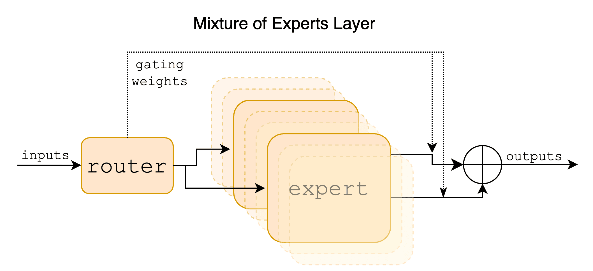
Маршрутизатор получает тот же вход, что и эксперты, и выдаёт веса гейта. Два эксперта с наибольшими весами (сплошные) реально считаются, остальные (полупрозрачные) — нет, но лежат в памяти. Выход слоя — взвешенная сумма выходов выбранных экспертов. Ровно эта картинка объясняет, почему у Mixtral 47 млрд параметров в памяти, но всего около 13 млрд активных на токен. Авторы проверили, специализируются ли эксперты по темам — например, есть ли «эксперт по математике». Ответ: явной тематической специализации нет.
Зато обнаружилась синтаксическая и позиционная структура:
- Отступы и служебные токены в коде устойчиво уходят к одним и тем же экспертам.
- Соседние токены часто попадают к одному эксперту — маршрутизация «липкая» по позиции.
- Распределение по темам (математика, биология, философия) почти равномерное.
Практический вывод: не пытайтесь интерпретировать экспертов как модули знаний. Это скорее выученное разбиение пространства признаков, чем понятная человеку декомпозиция.
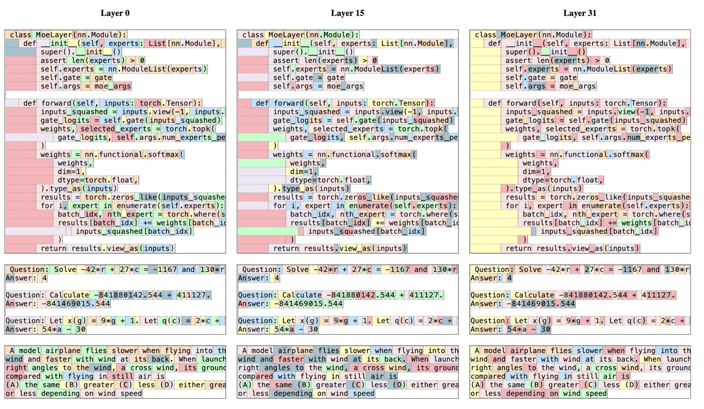
Цвет фона токена — выбранный для него эксперт, три колонки — слои 0, 15 и 31. Главное наблюдение: внутри одной темы (код, математика, текст) устойчивой специализации экспертов нет — раскраска не совпадает с семантикой. Зато хорошо видна позиционная закономерность: соседние токены часто уходят к одному эксперту, и это сходство растёт с глубиной. Специализация здесь синтаксическая и позиционная, а не тематическая. Самое частое разочарование при знакомстве с Mixtral: «модель на 13B активных — значит, влезет как 13B?» Нет.
Все эксперты должны быть доступны, потому что заранее неизвестно, куда маршрутизатор отправит следующий токен. Требования к памяти:
- fp16: около 93 ГБ — то есть две карты A100 80 ГБ или больше.
- 4-битная квантизация: около 24 ГБ только под веса — то есть ровно на границе карты с 24 ГБ, и с учётом KV-кэша и активаций одной RTX 4090 уже не хватает. Реально берут либо карту на 48 ГБ, либо две потребительские, либо более агрессивную квантизацию.
Для сравнения, плотная Mistral 7B в 4 битах — около 4.5 ГБ. То есть за качество уровня GPT-3.5 приходится платить пятикратной памятью, но не вычислениями.
Бенчмарк Mixtral 8x7B Llama 2 70B GPT-3.5 MMLU 70.6 69.9 70.0 GSM8K 58.4 53.6 57.1 HumanEval 40.2 29.9 48.1 MT-Bench (instruct) 8.30 6.86 8.32 При этом инференс Mixtral примерно в 5 раз дешевле по вычислениям, чем у Llama 2 70B: 12.9 млрд активных параметров против 70 млрд.
Разберём разницу явно, потому что она определяет, стоит ли брать MoE:
- Много запросов, есть память. MoE выигрывает: та же карта обслуживает в разы больше токенов в секунду, чем при плотной модели сравнимого качества.
- Мало памяти (одна карта, edge-устройство). MoE проигрывает: плотная модель того же объёма памяти будет лучше, потому что все её параметры работают.
- Батч из одного запроса. Выигрыш меньше ожидаемого: при батче 1 узкое место — не вычисления, а чтение весов из памяти, а читать приходится веса выбранных экспертов, которые от токена к токену меняются.
Отсюда правило: MoE — архитектура для серверного инференса с большим батчем, а не для локального запуска.
- Mixtral 8x22B (апрель 2024) — 141 млрд общих параметров, 39 млрд активных, контекст 64k.
- DeepSeek-V3 довёл идею до предела: 671 млрд общих параметров при 37 млрд активных, 256 экспертов на слой плюс общий (shared) эксперт, обрабатывающий все токены.
- MoE-версии Qwen и множества других моделей.
Общая тенденция: экспертов делают мельче и многочисленнее (не 8 крупных, а сотни мелких) — это даёт более тонкую специализацию и лучшее соотношение качества к активным параметрам.
- «8x7B = 56 млрд параметров». 46.7 млрд: экспертами заменены только FFN, внимание и эмбеддинги общие.
- «Активных 13B — значит, требования как у 13B-модели». По вычислениям да, по памяти — как у 47B.
- «Каждый эксперт отвечает за свою тему». Анализ показывает отсутствие тематической специализации; структура скорее синтаксическая и позиционная.
- Ждать выигрыша MoE при батче 1 на локальной машине. Основной выигрыш проявляется на серверном инференсе с большим батчем.
Почему Mixtral 8x7B содержит 46.7 млрд параметров, а не 56?
Потому что экспертами заменены только полносвязные слои, а эмбеддинги, слои внимания и нормализации общие для всех экспертов. Восьмикратно дублируется лишь часть модели.
Как работает маршрутизация в Mixtral?
В каждом блоке линейный маршрутизатор считает логиты по восьми экспертам для каждого токена, выбирает два лучших и смешивает их выходы с весами softmax по выбранным. Решение принимается независимо для каждого токена и каждого слоя.
Специализируются ли эксперты по темам?
Нет. Анализ показал почти равномерное распределение тематик по экспертам, но устойчивую синтаксическую и позиционную структуру: служебные токены и отступы в коде стабильно уходят к одним и тем же экспертам, а соседние токены часто попадают к одному и тому же.
Сколько памяти требует Mixtral и почему?
Около 93 ГБ в fp16 и около 24 ГБ под веса после 4-битной квантизации (плюс кэш и активации сверху), потому что все эксперты должны быть загружены: заранее неизвестно, куда маршрутизатор отправит следующий токен. Экономия MoE касается вычислений, а не памяти.
В каком сценарии MoE выгоден, а в каком нет?
Выгоден на серверном инференсе с большим батчем, где памяти достаточно и узкое место — вычисления. Невыгоден при жёстком ограничении памяти и при батче из одного запроса, где узкое место — чтение весов, а читать приходится веса меняющихся от токена к токену экспертов.
Куда развивается архитектура MoE после Mixtral?
В сторону более мелких и многочисленных экспертов: DeepSeek-V3 использует 256 экспертов на слой плюс общего эксперта, обрабатывающего все токены, при 671 млрд общих и 37 млрд активных параметров. Тонкая специализация даёт лучшее соотношение качества к числу активных параметров.
-
Llama (Meta): от Llama 1 до Llama 4
Llama (Meta AI) — самое влиятельное семейство открытых языковых моделей. Именно с Llama началась экосистема локальных LLM: инструменты
llama.cpp,Ollama,vLLM, форматы квантизации GGUF, тысячи дообученных вариантов на Hugging Face — всё это выросло вокруг неё.Главный тезис первой статьи (февраль 2023): при достаточно долгом обучении на открытых данных модель на 13 млрд параметров превосходит GPT-3 на 175 млрд. Это было практическое подтверждение выводов Chinchilla, доведённое до крайности.
Версия Дата Размеры Токенов обучения Контекст Ключевое Llama 1 02.2023 7 / 13 / 33 / 65B 1–1.4 трлн 2k только исследования Llama 2 07.2023 7 / 13 / 70B 2 трлн 4k коммерческая лицензия, GQA, RLHF Llama 3 04.2024 8 / 70B 15 трлн 8k словарь 128k, GQA во всех размерах Llama 3.1 07.2024 8 / 70 / 405B 15 трлн 128k крупнейшая открытая плотная модель Llama 3.2 09.2024 1 / 3B, 11 / 90B vision — 128k компактные и мультимодальные версии Llama 3.3 12.2024 70B — 128k качество 405B при 70B Llama 4 2025 линейка Scout / Maverick — сверхдлинный MoE, изначальная мультимодальность До неё открытые модели (OPT, BLOOM) были большими, недообученными и посредственными по качеству. Llama пошла в противоположную сторону: маленькие модели, обученные неприлично долго.
Соотношение токенов к параметрам у Llama 1 7B — примерно 143 при «оптимальных» по Chinchilla 20. С точки зрения стоимости обучения это расточительно. С точки зрения эксплуатации — единственно верно: модель обучается один раз, а работать будет годами и на миллиардах запросов.
Побочный эффект, изменивший всё: 7B помещается в потребительскую видеокарту. Веса «утекли» через неделю после ограниченного релиза, и сообщество мгновенно построило вокруг них экосистему.
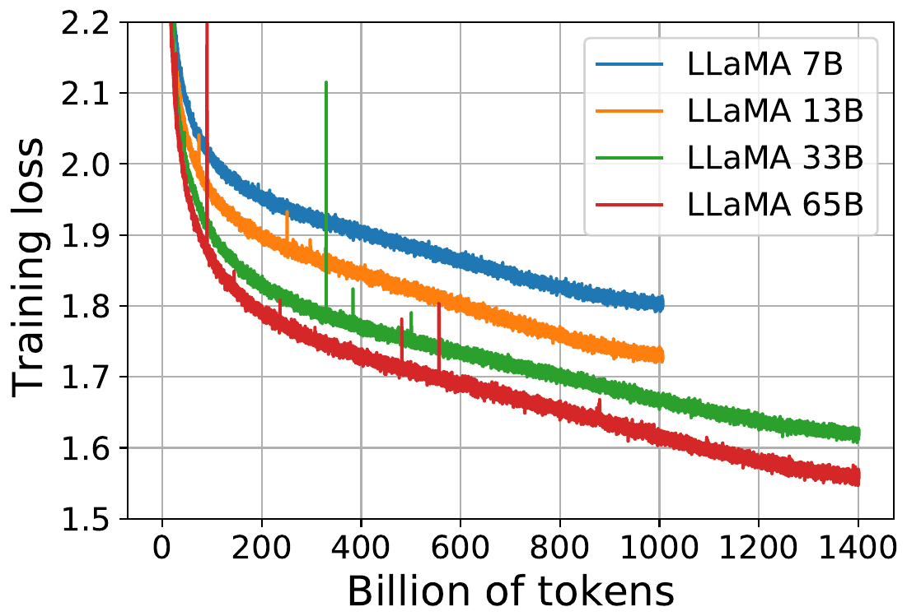
Ось абсцисс важнее оси ординат. Chinchilla-оптимум для модели на 7 млрд параметров — около 140 млрд токенов; Llama 7B обучали на 1 трлн, то есть примерно в семь раз дольше, а 65B — на 1.4 трлн. Кривые к концу всё ещё идут вниз: обучение остановили не потому, что модель перестала улучшаться, а потому что закончился бюджет. Это и есть смена цели — компьютно-оптимальное обучение заменили на оптимальный инференс: платишь за обучение один раз, а за запуск модели — миллиарды раз. Базовый стек Llama 1 задал шаблон для всей индустрии: Pre-LN + RMSNorm, SwiGLU, RoPE, отсутствие bias.
Что добавлялось дальше:
- Llama 2: GQA в модели 70B, контекст 4k, полноценный RLHF-пайплайн с двумя раздельными моделями наград — за полезность и за безопасность.
- Llama 3: GQA во всех размерах; словарь расширен с 32k до 128k токенов, что примерно на 15% сократило длину типичного текста в токенах и заметно улучшило работу с неанглийскими языками.
- Llama 3.1: база RoPE поднята до 500 000 ради контекста 128k; модель 405B обучена на 16 000 картах H100.
- Llama 4: переход на MoE и мультимодальность с самого начала обучения, а не дообучением.
Llama 3 8B обучена на 15 трлн токенов — это $D/N \approx 1875$, почти в 100 раз больше «компьютно-оптимального» значения. Кривая лосса к концу обучения всё ещё снижалась, то есть модель даже не вышла на плато.
Что это означает практически: для маленьких моделей потолок задаётся не архитектурой, а объёмом и качеством данных, и он гораздо выше, чем предполагали законы масштабирования, сформулированные для стоимости обучения.
Отдельная часть работы — фильтрация: Meta описывает многоступенчатую очистку 15 трлн токенов с использованием классификаторов качества, дедупликации на нескольких уровнях и отдельных пайплайнов для кода и математики.
Llama 2 и последующие выпускаются под Llama Community License, а не под Apache 2.0 или MIT. Ключевые ограничения:
- Требуется отдельная лицензия, если у продукта более 700 млн активных пользователей в месяц (пункт, направленный на крупнейших конкурентов).
- Есть политика допустимого использования с перечнем запрещённых применений.
- Производные модели обязаны нести имя Llama в названии и указывать происхождение.
Поэтому корректнее говорить «модель с открытыми весами» (open-weights), а не «open-source»: код обучения и данные не публикуются, а лицензия не соответствует определению открытого ПО.
Причин несколько, и все они внешние по отношению к качеству модели:
- Ранний доступ. Llama 1 оказалась в открытом доступе тогда, когда альтернатив сравнимого качества не было.
- Линейка размеров. От 1B до 405B с одинаковой архитектурой: можно прототипировать на маленькой и разворачивать на большой без переписывания кода.
- Стабильность формата. Архитектура почти не менялась между версиями, поэтому инструменты не ломались:
llama.cppподдерживал новые версии почти сразу. - Разрешённое коммерческое использование начиная с версии 2.
- «Llama — open source». Это open-weights: код обучения и данные закрыты, лицензия содержит ограничения. Формально это не открытое ПО.
- «Llama 3 8B хуже Llama 2 70B, потому что меньше». По многим бенчмаркам 8B обходит Llama 2 70B за счёт 15 трлн токенов обучения. Размер сам по себе давно не определяет качество.
- Сравнивать base- и instruct-версии. У Meta это разные модели: base продолжает текст, instruct следует инструкциям. Промптить их надо по-разному.
- Ждать, что дообучение исправит нехватку знаний. Fine-tuning на нескольких тысячах примеров меняет формат и стиль ответа, но почти не добавляет фактических знаний — их источник предобучение.
В чём состоял главный тезис первой статьи про Llama?
Что при достаточно долгом обучении на открытых данных модель на 13 млрд параметров превосходит GPT-3 на 175 млрд. Это практическое подтверждение выводов Chinchilla, доведённое до крайности: модели обучались далеко за пределами компьютно-оптимальной точки.
Почему Llama обучают далеко за пределами оптимума Chinchilla?
Потому что оптимум Chinchilla минимизирует стоимость обучения, а на практике доминирует стоимость инференса. Модель обучается один раз, а обслуживает миллиарды запросов, поэтому выгодно потратить лишние вычисления на обучение и получить навсегда маленькую и дешёвую модель.
Какой архитектурный стек задала Llama и что менялось в поздних версиях?
Pre-LN с RMSNorm, SwiGLU, RoPE и отсутствие bias-членов. Далее добавились GQA (в Llama 2 для 70B, в Llama 3 для всех размеров), словарь на 128k токенов, увеличение базы RoPE до 500 000 ради контекста 128k и переход на MoE с мультимодальностью в Llama 4.
Что дало расширение словаря с 32k до 128k токенов в Llama 3?
Примерно 15% сокращения длины типичного текста в токенах, что удешевляет инференс и позволяет уместить больше содержания в контекст, а также заметно лучшее качество на неанглийских языках, которые прежде дробились на избыточное число токенов.
Почему Llama корректнее называть open-weights, а не open-source?
Публикуются только веса: код обучения и состав данных закрыты, а лицензия содержит ограничения — требование отдельного соглашения для сервисов с более чем 700 млн пользователей в месяц, политику допустимого использования и требования к наименованию производных моделей.
Почему экосистема локальных LLM сложилась именно вокруг Llama?
Из-за раннего доступа при отсутствии альтернатив, широкой линейки размеров с единой архитектурой, стабильности формата между версиями (инструменты не ломались) и разрешённого коммерческого использования начиная со второй версии.
-
Falcon (2023)
Falcon (Technology Innovation Institute, Абу-Даби, 2023) — семейство открытых моделей (1B, 7B, 40B, позже 180B). Модели до 40B включительно в итоге вышли под Apache 2.0; у Falcon-180B лицензия своя и ограничительная — подробнее ниже.
Falcon-40Bкакое-то время возглавляла открытый рейтинг Hugging Face, обойдя Llama 1 65B.Главный вклад проекта — не архитектура, а RefinedWeb: демонстрация того, что тщательно отфильтрованный веб-скрап один, без книг и научных статей, даёт модели не хуже, а лучше, чем «кураторские» корпуса.
До Falcon господствовало убеждение: веб — это мусор, поэтому качественная модель требует «благородных» источников — книг, arXiv, Википедии, Stack Exchange. Именно так устроены The Pile и корпус GPT-3.
Falcon показала обратное: если очень агрессивно фильтровать Common Crawl, получится корпус лучшего качества, чем кураторская смесь. И, что важнее практически, веба много — из него можно набрать триллионы токенов, тогда как книги и научные статьи конечны и упираются в потолок.
Обработка Common Crawl шла в несколько этапов, каждый из которых отбрасывает значительную долю данных:
- Фильтрация URL. Блок-листы порнографии, спама, агрегаторов; отсев доменов с преимущественно машинным контентом.
- Извлечение текста через
trafilatura— вытаскивание содержательной части страницы без меню, футеров и рекламы (что заметно чище наивного удаления HTML-тегов). - Языковая фильтрация классификатором
fastTextс порогом уверенности. - Эвристики качества — те же, что в Gopher: доля слов из стоп-листа, средняя длина слова, доля строк-дубликатов, соотношение символов и букв.
- Дедупликация в два прохода: нечёткая (MinHash — поиск почти совпадающих документов) и точная (поиск повторяющихся подстрок через суффиксные массивы).
Из 100 ТБ исходного Common Crawl осталось около 5 трлн токенов — примерно 10% от объёма после первичной обработки.
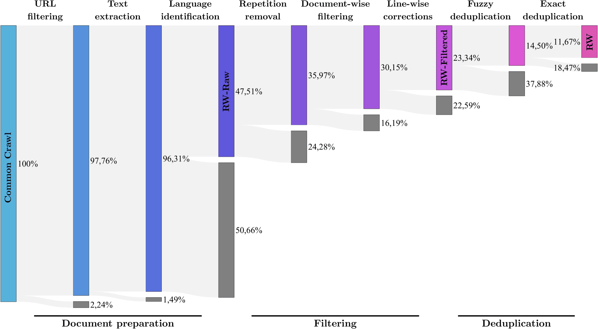
Диаграмма потоков: слева весь Common Crawl (100%), справа — то, что дошло до обучения. Серые ответвления — выброшенное на каждом шаге. Серые проценты — доля, выброшенная на данном шаге от того, что в него пришло; цветные — доля от исходного Common Crawl. Обратите внимание на пропорции: подготовка документов почти ничего не режет (100% $\to$ 96,31%), самый большой единичный отсев — удаление повторов, оно одно съедает половину входа (96,31% $\to$ 47,51%), а вся стадия фильтрации в сумме оставляет 30,15%. Дедупликация добивает результат до 11,7% исходного объёма. Главный тезис Falcon именно здесь: правильно отфильтрованный веб без единой «курируемой» книги даёт данные не хуже смешанных корпусов вроде The Pile. Это, пожалуй, главный практический урок RefinedWeb. Веб полон повторов: одна новость перепечатана на сотнях сайтов, один фрагмент кода скопирован в тысячи репозиториев, шаблонные тексты (лицензии, куки-баннеры) встречаются миллионами.
Что даёт удаление дубликатов:
- Модель не запоминает повторы дословно. Многократно встреченный фрагмент модель начинает воспроизводить наизусть — это ухудшает обобщение и создаёт риск утечки данных.
- Обучающий бюджет тратится на разнообразие. Один и тот же текст, показанный 50 раз, даёт куда меньше пользы, чем 50 разных текстов.
- Улучшается качество на бенчмарках — эффект измерим и заметен.
Эксперименты авторов показали: модель на дедуплицированном вебе обходит модель на The Pile при равном числе токенов.
- Multi-Query Attention (MQA) — одна пара ключ/значение на все головы, кэш минимален. Это был осознанный выбор в пользу дешёвого инференса ещё до того, как GQA стал стандартом компромисса.
- Параллельные слои внимания и MLP — как в GPT-J и PaLM.
- RoPE, отсутствие bias.
- Falcon-180B (сентябрь 2023) — 180 млрд параметров, 3.5 трлн токенов: крупнейшая открытая модель до выхода Llama 3.1 405B.
Первоначально Falcon-40B вышла под лицензией, требующей роялти с коммерческого использования при выручке выше порога. Сообщество восприняло это плохо, и через два месяца TII перевыпустила модель под Apache 2.0.
Falcon-180B, однако, снова вышла под собственной ограничительной лицензией — что вместе с непрактичным размером (около 400 ГБ в fp16) резко ограничило её применение.
Урок для тех, кто выпускает модели: предсказуемость лицензии важнее её щедрости. Сообщество не строит инфраструктуру вокруг модели, условия которой могут измениться.
Как рабочие модели Falcon вытеснены Llama, Mistral и Qwen. Но RefinedWeb оказался долгоживущим вкладом: его пайплайн и опубликованная часть корпуса (600 млрд токенов) легли в основу последующих открытых датасетов, включая FineWeb — сегодняшний стандарт для веб-корпусов.
Общий сдвиг индустрии, к которому Falcon приложила руку: работа с данными из «подготовительного этапа» превратилась в самостоятельную исследовательскую область с собственными статьями, бенчмарками и инженерными командами.
- «Falcon лучше Llama, потому что была выше в рейтинге». Лидерство длилось недолго и относилось к конкретной версии рейтинга; современные модели обеих линий несопоставимы с теми.
- «Веб-данные не нужны, нужны книги». RefinedWeb показала обратное: отфильтрованный веб конкурентоспособен и, в отличие от книг, масштабируется до триллионов токенов.
- Недооценивать дедупликацию. Это одна из самых дешёвых операций с наибольшим эффектом на качество модели.
- Брать MQA по примеру Falcon. Сегодня стандарт — GQA: почти та же экономия кэша при заметно меньшей потере качества.
Что такое RefinedWeb и почему этот результат был неожиданным?
Корпус на основе агрессивно отфильтрованного Common Crawl, показавший, что один только веб даёт модели не хуже, чем кураторские смеси с книгами и научными статьями. До этого считалось, что качественная модель требует «благородных» источников.
Из каких этапов состоит пайплайн очистки веб-корпуса?
Фильтрация URL по блок-листам, извлечение содержательного текста из HTML, языковая фильтрация классификатором, эвристики качества текста и двухэтапная дедупликация — нечёткая через MinHash и точная по повторяющимся подстрокам. Из 100 ТБ Common Crawl осталось около 5 трлн токенов.
Почему дедупликация так сильно влияет на качество модели?
Многократно повторённые фрагменты модель начинает воспроизводить дословно, что ухудшает обобщение и создаёт риск утечки данных, а обучающий бюджет тратится впустую вместо разнообразных текстов. Эмпирически модель на дедуплицированном вебе обходит модель на кураторском корпусе при равном числе токенов.
Какие архитектурные решения использует Falcon?
Multi-Query Attention ради минимального KV-кэша, параллельные слои внимания и MLP, RoPE и отсутствие bias-членов. Сегодня вместо MQA предпочитают GQA — почти та же экономия при меньшей потере качества.
Какой урок про лицензирование даёт история Falcon?
Что предсказуемость условий важнее их щедрости: первоначальная лицензия с роялти оттолкнула сообщество, а последующие метания между Apache 2.0 и собственной ограничительной лицензией не позволили экосистеме сложиться вокруг этих моделей.
Что осталось от проекта Falcon в индустрии?
Пайплайн RefinedWeb и опубликованная часть корпуса, ставшие основой для последующих открытых датасетов вроде FineWeb, а также общее превращение работы с данными в самостоятельную исследовательскую область.
-
Qwen (Alibaba): Qwen 1 $\to$ Qwen 2 $\to$ Qwen 3
Qwen (通义千问, Alibaba Cloud) — семейство открытых моделей, ставшее к середине 2020-х одним из основных конкурентов Llama в мире open-weights. Отличительные черты линейки:
- Очень широкая линейка размеров — от долей миллиарда параметров для устройств до сотен миллиардов в MoE-вариантах;
- Сильная многоязычность, в том числе заметно лучшая, чем у Llama, работа с китайским и — что важно для русскоязычных задач — с русским;
- Лицензия Apache 2.0 для большинства размеров;
- Специализированные ветки: Qwen-Coder для кода, Qwen-Math для математики, Qwen-VL для мультимодальных задач, Qwen-Audio для речи.
Версия Дата Ключевое Qwen 1 2023 1.8B–72B, контекст 8k–32k, старт линейки Qwen1.5 02.2024 добавлен MoE-вариант, единый формат для всех размеров Qwen2 06.2024 0.5B–72B, GQA во всех размерах, контекст до 128k, 29 языков Qwen2.5 09.2024 обучение на 18 трлн токенов, сильные Coder- и Math-версии Qwen3 2025 плотные и MoE-модели, гибридный режим «думать / отвечать сразу» Более поздние выпуски линейки (Qwen 3.x) продолжают эти направления, добавляя нативную мультимодальность и наращивая размеры MoE-вариантов; конкретные конфигурации стоит сверять с актуальной документацией, поскольку линейка обновляется часто.
Наиболее интересная архитектурная идея Qwen3 — гибридное мышление: одна и та же модель умеет работать в двух режимах.
- Thinking mode — модель сначала генерирует развёрнутую цепочку рассуждений, а потом ответ. Дороже по токенам, точнее на математике, коде и логике.
- Non-thinking mode — сразу выдаёт ответ. Дешевле и быстрее, достаточно для простых запросов.
Раньше это требовало двух разных моделей (обычной и reasoning-версии) или хотя бы отдельного дообучения. Возможность переключать режим в одной модели — прямая экономия: не нужно держать в памяти две модели и выбирать между ними на уровне маршрутизации запросов.
Управление режимом делается либо параметром API, либо специальными тегами в промпте.
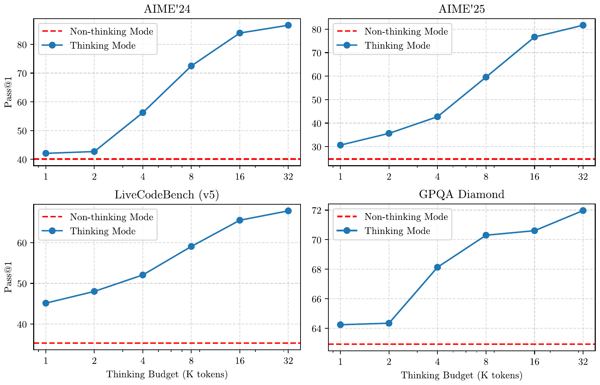
Одна и та же модель, меняется только разрешённое число токенов рассуждения (ось абсцисс, логарифмическая). Красный пунктир — режим без рассуждения. Видно две вещи. Первая: качество растёт монотонно с бюджетом, то есть рассуждение действительно конвертирует вычисления в точность. Вторая: наклон разный по задачам — на AIME рост с 42% до 86%, на GPQA всего с 64% до 72%. Значит бюджет стоит выставлять под задачу, а не выкручивать на максимум по умолчанию. Практическое наблюдение, важное для русскоязычных проектов: при сопоставимом размере модели Qwen обычно работают с русским лучше, чем Llama. Причины:
- Больший и более сбалансированный словарь (около 152 тыс. токенов) — русский текст кодируется меньшим числом токенов, значит дешевле и лучше моделируется.
- Существенная доля неанглийских данных в корпусе: линейка изначально проектировалась как многоязычная, а не как англоязычная с добавками.
Проверять это, разумеется, нужно на своей задаче, но как отправная точка для русскоязычного продукта Qwen — разумный дефолт наравне с дообученными на русском вариантами Llama и Mistral.
Qwen следует общему современному стеку: Pre-LN + RMSNorm, SwiGLU, RoPE, GQA. Заметные особенности:
- bias в проекциях QKV — в отличие от Llama, где bias убран везде. Авторы сообщают, что это немного улучшает экстраполяцию на длинный контекст.
- Tied embeddings в маленьких моделях: таблицы входных и выходных эмбеддингов общие, что для модели на 0.5B экономит заметную долю параметров.
- MoE-варианты с мелкозернистыми экспертами и общим (shared) экспертом — та же линия, что у DeepSeek.
- Расширение контекста через YaRN — до 128k и выше в поздних версиях.
Alibaba последовательно выпускает не одну универсальную модель, а набор специализированных:
- Qwen-Coder — дообучение на большом корпусе кода с задачами заполнения середины файла (fill-in-the-middle) и работой на уровне репозитория, а не отдельного файла.
- Qwen-Math — дообучение на математике с генерацией пошаговых решений и проверкой их корректности.
- Qwen-VL — визуальный энкодер плюс языковая модель: работа с изображениями, документами, графиками, OCR.
- Qwen-Audio — распознавание и понимание речи.
Логика простая: на узкой задаче специализированная модель на 7B часто обходит универсальную на 70B, а стоит на порядок дешевле в эксплуатации.
- «Qwen — китайская модель, значит только для китайского». Модели многоязычные, и на английском они конкурентоспособны с лучшими открытыми аналогами.
- Не проверить лицензию конкретного размера. Большинство моделей под Apache 2.0, но у отдельных крупных версий условия отличаются — смотреть карточку модели.
- Использовать thinking mode для всех запросов. Он значительно дороже по токенам; на простых задачах прироста качества нет, а счёт растёт.
- Ожидать, что Coder-версия хороша в общем диалоге. Специализация имеет цену: доменное дообучение почти всегда ухудшает общие способности.
Чем семейство Qwen отличается от Llama?
Более широкой линейкой размеров, изначально многоязычным проектированием с сильной поддержкой китайского и хорошей работой с русским, лицензией Apache 2.0 для большинства размеров и наличием специализированных веток для кода, математики, зрения и речи.
Что такое гибридный режим рассуждения в Qwen3?
Возможность одной модели работать в двух режимах: с развёрнутой цепочкой рассуждений перед ответом и без неё. Раньше для этого требовались две разные модели, теперь режим переключается параметром API или тегами в промпте, что экономит память и упрощает маршрутизацию запросов.
Почему Qwen обычно лучше работает с русским языком, чем Llama сравнимого размера?
Из-за большего и более сбалансированного словаря (около 152 тыс. токенов), который кодирует русский текст меньшим числом токенов, и из-за существенно большей доли неанглийских данных в обучающем корпусе.
Какие архитектурные особенности отличают Qwen от Llama?
Сохранённые bias-члены в проекциях запросов, ключей и значений, что немного улучшает экстраполяцию на длинный контекст; общие входные и выходные эмбеддинги в маленьких моделях; MoE-варианты с мелкозернистыми экспертами и общим экспертом; расширение контекста через YaRN.
Зачем выпускать специализированные модели вместо одной универсальной?
Потому что на узкой задаче специализированная модель на 7 млрд параметров часто обходит универсальную на 70 млрд, а стоит на порядок дешевле в эксплуатации. Плата — ухудшение общих способностей, поэтому специализированную модель не стоит использовать вне её домена.
Когда не стоит включать режим рассуждения?
На простых запросах — извлечении факта, коротком переписывании, классификации: прироста качества там нет, а расход токенов и задержка растут в разы.
-
Phi (Microsoft): «учебники — это всё, что нужно»
Phi (Microsoft Research) — семейство компактных моделей, построенных на одной радикальной гипотезе: качество данных важнее их количества и важнее размера модели.
Название первой статьи — «Textbooks Are All You Need» — прямо отсылает к этому тезису: если обучать модель не на всём вебе, а на текстах учебникового качества, то модель на 1.3 млрд параметров решает задачи, которые прежде требовали десятков миллиардов.
Модель Дата Параметры Данные Результат Phi-1 06.2023 1.3B 7 млрд токенов кода «учебникового» качества 50.6% HumanEval Phi-1.5 09.2023 1.3B + синтетические «учебники» общего профиля уровень моделей в 5–10 раз больше Phi-2 12.2023 2.7B 1.4 трлн токенов обходит Llama 2 13B на рассуждении Phi-3 04.2024 3.8B / 7B / 14B 3.3–4.8 трлн токенов mini(3.8B) сопоставима с GPT-3.5Phi-4 12.2024 14B акцент на синтетике для рассуждения сильные результаты на математике Проще всего объяснить через контраст. Типичный фрагмент из веб-корпуса — это код со Stack Overflow без объяснений, обрывок форумного спора или страница документации с меню и рекламой. Формально это текст, но обучающего сигнала в нём мало.
«Учебник» в терминах Phi — текст, который:
- самодостаточен (не требует внешнего контекста, чтобы быть понятным);
- объясняет, а не только показывает — есть рассуждение, а не только результат;
- имеет чёткую структуру — постановка задачи, решение, пояснение;
- не содержит шума — навигации, рекламы, повторов, оборванных фрагментов.
Данные Phi собирались двумя путями: фильтрацией веба классификатором «учебниковости» и генерацией синтетики более сильной моделью (GPT-3.5/GPT-4) по заданным темам.
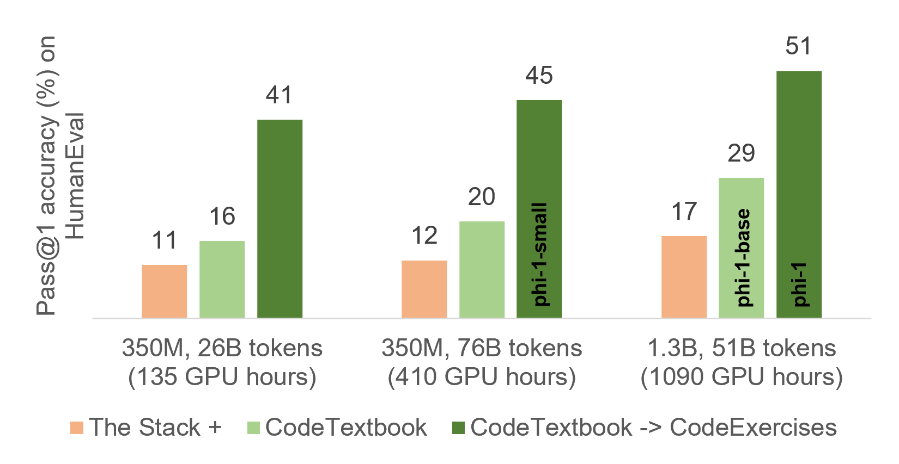
Три группы столбцов — три бюджета обучения. Внутри каждой: обычный отфильтрованный код из The Stack (оранжевый), синтетический «учебник» (светло-зелёный) и учебник плюс синтетические упражнения (тёмно-зелёный). Смотреть надо внутри группы: при 1.3B параметров переход от обычного кода к учебнику даёт 17% $\to$ 29%, а добавление синтетических упражнений — ещё 29% $\to$ 51%. И только после этого сравнения становится видно главное: модель на 350M с учебником и упражнениями (45%) обгоняет модель на 1.3B с обычным кодом (17%) — вчетверо меньше параметров и вдвое больше точности. Вместо того чтобы брать случайный фрагмент кода из GitHub, генератору дают задание в духе: «Напиши раздел учебника по Python про функцию сортировки списка кортежей по второму элементу, с объяснением, почему используется
key, и с типичной ошибкой новичка».На выходе — связный текст с постановкой, кодом, разбором и предостережением. Такой фрагмент даёт модели на порядок больше сигнала, чем найденный в вебе кусок кода без контекста.
Дополнительный приём — разнообразие через комбинаторику: генератору подают случайные комбинации темы, уровня сложности и стиля, чтобы синтетика не выродилась в однообразие.
Главная претензия к семейству Phi: если синтетические данные генерирует сильная модель, как гарантировать, что в них не попали задачи из тестовых наборов?
Возможные механизмы утечки:
- Генератор мог воспроизвести задачу из бенчмарка, встреченную в собственном обучении.
- Даже без дословного совпадения синтетика может быть стилистически «подогнана» под формат популярных бенчмарков.
Microsoft описывает меры дедупликации и проверки на пересечение с тестовыми наборами, но независимо проверить это невозможно: данные не опубликованы. Практическое наблюдение сообщества — модели Phi выглядят на бенчмарках сильнее, чем ощущаются в свободном диалоге.
Из этого следует общее правило: для маленьких моделей с необычно высокими результатами всегда проверяйте качество на собственных данных, а не по опубликованным цифрам.
- Хороша: структурированные задачи с чётким ответом — математика, код, логические рассуждения, извлечение данных по заданной схеме. Плюс работа на устройстве: 3.8B в 4 битах — около 2 ГБ, реально запускается на телефоне.
- Слабее: фактические знания о мире. Модель, обученная преимущественно на «учебниках», просто не видела большую часть того длинного хвоста фактов, который есть в вебе: кто снялся во второстепенной роли в фильме 1997 года, какие районы есть в конкретном городе.
Это закономерный размен: чистые данные дают рассуждение, широкие данные — эрудицию. Отсюда типичный продуктовый вывод: маленькая модель хороша в связке с RAG, где факты приходят из внешнего источника, а модель отвечает за рассуждение и формулировку.
Независимо от споров о бенчмарках, линейка Phi изменила общее отношение к данным:
- Синтетика стала легитимной. До Phi обучение на данных, сгенерированных другой моделью, считалось сомнительным. Сегодня это стандартная часть пайплайна почти всех сильных моделей.
- Появились классификаторы качества данных. Отбор «учебниковых» фрагментов из веба вошёл в стандартные пайплайны (например, в FineWeb-Edu).
- Маленькие модели перестали считаться игрушками. Категория SLM (small language models) сформировалась во многом благодаря Phi.
- «Phi-3 mini заменяет GPT-4». Нет: на структурированных задачах она конкурентоспособна, на широких знаниях и сложном многошаговом рассуждении — существенно слабее.
- Верить бенчмаркам маленьких моделей без собственной проверки. Риск загрязнения тестовыми данными здесь особенно высок.
- «Синтетика решает проблему нехватки данных». Частично: синтетика хорошо передаёт навыки и форматы, но не создаёт новых фактов о мире — она может лишь перекомпоновать то, что знала модель-генератор.
- Обучать модель только на синтетике. Это ведёт к сужению распределения и потере разнообразия; на практике синтетику смешивают с отфильтрованными реальными данными.
В чём состоит основная гипотеза линейки Phi?
Что качество обучающих данных важнее их объёма и важнее размера модели: обучение на текстах учебникового качества позволяет модели на несколько миллиардов параметров решать задачи, прежде требовавшие десятков миллиардов.
Что понимается под «учебниковым» текстом?
Самодостаточный текст с чёткой структурой, который объясняет, а не только показывает результат, и не содержит навигационного шума, рекламы и обрывков. Такие данные получают фильтрацией веба классификатором качества и генерацией синтетики более сильной моделью.
В чём главная методологическая претензия к моделям Phi?
В риске загрязнения бенчмарков: синтетику генерирует сильная модель, которая могла воспроизвести задачи из тестовых наборов или подогнать стиль под них. Проверить это независимо нельзя, поскольку данные не публикуются, и на практике модели ощущаются слабее, чем выглядят по цифрам.
На каких задачах Phi сильна, а на каких заведомо слаба?
Сильна на структурированных задачах с проверяемым ответом — математике, коде, логике, извлечении данных по схеме. Слаба на фактических знаниях о мире, потому что «учебниковый» корпус не содержит длинного хвоста фактов, который есть в вебе.
Почему маленькую модель разумно использовать вместе с RAG?
Потому что она хорошо рассуждает и формулирует, но плохо помнит факты. RAG подаёт факты из внешнего источника прямо в контекст, снимая с модели ту функцию, для которой ей не хватает объёма знаний.
Что синтетические данные дают, а чего дать не могут?
Они хорошо передают навыки, форматы и стиль рассуждения, но не создают новых фактов о мире: синтетика лишь перекомпоновывает то, что знала модель-генератор. Поэтому её смешивают с отфильтрованными реальными данными, иначе распределение сужается и теряется разнообразие.
-
Gemma (Google)
Gemma (Google DeepMind, с февраля 2024) — семейство моделей с открытыми весами, построенное на исследованиях и технологиях, стоящих за закрытым семейством Gemini. Название от латинского gemma — «драгоценный камень».
Позиционирование линейки — максимум качества на единицу размера: модели проектируются так, чтобы работать на одной видеокарте, на ноутбуке или на телефоне, а не в дата-центре.
Версия Дата Размеры Ключевое Gemma 1 02.2024 2B, 7B словарь 256k, GeGLU, старт линейки CodeGemma 2024 2B, 7B ветка для генерации и дополнения кода RecurrentGemma 2024 2B, 9B вариант на рекуррентной архитектуре Griffin Gemma 2 06.2024 2B, 9B, 27B чередование SWA и полного внимания, logit soft-capping, дистилляция Gemma 3 03.2025 1B–27B мультимодальность, контекст 128k, 140+ языков Gemma 4 06.2026 2.3B–31B dense и MoE, encoder-free мультимодальность, thinking mode, MTP-драфтеры Последующие выпуски линейки продолжают тот же курс — компактность, мультимодальность и работа на устройстве; конкретные конфигурации стоит сверять с актуальными карточками моделей.
Ключевое отличие Gemma от Llama и Mistral: маленькие модели обучаются не только на тексте, но и на выходах большой модели-учителя.
При обычном обучении цель — угадать один правильный токен, и модель получает «жёсткую» метку: правильный ответ 1, все остальные 0. При дистилляции целью становится всё распределение вероятностей учителя по словарю: $$\mathcal{L} = -\sum_{v \in V} p_{\text{teacher}}(v \mid x) \log p_{\text{student}}(v \mid x)$$
Информации в этом на порядки больше: ученик узнаёт не только «какой токен правильный», но и «какие альтернативы были правдоподобны и насколько». Это называют «тёмным знанием» (dark knowledge) учителя.
Контекст:
Столица Франции — ...- Жёсткая метка:
Париж= 1, всё остальное = 0. - Распределение учителя:
Париж= 0.92,Лион= 0.02,Марсель= 0.015,Берлин= 0.001,картофель= $10^{-9}$.
Второй вариант сообщает ученику структуру задачи: что Лион и Марсель — тоже французские города (правдоподобная ошибка), Берлин — столица, но не та (ошибка другого рода), а
картофельвообще не из этой категории. За один пример ученик получает столько же полезного сигнала, сколько дала бы сотня примеров с жёсткими метками.- Огромный словарь — 256 тыс. токенов (против 32k у Llama 2 и 128k у Llama 3). Дорого по памяти эмбеддингов, но резко улучшает работу с неанглийскими языками и сокращает длину текста в токенах.
- GeGLU вместо SwiGLU — тот же гейт, но с GELU вместо Swish.
- Чередование SWA и полного внимания (Gemma 2/3): часть слоёв использует скользящее окно, часть — полное внимание. Компромисс между стоимостью и точным доступом к дальнему контексту.
- Logit soft-capping — мягкое ограничение логитов через $\text{cap} \cdot \tanh(x/\text{cap})$ вместо жёсткой обрезки. Стабилизирует обучение, не создавая разрывов в градиенте.
- Нормализация и на входе, и на выходе подслоя (sandwich norm) — дополнительная устойчивость.
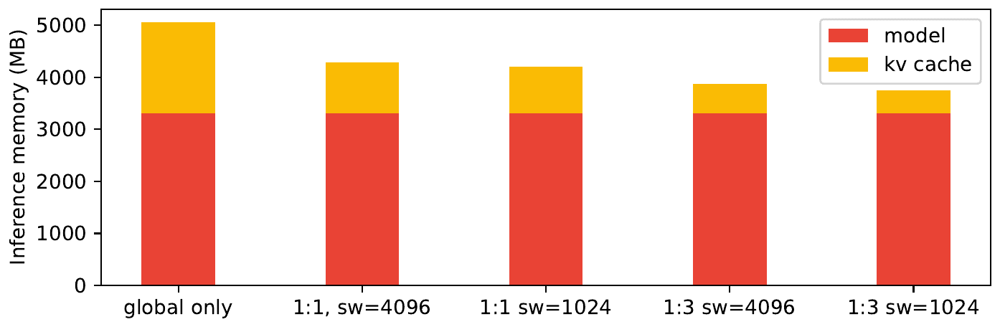
Память на инференсе при контексте 32k. Красное — веса модели, они не меняются; жёлтое — KV-кэш. Слева все слои с полным вниманием: кэш занимает примерно треть всей памяти. Дальше — варианты чередования, где на один слой с полным вниманием приходится один или три слоя со скользящим окном. При соотношении 1:3 и окне 1024 кэш сжимается почти в четыре раза, а качество, по замерам авторов, практически не проседает. Токенизатор, обученный преимущественно на английском, дробит другие языки на мелкие куски: одно русское слово может занять 3–5 токенов вместо одного.
Последствия тройные:
- Дороже. Тот же текст стоит в разы больше токенов — и по деньгам, и по времени.
- Меньше помещается в контекст. При окне 8k реального русского текста влезает существенно меньше, чем английского.
- Хуже качество. Модели труднее выучить закономерности языка, когда морфема разорвана между токенами.
Словарь на 256k позволяет выделить осмысленные единицы для сотен языков сразу. Плата — таблица эмбеддингов на 256 000 $\times$ $d$ параметров, что для модели на 2B составляет заметную долю всех весов. Именно поэтому маленькие Gemma используют общие входные и выходные эмбеддинги.
Gemma не конкурирует с фронтир-моделями по абсолютному качеству — она конкурирует по качеству на единицу ресурса:
- На устройстве. Модели на 1–2B в 4 битах занимают около 1–1.5 ГБ и работают на телефоне без сети — это приватность, нулевая задержка сети и отсутствие платы за токены.
- Одна видеокарта. Модель на 27B в 4 битах помещается в 16–24 ГБ, то есть в одну потребительскую карту.
- Дообучение. Компактные модели дёшево дообучать под домен методами вроде LoRA.
Gemma 4 (июнь 2026) — самый крупный шаг линейки. Диапазон размеров расширился до 2.3B–31B, и впервые в семействе есть не только плотные модели, но и MoE: вариант 26B-A4B, где из 26 миллиардов параметров на токен активны около четырёх.
Три главных новшества:
- Encoder-free мультимодальность у модели 12B — она принимает сырые аудио- и image-патчи напрямую, без отдельных энкодеров;
- Thinking mode — модель может сгенерировать трассу рассуждений перед ответом;
- MTP-драфтеры — отдельно выложенные головы для ускорения генерации.
Улучшенные визуальные и аудиоэнкодеры при этом остались у всех остальных размеров.
Обычная мультимодальная модель устроена как связка: отдельный визуальный энкодер (чаще всего ViT) превращает картинку в набор векторов, проектор подгоняет их под пространство языковой модели, и только потом они попадают в трансформер.
Encoder-free архитектура убирает этот промежуточный этап: патчи изображения и аудио идут в ту же самую стопку слоёв, что и текстовые токены. Модальности перестают быть «пристройкой» и обрабатываются единым механизмом.
Практический выигрыш — меньше параметров и проще пайплайн; исследовательский — модель может выучивать связи между модальностями на всех слоях, а не только после проекции.
Вместе с моделями Google выложил MTP-драфтеры — маленькие головы для спекулятивного декодирования, под той же лицензией Apache 2.0.
Драфтер предсказывает несколько токенов вперёд, основная модель проверяет их за один проход. Заявленное ускорение — до 3× без потери качества: при жадном декодировании выход побитово совпадает с выходом самой модели.
Устройство драфтера и почему он обходится без собственного prefill — в вопросе Multi-Token Prediction.
- «Gemma — это открытый Gemini». Нет: это отдельные модели, обученные с использованием тех же технологий и исследований, но не уменьшенные копии Gemini.
- Игнорировать формат промпта. У Gemma собственный шаблон диалога с тегами вида
<start_of_turn>; при использовании чужого формата качество заметно падает. - «Большой словарь всегда лучше». Для одноязычной модели это чистые потери: таблица эмбеддингов раздувается, а выигрыша нет.
- Считать дистилляцию бесплатной. Она требует прогонов модели-учителя по всему корпусу — то есть большого учителя и существенных вычислений сверх обучения ученика.
Что такое Gemma и в чём её позиционирование?
Семейство моделей Google с открытыми весами, построенное на технологиях закрытого семейства Gemini и оптимизированное под максимум качества на единицу размера — работу на одной видеокарте, ноутбуке или телефоне.
Что такое дистилляция знаний и чем она отличается от обычного обучения?
Обучение ученика не на жёстких метках, а на полном распределении вероятностей учителя по словарю. Ученик узнаёт не только правильный токен, но и относительную правдоподобность альтернатив, что даёт на порядки больше сигнала на один пример.
Почему распределение учителя информативнее правильного ответа?
Потому что оно передаёт структуру задачи: какие ошибки близки к правильному ответу, какие относятся к другой категории, а какие абсурдны. Эту информацию называют «тёмным знанием» учителя, и жёсткая метка её полностью теряет.
Зачем Gemma использует словарь на 256 тысяч токенов?
Чтобы выделять осмысленные единицы для сотен языков: иначе неанглийский текст дробится на мелкие куски, становится дороже, хуже помещается в контекст и труднее моделируется. Плата — большая таблица эмбеддингов, поэтому маленькие модели используют общие входные и выходные эмбеддинги.
Что такое logit soft-capping и зачем он нужен?
Мягкое ограничение логитов вида $\text{cap} \cdot \tanh(x/\text{cap})$ вместо жёсткой обрезки. Оно не даёт логитам расти неограниченно и дестабилизировать обучение, но, в отличие от обрезки, не создаёт разрывов в градиенте.
Почему в Gemma 2/3 чередуют скользящее окно и полное внимание?
Скользящее окно даёт дешевизну и линейную сложность, но плохо справляется с точным доступом к дальнему контексту. Чередование сохраняет основную экономию и одновременно обеспечивает слои, способные напрямую посмотреть на любой токен.
Что нового появилось в Gemma 4?
Линейка расширилась до 2.3B–31B и впервые включила MoE-вариант 26B-A4B наряду с плотными моделями. Добавились encoder-free мультимодальность у модели 12B — сырые аудио- и image-патчи идут прямо в стопку слоёв без отдельных энкодеров, — режим рассуждений с генерацией трассы перед ответом и отдельно выложенные MTP-драфтеры, ускоряющие генерацию до трёх раз.
- Жёсткая метка:
-
DeepSeek: V3 и R1
DeepSeek (китайская лаборатория DeepSeek AI) — семейство открытых моделей, ставшее в 2024–2025 годах главной технической сенсацией в open-weights. Две ключевые модели:
- DeepSeek-V3 (декабрь 2024) — MoE-модель на 671 млрд общих параметров при 37 млрд активных, обученная примерно за 2.8 млн GPU-часов на H800. Заявленная стоимость обучения — порядка 5.5 млн долларов, то есть на порядок меньше, чем у сопоставимых по качеству фронтир-моделей.
- DeepSeek-R1 (январь 2025) — reasoning-модель, ключевой результат которой в том, что рассуждению можно научить обучением с подкреплением по проверяемой награде. Её предшественница R1-Zero обучалась чистым RL вообще без размеченных цепочек рассуждений; итоговая R1 добавляет к этому короткий «холодный старт» на размеченных примерах ради читаемости.
MLA (Multi-head Latent Attention) — главная архитектурная находка DeepSeek. Вместо того чтобы уменьшать число пар ключ/значение, как GQA, MLA сжимает их в низкоразмерный латентный вектор:
$$c_t = W^{DKV} h_t, \qquad k_t = W^{UK} c_t, \quad v_t = W^{UV} c_t$$
В KV-кэше хранится только $c_t$ размерности в разы меньшей, чем полные $k$ и $v$; при вычислении внимания они восстанавливаются проекциями «вверх».
Экономия — свыше 90% по сравнению с MHA, при качестве не хуже MHA. Это принципиальное отличие от MQA/GQA, где экономия всегда покупалась некоторой потерей качества.
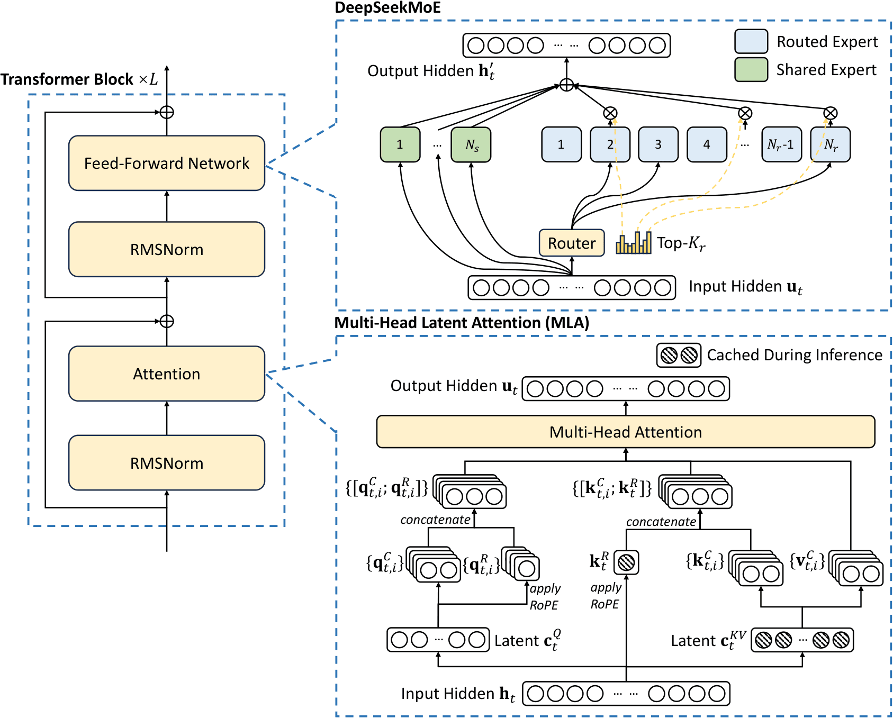
Обе находки DeepSeek в одном блоке. Внизу справа — MLA: вместо того чтобы кэшировать полные $K$ и $V$ по всем головам, модель хранит один низкоразмерный латент $\mathbf{c}^{KV}_t$ (заштрихованные ячейки — то, что реально лежит в кэше) и разворачивает из него ключи и значения на лету; отдельная ветка $\mathbf{k}^R_t$ несёт RoPE, потому что поворот не переживает сжатие. Вверху справа — DeepSeekMoE: много мелких маршрутизируемых экспертов (синие) плюс несколько общих (зелёные), которые получают каждый токен и берут на себя общие для всех знания. Работа над вниманием в DeepSeek не закончилась на MLA. Следующий шаг — NSA (Native Sparse Attention): схема, где разреженность не только применяется на инференсе, но и присутствует при обучении, а отбор ведётся блоками, удобными для GPU.
Логика развития последовательная: MLA сокращает стоимость одного токена в кэше, NSA сокращает число токенов, по которым вообще считается внимание. Подробнее — в вопросе обучаемое разреженное внимание.
DeepSeek-V3 использует 256 экспертов на слой и активирует 8 из них плюс общего (shared) эксперта, который обрабатывает все токены без маршрутизации.
Две идеи здесь:
- Мелкозернистость. Много мелких экспертов вместо нескольких крупных даёт более тонкую специализацию: число возможных комбинаций «активных наборов» растёт комбинаторно.
- Общий эксперт. Он берёт на себя знания, нужные всем токенам (базовый синтаксис, общие закономерности языка). Без него каждый специализированный эксперт вынужден дублировать эту общую часть внутри себя, тратя на неё ёмкость.
Стандартный способ бороться с перекосом маршрутизации — вспомогательный лосс балансировки (см. GLaM). У него есть неприятное свойство: он конфликтует с основной целью обучения. Модель одновременно просят и предсказывать текст, и равномерно раскладывать токены — а это разные оптимумы.
DeepSeek-V3 применяет auxiliary-loss-free балансировку: у каждого эксперта есть обучаемый сдвиг (bias), который прибавляется к его логиту при маршрутизации. Сдвиг корректируется вне градиента основного лосса: перегруженному эксперту он понижается, недогруженному — повышается.
Результат: нагрузка выравнивается, а градиент основной задачи ничем не искажается.
Третье нововведение V3, наряду с MLA и MoE, — MTP (Multi-Token Prediction): помимо основной головы, предсказывающей следующий токен, модель обучается предсказывать и токен через один.
Смысл в плотности обучающего сигнала. Обычная языковая модель на каждой позиции получает ровно одно указание — «какой токен следующий», — и этого достаточно, чтобы выучить локальные шаблоны, но мало, чтобы планировать фразу. Требование правильно назвать и второй токен заставляет представление на текущей позиции нести информацию о том, куда идёт предложение.
Бонусом обученные MTP-головы переиспользуются на инференсе как драфтер для спекулятивного декодирования — ускорение достаётся бесплатно, отдельную черновую модель обучать не надо.
DeepSeek-V3 — одна из первых больших моделей, обученных с использованием FP8 (8-битных чисел с плавающей точкой) для основных матричных умножений.
Восемь бит — это очень мало: динамический диапазон крошечный, и наивная реализация мгновенно расходится. Чтобы это заработало, применяется набор приёмов:
- Мелкозернистое квантование — свой масштабный коэффициент на маленький блок значений, а не на весь тензор.
- Накопление в повышенной точности — сами умножения в FP8, но суммирование результатов в FP32.
- Критичные компоненты остаются в высокой точности — нормализации, softmax внимания, слой предсказания.
Выигрыш примерно двукратный по скорости и памяти относительно BF16 — и именно он во многом объясняет низкую стоимость обучения.
До R1 стандартный путь к reasoning-модели был такой: собрать датасет качественных цепочек рассуждений (дорого, вручную или дистилляцией из более сильной модели), дообучить на них модель, потом добавить RL.
DeepSeek-R1-Zero показала, что первый этап можно пропустить. Модель обучали напрямую с подкреплением, где награда чисто проверяемая:
- Награда за правильность — совпал ли финальный ответ с эталонным (математика) или прошли ли тесты (код).
- Награда за формат — оформлено ли рассуждение в требуемых тегах.
Никакой модели наград, обученной на человеческих предпочтениях, — только автоматическая проверка.
Самое интересное наблюдение статьи: в процессе обучения модель самостоятельно выработала стратегии, которым её не учили:
- Длина рассуждений росла сама. Модель обнаружила, что более длинные цепочки чаще приводят к правильному ответу, и стала генерировать их без всякого явного указания.
- Самопроверка и возврат. В рассуждениях появились фразы вида «Постойте, здесь ошибка, пересчитаю» — модель научилась замечать собственные ошибки и откатываться.
- «Момент озарения» (aha moment). Авторы приводят пример, где модель посреди решения останавливается, переосмысливает задачу и меняет подход.
Всё это — следствие одной лишь награды за правильный ответ. Никаких примеров такого поведения в обучении не было.
У чистого RL-подхода есть цена: рассуждения R1-Zero плохо читаемы — модель смешивает языки, использует обрывочные конструкции, ведь награда не требовала понятности.
Поэтому финальная DeepSeek-R1 обучалась по гибридной схеме:
- Небольшой «холодный старт» — дообучение на нескольких тысячах качественных читаемых цепочек.
- RL с проверяемыми наградами (как в R1-Zero).
- Сбор данных отбором лучших генераций (rejection sampling) и повторное дообучение.
- Финальный RL уже с учётом полезности и безопасности.
Дополнительно авторы выпустили дистилляты — модели Qwen и Llama размеров 1.5B–70B, дообученные на рассуждениях R1. Вывод из этой части работы важен сам по себе: дистилляция рассуждений из сильной модели работает лучше, чем RL напрямую на маленькой модели.
Дело не только в качестве. DeepSeek-V3 и R1 вышли под свободной лицензией с подробными техническими отчётами — и показали, что фронтир-качество достижимо:
- на порядок дешевле, чем считалось (миллионы долларов, а не сотни миллионов);
- на ограниченном железе — H800 с урезанной пропускной способностью межчиповой связи, что потребовало отдельной инженерной работы по перекрытию коммуникаций вычислениями;
- с публикацией метода, а не только весов.
Это подорвало тезис о том, что фронтир доступен лишь нескольким компаниям с миллиардными бюджетами.
- «DeepSeek-V3 обучили за 5.5 млн долларов, значит любой может». Это стоимость финального прогона, без экспериментов, неудачных запусков, зарплат и амортизации кластера. Полная стоимость программы существенно выше.
- «R1 обучена без разметки вообще». R1-Zero — да, но у итоговой R1 есть этап холодного старта на размеченных цепочках. И проверяемые награды требуют задач с известным правильным ответом — то есть данных с эталонами.
- «MLA — это разновидность GQA». Нет: GQA сокращает число пар ключ/значение, MLA сжимает их в латентное пространство. Механизмы разные, и MLA не жертвует качеством.
- Считать, что RL с проверяемой наградой применим везде. Он требует автоматической проверки ответа — работает для математики и кода, не работает для эссе, перевода и стиля.
Что такое MLA и чем он лучше GQA?
Multi-head Latent Attention сжимает ключи и значения в низкоразмерный латентный вектор, который и хранится в KV-кэше, а полные $k$ и $v$ восстанавливаются проекциями при вычислении внимания. Экономия превышает 90% при качестве не хуже MHA, тогда как GQA всегда покупает экономию некоторой потерей качества.
Зачем в MoE нужен общий (shared) эксперт?
Он обрабатывает все токены без маршрутизации и берёт на себя знания, нужные всем: базовый синтаксис и общие закономерности языка. Без него каждый специализированный эксперт вынужден дублировать эту общую часть внутри себя, расходуя ёмкость впустую.
Как DeepSeek-V3 балансирует нагрузку экспертов без вспомогательного лосса?
Через обучаемый сдвиг, прибавляемый к логиту каждого эксперта при маршрутизации и корректируемый вне градиента основной задачи: перегруженному эксперту сдвиг понижается, недогруженному повышается. Так нагрузка выравнивается, не искажая градиент основной цели.
Что нужно, чтобы обучение в FP8 не разошлось?
Мелкозернистое квантование со своим масштабом на небольшой блок значений, накопление сумм в FP32 при умножениях в FP8 и сохранение критичных компонентов — нормализаций, softmax внимания, выходного слоя — в высокой точности.
Чем принципиально отличается обучение DeepSeek-R1-Zero?
Она обучена чистым RL с проверяемыми наградами — за правильность финального ответа и за соблюдение формата, — без предварительного дообучения на размеченных цепочках рассуждений и без модели наград на человеческих предпочтениях.
Какое поведение возникло у R1-Zero само собой и почему это важно?
Рост длины рассуждений, самопроверка с откатом при обнаружении ошибки и переосмысление подхода посреди решения. Ничего этого не было в обучающих примерах — поведение возникло из одной лишь награды за правильный ответ, что показывает: сложные стратегии рассуждения могут быть выучены, а не заданы.
-
GLM (Zhipu AI)
GLM (General Language Model, Zhipu AI / Tsinghua KEG) — семейство моделей, начавшееся с оригинальной архитектуры автогрессивного заполнения пропусков (autoregressive blank infilling) и выросшее в линейку GLM-4.x — одну из сильнейших открытых серий китайской разработки, особенно в задачах работы с инструментами и агентных сценариях.
Историческая веха линейки — ChatGLM-6B (март 2023): двуязычная (китайский/английский) чат-модель, помещавшаяся в потребительскую видеокарту. Она стала для китайского сообщества тем же, чем Llama для западного.
Классические подходы к предобучению делятся на два лагеря:
- Автоэнкодерный (BERT): маскируем токены, восстанавливаем их, видя контекст с обеих сторон. Хорошо для понимания, не умеет генерировать.
- Авторегрессионный (GPT): предсказываем следующий токен слева направо. Хорошо генерирует, но видит только левый контекст.
GLM объединяет оба: из текста вырезаются целые фрагменты (спаны) переменной длины, и модель должна авторегрессионно сгенерировать каждый вырезанный фрагмент, видя при этом весь оставшийся текст с обеих сторон.
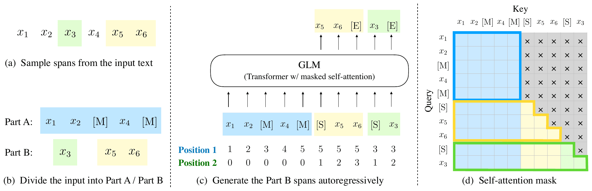
(a) Из текста вырезают несколько спанов. (b) Вход делится на часть A — текст с заглушками [M]— и часть B, сами вырезанные спаны. (c) Спаны выстраиваются в случайном порядке (здесь $x_5x_6$ раньше $x_3$), каждый со своим маркером начала[S], и модель достраивает их авторегрессивно, токен за токеном. (d) Ключ ко всему — маска внимания: часть A видит себя полностью в обе стороны (синий блок), а токены части B видят часть A и только уже сгенерированную часть себя (лесенка). Одна модель одновременно работает как двунаправленный энкодер и как декодер.Исходный текст:
Кот сидит на тёплом подоконнике и смотрит в окно.Вырезаем два фрагмента:
на тёпломив окно.- Вход (часть A):
Кот сидит [M] подоконнике и смотрит [M] - Цель (часть B): сгенерировать
на тёплом, затемв окно— каждый фрагмент по токену слева направо.
Внимание устроено так: токены части A видят друг друга двунаправленно (как в BERT), а токены генерируемых фрагментов видят всю часть A и предшествующие токены своего фрагмента (как в GPT).
Дополнительный приём — перемешивание порядка генерации фрагментов: модель учится восстанавливать их в разном порядке, что заставляет её моделировать зависимости между пропусками, а не только «слева направо».
Одна модель получает оба навыка сразу: понимание с двусторонним контекстом и генерацию. Практически это значит, что её можно применять и как энкодер (классификация, извлечение), и как генератор — без отдельной архитектуры под каждую задачу.
Кроме того, варьируя длину вырезаемых фрагментов, можно управлять тем, чему учится модель:
- Короткие спаны (несколько токенов) — задача, близкая к MLM: понимание.
- Длинные спаны (до большей части текста) — задача, близкая к генерации документа.
Смешивая длины в одном обучении, получаем модель, одинаково пригодную для обеих групп задач.
Версия Дата Ключевое GLM-130B 08.2022 130 млрд параметров, двуязычная, обучена на кластере с ограничениями ChatGLM-6B 03.2023 чат-модель для потребительской видеокарты, огромная популярность в Китае GLM-4 2024 контекст 128k–1M, сильные agentic-способности, ветка GLM-4V для зрения GLM-4.x 2024–2025 открытые веса ряда размеров, акцент на вызове инструментов и коде Поздние версии линейки (GLM-4.5/4.6 и далее) продолжают курс на агентные сценарии и работу с инструментами; конкретные конфигурации меняются часто, их стоит сверять с актуальными карточками моделей.
Линейка GLM целенаправленно оптимизировалась под вызов инструментов (function calling) и многошаговые агентные сценарии — то есть под ситуацию, когда модель не просто отвечает текстом, а планирует последовательность вызовов внешних функций, читает их результаты и продолжает.
Это отдельный навык, который не появляется сам собой из предобучения на тексте: нужны специальные обучающие данные с трассами вызовов, обучение строгому формату аргументов и умение восстанавливаться после ошибки инструмента. Подробнее — в разделе про агентов.
Практическое следствие: при выборе модели под агентный пайплайн общий рейтинг MMLU почти ничего не говорит — смотреть надо на специализированные бенчмарки вызова инструментов.
- «GLM — это просто китайский аналог Llama». Архитектурно оригинальная линейка началась с другой схемы предобучения (blank infilling), а поздние версии сильно отличаются профилем способностей: агентные сценарии и инструменты.
- Оценивать агентную модель по общим бенчмаркам знаний. Вызов инструментов и следование формату — отдельный навык, измеряемый отдельными наборами.
- Не проверить лицензию. У разных версий линейки условия различаются; часть моделей выпускалась под собственными лицензиями с ограничениями.
В чём состоит оригинальная идея архитектуры GLM?
В автогрессивном заполнении пропусков: из текста вырезаются целые фрагменты переменной длины, и модель генерирует каждый из них по токену слева направо, видя при этом весь оставшийся текст с обеих сторон. Это объединяет двунаправленное понимание BERT и генеративность GPT.
Как устроено внимание в такой схеме?
Токены неповреждённой части видят друг друга двунаправленно, а токены генерируемого фрагмента видят всю эту часть и предшествующие токены своего фрагмента. То есть в одной модели сосуществуют двунаправленная и каузальная маски.
Зачем перемешивать порядок генерации вырезанных фрагментов?
Чтобы модель училась моделировать зависимости между пропусками в обе стороны, а не только слева направо. Иначе она выучила бы лишь привычный авторегрессионный порядок.
Как длина вырезаемых спанов влияет на то, чему учится модель?
Короткие спаны дают задачу, близкую к маскированному языковому моделированию, то есть тренируют понимание. Длинные приближают задачу к генерации документа. Смешивание длин в одном обучении даёт модель, пригодную для обеих групп задач.
Почему GLM выделяется в агентных сценариях?
Потому что линейка целенаправленно дообучалась на вызов инструментов: трассы вызовов, строгий формат аргументов, восстановление после ошибок инструмента. Из предобучения на обычном тексте этот навык сам не возникает.
Почему при выборе модели для агентного пайплайна нельзя ориентироваться на MMLU?
Потому что MMLU измеряет знания, а не способность корректно спланировать последовательность вызовов, соблюсти схему аргументов и обработать результат. Для этого существуют отдельные бенчмарки вызова инструментов и агентных трасс.
-
Kimi (Moonshot AI)
Kimi (Moonshot AI) — семейство моделей, известное двумя вещами: очень длинным контекстом (ассистент Kimi Chat одним из первых предложил обработку сотен тысяч и затем миллионов символов) и линейкой открытых MoE-моделей Kimi K2, ориентированных на агентные сценарии и работу с инструментами.
Отдельно стоит упомянуть оптимизатор Muon, который Moonshot применила для обучения больших моделей вместо привычного AdamW.
Muon (MomentUm Orthogonalized by Newton-Schulz) — оптимизатор, работающий с матрицами весов как с матрицами, а не как с плоскими векторами параметров.
Идея: взять обычный момент градиента, а затем ортогонализовать его — заменить матрицу обновления на ближайшую матрицу с единичными сингулярными числами. Практически это делается итерациями Ньютона—Шульца, без явного разложения SVD, что дёшево.
Интуиция: у обычного градиента одни направления могут быть на порядки «сильнее» других, и шаг оптимизации фактически двигает веса лишь вдоль нескольких доминирующих направлений. Ортогонализация уравнивает вклад направлений, и обновление становится более информативным.
Заявленный эффект — примерно вдвое лучшая эффективность по вычислениям: та же величина лосса достигается за существенно меньшее число FLOPs, чем с AdamW.
Есть и практическая сложность: наивный Muon на очень больших моделях нестабилен, потому что нормы весов и логитов внимания начинают неконтролируемо расти. Moonshot описала вариант Muon Clip с ограничением роста логитов (по духу близкий к QK-norm), который позволил обучать модель на триллионы токенов без единого срыва лосса — редкое достижение для такого масштаба.
Важно понимать, где применим приём: Muon работает с матричными параметрами (веса линейных слоёв), а для эмбеддингов, нормализаций и одномерных параметров по-прежнему используется AdamW.
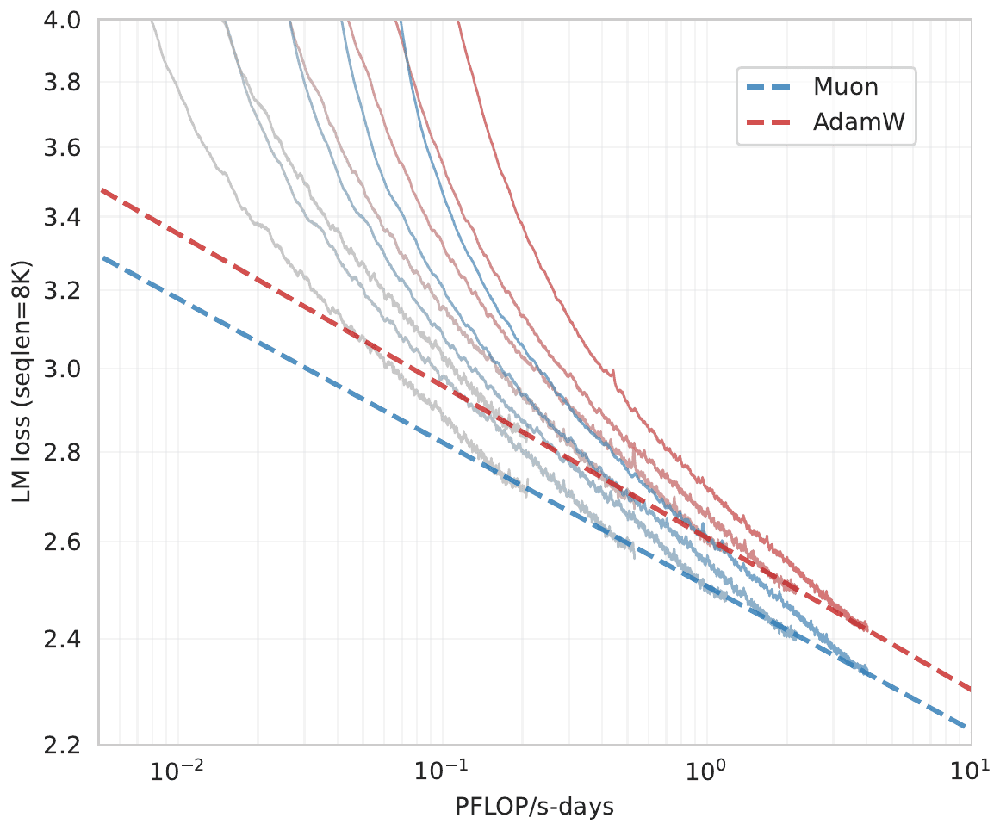
По горизонтали — потраченные вычисления, шкала логарифмическая; по вертикали — лосс языковой модели, шкала обычная. Пунктирные прямые — компьютно-оптимальные фронты для каждого оптимизатора. Muon даёт тот же лосс примерно за вдвое меньший бюджет, и это не разовый выигрыш на одном размере: расстояние между прямыми держится на двух порядках вычислений. Именно такая устойчивость и позволила Moonshot решиться обучать на Muon полноразмерную модель — обычно новые оптимизаторы ломаются при переходе к большим масштабам. Представьте, что градиент по матрице весов после SVD имеет сингулярные числа $(10,\ 0.1,\ 0.05)$. Обычный шаг оптимизации сдвинет веса почти исключительно вдоль первого направления: два других вклада в 100–200 раз слабее и практически не проявятся.
Ортогонализация заменяет эти числа на $(1,\ 1,\ 1)$, сохраняя сами направления. Шаг становится «равномерным»: все три направления получают сопоставимый вклад, и модель за одно обновление продвигается сразу по нескольким осям, а не топчется вдоль доминирующей.
Отсюда и выигрыш по эффективности: то же число шагов переносит больше информации из градиента в веса.
Kimi K2 — открытая MoE-модель на около триллиона общих параметров при порядка 32 млрд активных, обученная на масштабе порядка 15 трлн токенов. Позиционируется не как чат-модель, а как агентная: её обучали планировать, вызывать инструменты и выполнять многошаговые задачи.
Ключевой элемент такого обучения — синтетические агентные трассы: генерируются сценарии с наборами инструментов, модель выполняет задачи в симулированной среде, а результаты фильтруются по успешности. Так формируется корпус, которого в естественном вебе просто не существует: люди не пишут в интернете пошаговые логи вызовов API.
Последующие выпуски линейки (K2.x) развивают то же направление — агентность, длинный контекст и работу с инструментами; конкретные конфигурации стоит сверять с актуальной документацией.
Заявить контекст в миллион токенов легко (достаточно настроить позиционное кодирование), а вот пользоваться им моделям тяжело. Типичные проблемы:
- «Потеря середины» (lost in the middle). Модели заметно хуже находят информацию, расположенную в середине длинного контекста, чем в начале или в конце.
- Стоимость. Внимание квадратично: 1 млн токенов на входе — это огромные вычисления и колоссальный KV-кэш.
- Разрыв между «видит» и «использует». Модель может формально принять миллион токенов и при этом не суметь связать два факта, разнесённых на сотни тысяч позиций.
Поэтому длинный контекст требует одновременно архитектурных решений (эффективное внимание, сжатие KV-кэша) и обучения на длинных примерах с задачами, которые нельзя решить без дальних связей.
Стандартный тест — «иголка в стоге сена» (needle in a haystack): в длинный текст вставляют одно предложение с фактом и просят его найти. Модели проходят его давно и почти идеально, поэтому сам по себе он уже мало что говорит.
Более честные проверки:
- Несколько иголок. Спрятать 5–10 фактов и попросить собрать их вместе — здесь модели ломаются заметно раньше.
- Многошаговый вывод по контексту. Факты разнесены на сотни тысяч токенов, и ответ требует их связать (например, «кто из упомянутых в главе 3 участвовал в событии из главы 47»).
- Задачи на отсутствие. Спросить о том, чего в тексте нет: модель с плохим доступом к контексту начнёт выдумывать.
- «Контекст 1M токенов заменяет RAG». Нет: подать миллион токенов дорого и медленно, а качество поиска внутри контекста уступает нормальному поиску по индексу. Длинный контекст и RAG решают разные задачи и часто используются вместе.
- «Muon универсально лучше AdamW». Это оптимизатор для матричных параметров, требующий отдельной стабилизации на больших масштабах; эмбеддинги и нормализации по-прежнему обучают AdamW.
- Оценивать длинный контекст только тестом «иголка в стоге сена». Он проверяет извлечение одного факта, но не проверяет способность связать несколько фактов, разнесённых по контексту, — а именно это нужно на практике.
Чем известно семейство Kimi?
Очень длинным контекстом в ассистенте Kimi Chat и линейкой открытых MoE-моделей K2, ориентированных на агентные сценарии и работу с инструментами, а также применением оптимизатора Muon вместо AdamW при обучении больших моделей.
Как устроен оптимизатор Muon?
Он берёт момент градиента и ортогонализует матрицу обновления итерациями Ньютона—Шульца, приводя её сингулярные числа к единице. Это уравнивает вклад разных направлений, вместо того чтобы двигать веса преимущественно вдоль нескольких доминирующих.
Какие ограничения есть у Muon?
Он применим к матричным параметрам — весам линейных слоёв, тогда как эмбеддинги, нормализации и одномерные параметры обучаются AdamW. Кроме того, на больших масштабах наивная версия нестабильна из-за роста норм весов и логитов внимания и требует дополнительного ограничения.
Откуда берутся данные для обучения агентной модели?
Из синтетических трасс: генерируются сценарии с наборами инструментов, модель выполняет задачи в симулированной среде, а результаты фильтруются по успешности. В естественном вебе таких данных нет — люди не публикуют пошаговые логи вызовов API.
Почему заявленный длинный контекст не означает, что модель им пользуется?
Из-за эффекта потери середины (информация в середине контекста находится хуже, чем в начале и в конце), квадратичной стоимости внимания и разрыва между способностью принять текст и способностью связать далеко разнесённые факты. Нужны и архитектурные решения, и обучение на длинных задачах.
Заменяет ли длинный контекст RAG?
Нет. Подача миллиона токенов дорога и медленна, а качество поиска внутри контекста уступает поиску по индексу. Обычно длинный контекст и RAG сочетают: поиск отбирает релевантное, а длинное окно позволяет подать больше отобранного материала.
-
Pixtral (2024): как LLM учат смотреть
Pixtral 12B (Mistral AI, сентябрь 2024) — открытая мультимодальная модель под Apache 2.0: языковая часть на 12 млрд параметров (на основе Mistral Nemo) плюс собственный визуальный энкодер на 400 млн параметров.
Главная особенность — работа с изображениями в исходном разрешении и с исходным соотношением сторон, без обязательного приведения всех картинок к одному квадратному размеру. Это делает Pixtral удобным примером, на котором разбирается вся схема «как языковую модель учат видеть».
Практически все современные vision-language модели строятся по одной схеме из трёх частей:
- Визуальный энкодер — обычно ViT: разбивает изображение на патчи и превращает их в последовательность векторов.
- Проектор (адаптер) — небольшая сеть, переводящая визуальные векторы в то же пространство, в котором живут текстовые эмбеддинги языковой модели.
- Языковая модель — обычный декодер, который получает на вход смешанную последовательность: часть токенов пришла из текста, часть — из картинки, и дальше он не различает их природу.
Ключевая мысль: изображение превращается в «слова» на внутреннем языке модели, после чего работает обычный трансформер.
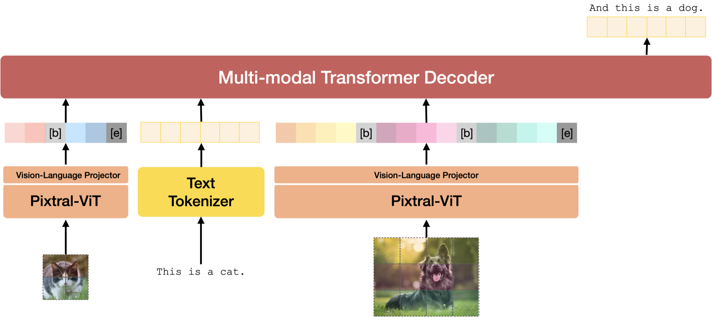
Три обязательных части любой мультимодальной LLM. Слева и справа: картинка режется на патчи и проходит через vision-энкодер (Pixtral-ViT), затем проектор переводит визуальные векторы в то же пространство, где живут текстовые эмбеддинги. В центре текст идёт через обычный токенизатор. Дальше обе последовательности просто склеиваются в один поток токенов, и декодер не различает, откуда пришёл каждый токен. Обратите внимание на маркеры [b]и[e]— они размечают границы строк и конец картинки, поэтому модель знает исходную геометрию изображения.Пусть изображение 1024 $\times$ 1024, размер патча 16 $\times$ 16.
$$\frac{1024}{16} \times \frac{1024}{16} = 64 \times 64 = 4096 \ \text{патчей}$$
То есть одна картинка занимает 4096 позиций контекста — как приличная статья. Отсюда практические следствия:
- Диалог с несколькими изображениями быстро съедает контекстное окно.
- Инференс с картинками заметно дороже текстового.
- Многие модели применяют сжатие: объединяют соседние патчи (pixel shuffle) или пропускают визуальные токены через слой перекрёстного внимания с фиксированным числом выходов (resampler), сокращая 4096 патчей до нескольких сотен токенов.
Стандартный подход раннего поколения VLM — привести любое изображение к фиксированному размеру, например 336 $\times$ 336. Для фотографии кошки это нормально. Для двух других классов задач — катастрофа:
- Документы и скриншоты. Страница A4, сжатая до 336 пикселей по ширине, теряет читаемость текста: OCR по такой картинке невозможен.
- Широкие или узкие изображения. Панорама, сжатая в квадрат, искажает пропорции объектов; график с длинной осью превращается в нечитаемую полосу.
Pixtral обрабатывает изображение как есть, разбивая на патчи по фактическому размеру, и вставляет специальные токены-разделители конца строки патчей — чтобы языковая модель понимала двумерную структуру, получая одномерную последовательность.
Обучение обычно идёт в два-три этапа:
- Выравнивание (alignment). Языковая модель и визуальный энкодер заморожены, обучается только проектор — на парах «изображение — подпись». Задача этапа: научить проектор класть визуальные векторы туда же, где живут соответствующие текстовые понятия.
- Совместное дообучение. Размораживается языковая модель (иногда и энкодер), обучение идёт на смеси задач: описание изображений, вопросы по картинке, чтение документов, разбор графиков.
- Instruction tuning на мультимодальных диалогах.
Важная деталь: на этих этапах в смесь обязательно добавляют чисто текстовые данные. Без них модель «забывает» язык — качество на текстовых задачах заметно падает, что является частным случаем катастрофического забывания.
Полезно понимать границы, чтобы не строить на них продукт:
- Точный подсчёт объектов. «Сколько здесь людей?» — при десятке и более модели систематически ошибаются.
- Точная геометрия и координаты. Определить точное положение объекта в пикселях модель может лишь приблизительно, если её этому специально не обучали.
- Мелкий текст. Даже при сохранении разрешения OCR мелкого шрифта уступает специализированным OCR-системам.
- Пространственные отношения в сложных сценах. «Что находится слева от третьего предмета сверху» — типичный источник ошибок.
Практический вывод: для задач, где нужна метрическая точность (детекция, сегментация, OCR документов промышленного качества), специализированные CV-модели по-прежнему точнее и дешевле.
Pixtral и модели того же поколения устроены как «языковая модель + приделанный энкодер»: сначала обучили текстовую часть, потом добавили зрение.
Более поздние модели (Gemini, Llama 4, поздние Qwen-VL) идут дальше и обучаются мультимодально с самого начала: изображения, а иногда аудио и видео, присутствуют в предобучении наравне с текстом. Это даёт более глубокую интеграцию модальностей — модель не «переводит картинку в слова», а изначально оперирует общим представлением.
Плата — сложность и стоимость: мультимодальное предобучение требует на порядки больше данных и вычислений, чем дообучение проектора поверх готовой языковой модели.
- «Мультимодальная модель = LLM + OCR». Нет: модель не распознаёт текст отдельным модулем, а обрабатывает изображение целиком. Поэтому она понимает схемы и графики, но проигрывает специализированному OCR на мелком шрифте.
- Забыть про стоимость визуальных токенов. Одна картинка может занимать тысячи позиций контекста — это надо закладывать в расчёт бюджета.
- Дообучать VLM только на мультимодальных данных. Без текстовой части в смеси языковые способности деградируют.
- Ожидать точных координат и подсчётов. Это известное слабое место; для таких задач нужны специализированные модели детекции.
Из каких трёх частей состоит типичная мультимодальная модель?
Визуальный энкодер (обычно ViT), превращающий изображение в последовательность векторов; проектор, переводящий эти векторы в пространство текстовых эмбеддингов; и языковая модель-декодер, работающая со смешанной последовательностью визуальных и текстовых токенов.
Сколько токенов занимает изображение и почему это важно?
Изображение 1024 $\times$ 1024 при патче 16 $\times$ 16 даёт 4096 патчей, то есть 4096 позиций контекста. Это делает мультимодальный инференс существенно дороже текстового и быстро исчерпывает контекстное окно, поэтому применяют сжатие визуальных токенов.
Почему важно сохранять исходное разрешение и соотношение сторон?
Потому что приведение к фиксированному квадрату уничтожает читаемость текста в документах и скриншотах и искажает пропорции широких или узких изображений. Для фотографий это несущественно, для документов и графиков — критично.
Как обучают мультимодальную модель?
Сначала на парах «изображение — подпись» обучают только проектор при замороженных энкодере и языковой модели, затем размораживают языковую часть и дообучают на смеси мультимодальных задач, после чего проводят instruction tuning на диалогах.
Зачем в мультимодальное дообучение добавляют чисто текстовые данные?
Чтобы предотвратить катастрофическое забывание: без текстовой части в обучающей смеси языковые способности модели заметно деградируют.
Каких задач стоит избегать при использовании VLM?
Точного подсчёта большого числа объектов, определения точных координат, OCR мелкого шрифта промышленного качества и разбора сложных пространственных отношений. Для метрически точных задач специализированные CV-модели точнее и дешевле.
-
Claude (Anthropic) и Constitutional AI
Claude (Anthropic) — семейство закрытых фронтир-моделей, доступных через API. Линейка построена по трёхуровневой схеме с говорящими названиями:
- Haiku — самая быстрая и дешёвая, для задач большого объёма с простой логикой: классификация, извлечение полей, модерация.
- Sonnet — сбалансированная: основная рабочая модель для разработки, анализа и агентных сценариев.
- Opus — самая мощная, для сложного многошагового рассуждения и длительных агентных задач.
Внутри каждого уровня выходят поколения (Claude 3 $\to$ 3.5 $\to$ 4 $\to$ 4.5 $\to$ 5 и далее). Ключевая техническая идея, которой известна Anthropic, — Constitutional AI: выравнивание модели по явному письменному своду принципов вместо непрозрачной человеческой разметки.
Стандартный RLHF устроен так: людям показывают пары ответов, они выбирают лучший, на этих предпочтениях обучается модель наград, по ней — политика. Проблемы такого подхода:
- Дорого и медленно. Каждое предпочтение — работа человека.
- Непрозрачно. Что именно выучила модель наград, сказать нельзя: правила существуют лишь неявно, в головах разметчиков и в инструкции к разметке.
- Тяжело для людей. Разметка вредоносного контента — психологически трудная работа.
- Плохо масштабируется на сложные случаи. Чем сложнее ответ, тем труднее человеку надёжно сравнить два варианта.
Constitutional AI заменяет часть человеческой обратной связи на обратную связь модели, руководствующейся явно записанным набором принципов — «конституцией».
Схема состоит из двух фаз.
Фаза 1 — самокритика и переписывание (supervised).
- Модели задают потенциально проблемный вопрос, она отвечает.
- Модель просят раскритиковать собственный ответ с точки зрения конкретного принципа конституции.
- Модель просят переписать ответ с учётом критики.
- Исходную модель дообучают на переписанных, улучшенных ответах.
Фаза 2 — RLAIF (RL from AI Feedback).
- Генерируются пары ответов на один запрос.
- Модель выбирает лучший из пары, руководствуясь принципом из конституции.
- На этих предпочтениях обучается модель наград.
- Политика оптимизируется по этой модели наград обычным RL.
Человек участвует один раз — при написании самой конституции. Дальше масштабирование идёт машинным способом.
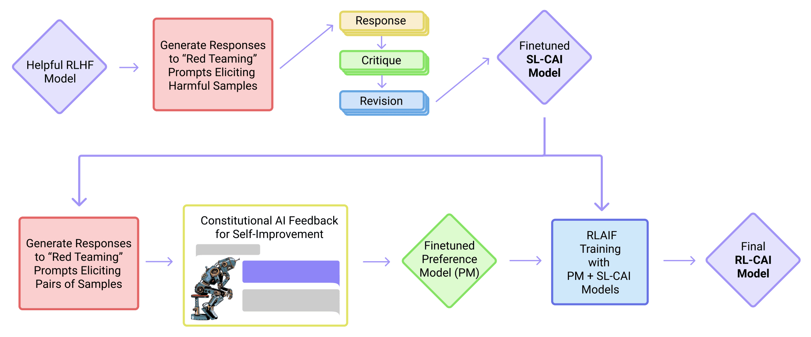
Обе фазы на одной схеме. Верхний ряд — supervised-фаза: модель отвечает на провокационный запрос, сама себя критикует по принципу конституции, переписывает ответ, и на переписанных ответах дообучается (SL-CAI). Нижний ряд — RLAIF: SL-CAI генерирует пары ответов, модель (а не человек) выбирает лучший по принципу конституции, на этих предпочтениях учится модель наград, и по ней обычным RL оптимизируется политика. Человек участвует только один раз — когда пишет саму конституцию. Принципы формулируются как понятные инструкции для сравнения, например:
«Выбери ответ, который менее вреден, но при этом не уклоняется от вопроса и не читает морали».
«Выбери ответ, который честно признаёт неуверенность, а не выдаёт правдоподобную выдумку».
Заметьте, что принципы могут конфликтовать между собой — «быть максимально полезным» против «не помогать в опасном». Это не дефект: реальные требования к ассистенту действительно конфликтуют, и явная запись конфликтов позволяет обсуждать и настраивать баланс, а не прятать его в разметке.
Самая ценная часть подхода — не экономия на разметчиках, а проверяемость. Свод принципов опубликован, его можно прочитать, обсудить, оспорить и изменить.
Сравните с обычным RLHF: если модель отказывается отвечать на безобидный вопрос, понять почему невозможно — это где-то в весах модели наград. С конституцией можно указать на конкретный принцип и его формулировку.
Это же даёт и практический рычаг: изменение поведения модели становится редактированием текста, а не пересбором датасета предпочтений.
Помимо выравнивания, семейство Claude известно рядом продуктовых и технических черт:
- Extended thinking — режим, в котором модель тратит дополнительные токены на внутреннее рассуждение перед ответом; бюджет рассуждения задаётся явно.
- Работа с компьютером (computer use) — модель управляет интерфейсом: делает скриншоты, двигает курсор, печатает. Это шаг от «ассистента в чате» к агенту, работающему в среде.
- MCP (Model Context Protocol) — открытый протокол подключения моделей к внешним источникам данных и инструментам, предложенный Anthropic и подхваченный индустрией. Подробнее — в разделе про агентов.
- Длинный контекст — сотни тысяч токенов, с акцентом на работу с большими кодовыми базами и документами.
Claude, как и GPT-4/5 и Gemini, — закрытая модель: число параметров, архитектура и состав данных не публикуются. Практические следствия, о которых стоит помнить при проектировании системы:
- Невоспроизводимость. Результаты в статьях, полученные через API, нельзя точно повторить: модель за тем же именем может обновиться.
- Версионирование обязательно. В продакшене всегда фиксируйте конкретную версию модели в API-вызове; иначе поведение системы изменится без вашего участия.
- Зависимость от поставщика. Промпты, дообученные адаптеры и обвязка привязаны к конкретному API.
- Оценка только эмпирическая. Судить о модели можно лишь по её поведению на ваших задачах, а не по архитектуре.
- «RLAIF полностью убирает человека из процесса». Нет: человек пишет конституцию, определяет принципы и оценивает результат. Убирается массовая ручная разметка, а не человеческое решение.
- «Constitutional AI гарантирует безопасность». Это метод выравнивания, а не гарантия: модели по-прежнему подвержены джейлбрейкам и ошибкам.
- Не фиксировать версию модели в продакшене. Плавающая версия — типичный источник «внезапно всё сломалось» без единого изменения в коде.
- Считать, что дороже — всегда лучше. Для классификации и извлечения данных младшая модель обычно даёт то же качество в разы дешевле; старшая нужна там, где требуется длинное рассуждение.
Как устроена линейка Claude по уровням?
Тремя уровнями: Haiku — самая быстрая и дешёвая для массовых простых задач, Sonnet — сбалансированная рабочая модель, Opus — самая мощная для сложного многошагового рассуждения. Внутри каждого уровня последовательно выходят поколения моделей.
Какие проблемы обычного RLHF решает Constitutional AI?
Дороговизну и медленность человеческой разметки, её непрозрачность (правила существуют лишь неявно), психологическую нагрузку на разметчиков вредоносного контента и плохую масштабируемость на сложные ответы, которые человеку трудно надёжно сравнить.
Из каких двух фаз состоит обучение по конституции?
Первая — самокритика и переписывание: модель отвечает, критикует свой ответ по конкретному принципу, переписывает его, и на улучшенных ответах идёт дообучение. Вторая — RLAIF: модель сама выбирает лучший ответ из пары по принципу конституции, на этих предпочтениях обучается модель наград, и по ней оптимизируется политика.
В чём главное преимущество конституции перед неявной разметкой?
В проверяемости: свод принципов записан и опубликован, его можно прочитать, оспорить и изменить, а поведение модели связать с конкретной формулировкой. При обычном RLHF причина отказа или ответа скрыта в весах модели наград.
Почему принципы конституции могут конфликтовать друг с другом?
Потому что реальные требования к ассистенту конфликтны: быть максимально полезным и при этом не помогать во вредоносном. Явная запись конфликта позволяет обсуждать и настраивать баланс вместо того, чтобы прятать его в инструкциях разметчикам.
Какие практические предосторожности нужны при работе с закрытыми моделями?
Фиксировать конкретную версию модели в API-вызовах, чтобы поведение не менялось без вашего участия; закладывать зависимость от поставщика в архитектуру; оценивать модель эмпирически на своих задачах и не рассчитывать на воспроизводимость результатов, полученных через API.
-
Gemini (Google)
Gemini (Google DeepMind, с декабря 2023) — семейство закрытых фронтир-моделей, пришедшее на смену PaLM 2. Две отличительные черты линейки:
- Изначальная мультимодальность. Модель обучалась на тексте, изображениях, аудио и видео с самого начала, а не получила зрение дообучением поверх готовой языковой модели.
- Очень длинный контекст. Начиная с Gemini 1.5 — миллион токенов и более, что позволяет подавать целые кодовые базы, длинные видео или сотни документов за один запрос.
Линейка выпускается уровнями: Nano (на устройстве), Flash (быстрая и дешёвая), Pro (основная), Ultra (максимальная), с последовательной сменой поколений (1.0 $\to$ 1.5 $\to$ 2.x $\to$ 3.x и далее).
Разберём разницу с обычным подходом, потому что она содержательная.
Обычный путь (Pixtral, LLaVA и другие): берут готовую языковую модель, приделывают визуальный энкодер, обучают проектор переводить картинки в пространство текстовых эмбеддингов. Модель фактически «переводит» изображение в слова, а дальше рассуждает текстом.
Путь Gemini: все модальности присутствуют в предобучении с первого шага. Модель не переводит картинку в текст — она изначально строит общее представление, в котором визуальные и языковые понятия живут вместе.
Практическая разница проявляется в задачах, где модальности переплетены: разобрать диаграмму и связать её с текстом статьи, понять, что происходит в видео с речью, соотнести график с числами в таблице. Здесь «переводной» подход теряет информацию на границе модальностей.
Gemini 1.5 Pro — MoE-модель (число экспертов и активных параметров не раскрыто) с контекстом до 1 млн токенов, а в исследовательских конфигурациях — до 10 млн.
Наиболее убедительная демонстрация возможностей: модели подали грамматику каламангского языка (язык, у которого осталось менее двух сотен носителей и который практически отсутствует в интернете) — учебник, словарь и небольшой набор параллельных предложений, — и она научилась переводить на него на уровне человека, изучавшего язык по тем же материалам.
Это ключевой аргумент в пользу длинного контекста: он позволяет «обучать» модель прямо в промпте, без дообучения весов, если нужный материал помещается в окно.
Ориентиры для интуиции:
- 1 млн токенов ≈ 700 тыс. слов ≈ 8 романов среднего объёма, или примерно час видео, или кодовая база среднего проекта целиком.
- Можно подать весь репозиторий и спросить, где именно реализована конкретная логика, — без построения индекса и RAG-пайплайна.
- Можно подать длинный видеофайл и спросить, в какой момент произошло определённое событие.
Ограничения тоже надо держать в голове: стоимость растёт с длиной входа, задержка первого токена на миллионе токенов измеряется десятками секунд, а качество поиска внутри контекста уступает нормальному поисковому индексу на больших корпусах.
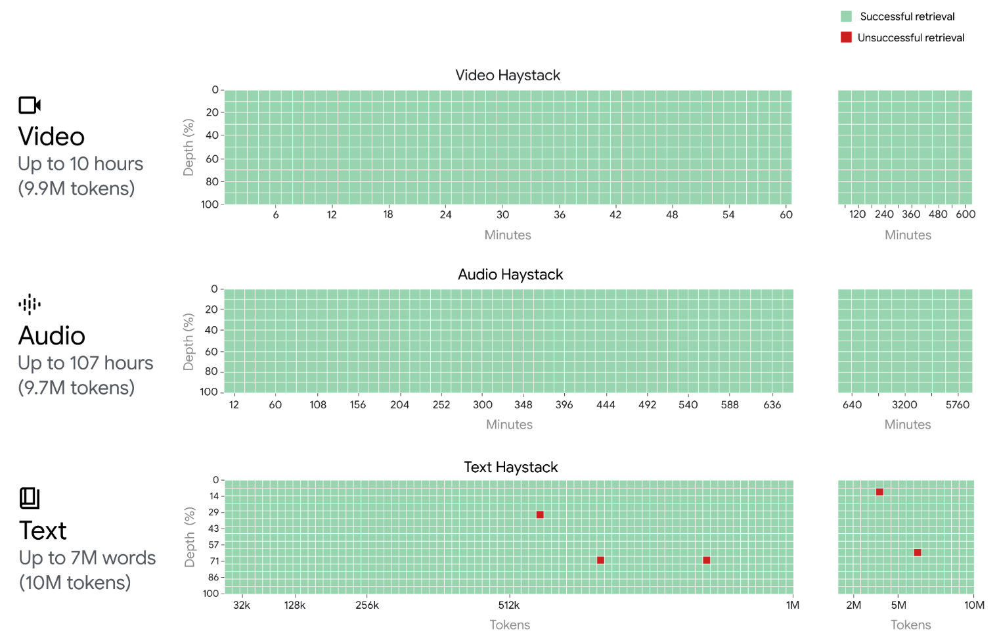
Тест «иголка в стоге сена»: в длинный материал прячут один факт и просят его найти. По горизонтали — длина контекста, по вертикали — на какой глубине спрятана иголка; зелёная клетка означает успешный поиск, красная — провал. Существенны две вещи. Первая: поле остаётся почти сплошь зелёным до 10 млн токенов — окно действительно работает, а не просто заявлено; единичные красные клетки в текстовой строке показывают, что идеальным поиск всё же не становится. Вторая: тест устроен одинаково для видео, аудио и текста — для изначально мультимодальной модели длинный контекст измеряется в часах записи так же, как в словах. - Gemini 2.x — акцент на агентных сценариях: вызов инструментов, выполнение кода, длительные многошаговые задачи, режимы с явным рассуждением.
- Интеграция в продукты Google — поиск, рабочие приложения, Android; отсюда особое внимание к дешёвым и быстрым уровням линейки (Flash) и к моделям, работающим на устройстве (Nano).
- Gemma — открытая ветка, построенная на тех же исследованиях; именно через неё технологии линейки доступны для локального запуска и дообучения.
Публичные бенчмарки для таких моделей всё менее информативны, и стоит понимать почему:
- Загрязнение. Тестовые наборы почти наверняка попадали в обучающие корпуса — интернет их содержит.
- Разные условия замера. Одна и та же модель даёт разные числа при разных промптах, числе примеров, температуре и способе агрегирования нескольких попыток. Сравнивать цифры из разных отчётов почти бессмысленно.
- Насыщение. На MMLU и подобных наборах сильные модели набирают около 90%, и различия уходят в шум и в ошибки самой разметки.
Поэтому индустрия сместилась к арене (парные сравнения вслепую с голосованием людей) и к агентным бенчмаркам с проверяемым результатом — например, решению реальных задач из репозиториев. Но и они не заменяют главного: оценки на ваших собственных данных и ваших сценариях.
- «Контекст 1M токенов делает RAG ненужным». Нет: подача миллиона токенов дорога и медленна, а на корпусах в миллиарды токенов поиск по индексу безальтернативен. Длинный контекст удобен, когда весь материал заведомо помещается в окно.
- «Gemini мультимодальна, значит заменяет CV-модели». Для метрически точных задач (детекция, сегментация, промышленный OCR) специализированные модели точнее и на порядки дешевле.
- Сравнивать модели по цифрам из разных технических отчётов. Условия замеров различаются настолько, что такие сравнения некорректны.
Что означает «изначально мультимодальная модель»?
Что изображения, аудио и видео присутствовали в предобучении наравне с текстом, а не были добавлены дообучением проектора поверх готовой языковой модели. Модель строит общее представление модальностей, а не переводит картинку в слова.
В каких задачах преимущество изначальной мультимодальности заметно?
Там, где модальности переплетены: разбор диаграммы вместе с текстом статьи, понимание видео со звуком, соотнесение графика с числами в таблице. «Переводной» подход теряет информацию на границе модальностей.
Что демонстрирует эксперимент с каламангским языком?
Что достаточно длинный контекст позволяет «обучать» модель прямо в промпте: получив учебник грамматики, словарь и небольшой набор параллельных предложений, модель научилась переводить на язык, практически отсутствующий в её обучающих данных, — без изменения весов.
Каковы практические ограничения контекста в миллион токенов?
Стоимость растёт с длиной входа, задержка до первого токена измеряется десятками секунд, а качество поиска внутри контекста уступает поисковому индексу на больших корпусах. Длинный контекст удобен, когда весь материал заведомо помещается в окно.
Почему публичные бенчмарки плохо различают фронтир-модели?
Из-за загрязнения тестовых наборов обучающими данными, несопоставимости условий замера между отчётами и насыщения: на популярных наборах сильные модели упираются в потолок, и различия уходят в шум и ошибки разметки.
Чем индустрия заменяет классические бенчмарки?
Аренами с парными слепыми сравнениями и голосованием людей, а также агентными бенчмарками с автоматически проверяемым результатом. Но и они не отменяют необходимости оценивать модель на собственных данных и сценариях.
-
SSM: модели пространства состояний
SSM (State Space Model, модель пространства состояний) — способ описать последовательность через скрытое состояние, которое обновляется на каждом шаге и хранит сжатую сводку всего, что было раньше.
В непрерывном времени это система линейных дифференциальных уравнений: $$h'(t) = A h(t) + B x(t), \qquad y(t) = C h(t) + D x(t)$$
Здесь $x(t)$ — вход, $h(t)$ — состояние размерности $N$, $y(t)$ — выход, а $A, B, C, D$ — матрицы параметров.
Если совсем простыми словами: это математическая формализация идеи «помню всё прошлое одним вектором фиксированного размера». Ровно та же идея, что у RNN, но записанная так, что её можно эффективно вычислять и обучать.
Текст — не непрерывный сигнал, а последовательность токенов. Поэтому уравнение дискретизируют с шагом $\Delta$, получая рекуррентную форму: $$h_t = \bar{A} h_{t-1} + \bar{B} x_t, \qquad y_t = C h_t$$ где $\bar{A} = \exp(\Delta A)$, а $\bar{B}$ получается по соответствующей формуле дискретизации.
Обратите внимание: шаг $\Delta$ — обучаемый параметр. Содержательно он задаёт «масштаб времени» модели: маленький $\Delta$ означает, что состояние меняется медленно и помнит долго; большой — что модель быстро реагирует на текущий вход и забывает.
Ключевое свойство SSM, объясняющее, почему они вообще практичны: одна и та же модель имеет две эквивалентные формы вычисления.
- Рекуррентная форма. Считаем $h_t$ по $h_{t-1}$ шаг за шагом. Память $O(1)$ на шаг, время $O(n)$ на всю последовательность — идеально для генерации.
- Свёрточная форма. Раскрывая рекуррентность, получаем свёртку входа с ядром $$\bar{K} = (C\bar{B},\ C\bar{A}\bar{B},\ C\bar{A}^2\bar{B},\ \dots)$$ которую можно вычислить целиком за один раз через быстрое преобразование Фурье — то есть параллельно по всей последовательности. Идеально для обучения.
Именно эта двойственность снимает главный недостаток RNN: обучаемся параллельно, как трансформер, а генерируем с постоянной памятью, как RNN.
Свойство RNN Transformer SSM Обучение последовательно параллельно параллельно Сложность обучения по длине $O(n)$ $O(n^2)$ $O(n \log n)$ Память при генерации $O(1)$ $O(n)$ (KV-кэш) $O(1)$ Стоимость одного токена $O(1)$ $O(n)$ $O(1)$ Точный доступ к любому токену нет да нет Последняя строка — принципиальная. Трансформер хранит все предыдущие токены и может обратиться к любому напрямую. SSM держит состояние фиксированного размера, поэтому информация неизбежно сжимается с потерями.
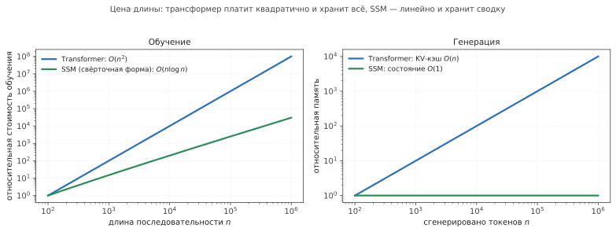
Обе оси логарифмические. При обучении трансформер платит квадратично по длине, SSM — почти линейно. При генерации трансформер хранит KV-кэш, растущий с числом токенов, а SSM обходится состоянием постоянного размера — но именно эта постоянность и означает, что история хранится со сжатием, а не дословно. Наивная рекуррентность $h_t = \bar{A}h_{t-1} + \bar{B}x_t$ страдает от той же болезни, что и обычная RNN: если собственные числа $\bar{A}$ по модулю меньше единицы, вклад давних входов затухает экспоненциально; если больше — взрывается.
HiPPO (High-order Polynomial Projection Operators) даёт специальную инициализацию матрицы $A$, при которой состояние $h_t$ оказывается коэффициентами разложения всей предыдущей истории по ортогональным полиномам (Лежандра).
Смысл: состояние хранит не «последние несколько шагов», а оптимальную аппроксимацию всей истории в фиксированном числе коэффициентов — как разложение функции в ряд, где первые члены дают общую форму, а последующие уточняют детали.
Именно HiPPO превратила SSM из теоретической конструкции в работающую модель: на бенчмарке Long Range Arena модель S4 с такой инициализацией впервые решила задачу Path-X с последовательностями длины 16 000, где все трансформеры показывали результат на уровне случайного угадывания.
Чтобы понять идею HiPPO, представьте, что вам нужно запомнить сложную кривую, имея всего 64 числа.
- Плохой способ: запомнить последние 64 точки. Всё, что раньше, потеряно полностью.
- Способ HiPPO: запомнить 64 коэффициента разложения кривой по базисным функциям. Тогда вы храните всю кривую целиком, пусть и приближённо: общая форма восстанавливается точно, мелкие детали — с потерями.
Второй способ и реализует SSM с правильной матрицей $A$: состояние — это сжатое представление всей истории, а не окно последних шагов.
У классических SSM (S4 и родственные) матрицы $A, B, C$ — константы: они одинаковы для всех входов и всех позиций.
Это делает модель линейной инвариантной во времени (LTI-системой) и даёт возможность вычислять её свёрткой. Но у этого есть цена: модель не может выбирать, что запомнить, а что забыть, в зависимости от содержания входа.
Конкретная задача, на которой это видно, — селективное копирование: во входной последовательности разбросаны несколько важных токенов среди мусора, и нужно воспроизвести только важные. Трансформер решает её тривиально через внимание. Линейный SSM — нет: у него нет механизма, который посмотрел бы на токен и решил «этот запоминаем, этот игнорируем».
Именно эту проблему решает Mamba, сделав параметры зависящими от входа.
- «SSM — это просто RNN». Математически родственны, но у SSM есть параллельная свёрточная форма для обучения и структурированная инициализация $A$, чего у обычных RNN нет. Именно это делает их обучаемыми на длинных последовательностях.
- «Постоянная память означает бесконечный контекст». Наоборот: состояние фиксированного размера — это ограниченная ёмкость. Информация сжимается с потерями, и точное извлечение конкретного далёкого токена не гарантировано.
- Недооценивать роль инициализации. Со случайной матрицей $A$ модель не работает. HiPPO — не деталь, а необходимое условие.
Что такое модель пространства состояний?
Описание последовательности через скрытое состояние фиксированного размера, обновляемое на каждом шаге: $h_t = \bar A h_{t-1} + \bar B x_t$, $y_t = C h_t$. Состояние хранит сжатую сводку всей предыдущей истории.
Что такое двойственность рекуррентной и свёрточной форм и зачем она нужна?
Одна и та же SSM вычисляется либо рекуррентно, шаг за шагом с постоянной памятью, либо как свёртка входа с раскрытым ядром — параллельно по всей последовательности через быстрое преобразование Фурье. Первая форма удобна для генерации, вторая для обучения, и вместе они снимают главный недостаток RNN.
Какой смысл у обучаемого шага дискретизации $\Delta$?
Он задаёт масштаб времени модели: малый $\Delta$ означает медленно меняющееся состояние и долгую память, большой — быструю реакцию на текущий вход и быстрое забывание.
Что такое HiPPO и какую проблему она решает?
Специальная инициализация матрицы $A$, при которой состояние оказывается коэффициентами разложения всей предыдущей истории по ортогональным полиномам. Она решает проблему экспоненциального затухания или взрыва вклада давних входов и превращает SSM в практически работающую модель.
В чём принципиальное ограничение SSM по сравнению с трансформером?
Состояние имеет фиксированный размер, поэтому история сжимается с потерями и точный доступ к произвольному давнему токену не гарантирован. Трансформер хранит все токены в KV-кэше и может обратиться к любому напрямую — ценой линейного роста памяти и квадратичной сложности.
Почему линейные SSM плохо решают задачу селективного копирования?
Потому что их матрицы постоянны и не зависят от входа: модель не может, посмотрев на токен, решить, запоминать его или игнорировать. Механизма избирательного внимания к содержанию у неё нет — именно это и добавляет Mamba.
-
Mamba (2023)
Mamba (Gu & Dao, декабрь 2023) — архитектура на основе SSM, которая впервые вышла на уровень трансформера в языковом моделировании при линейной сложности по длине последовательности.
Ключевое нововведение — селективность: параметры модели пространства состояний перестают быть константами и становятся функциями от входа. Модель получает возможность решать для каждого токена, запомнить его или пропустить.
Второе нововведение — hardware-aware алгоритм: реализация, учитывающая устройство памяти GPU, без которой селективность была бы непрактично медленной.
В классическом SSM матрицы $\bar A, \bar B, C$ и шаг $\Delta$ одинаковы для всех позиций. В Mamba три из них зависят от текущего входа: $$B_t = \text{Linear}_B(x_t), \qquad C_t = \text{Linear}_C(x_t), \qquad \Delta_t = \text{softplus}\big(\text{Linear}_\Delta(x_t)\big)$$
Смысл каждого:
- $B_t$ управляет тем, насколько сильно текущий вход попадёт в состояние. Если токен неважен — модель может почти не записывать его.
- $\Delta_t$ управляет скоростью забывания. Большой шаг — состояние резко обновляется под текущий вход, старое стирается; малый — вход почти игнорируется, а прошлое сохраняется.
- $C_t$ управляет тем, что именно извлекается из состояния для текущего выхода.
Матрица $A$ остаётся фиксированной (с HiPPO-инициализацией), но эффективная $\bar A_t = \exp(\Delta_t A)$ становится зависящей от входа через $\Delta_t$.
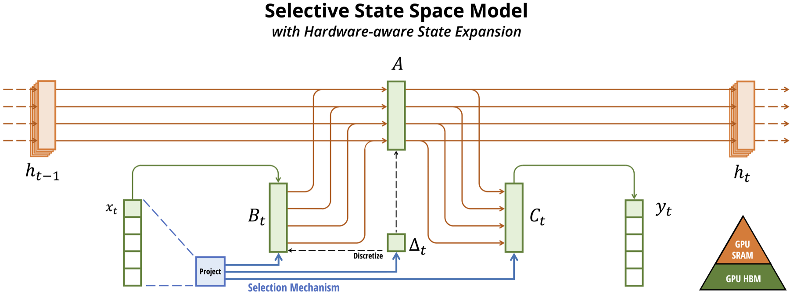
Синим показан механизм селекции: матрицы $B_t$, $C_t$ и шаг дискретизации $\Delta_t$ вычисляются из самого входа $x_t$, а не фиксированы, как в обычной SSM. Именно поэтому модель может решить «этот токен запомнить, а этот пропустить». Треугольник справа — вторая половина идеи: развёрнутое состояние живёт в быстрой SRAM видеокарты и никогда не выгружается целиком в HBM, поэтому большое скрытое состояние не упирается в пропускную способность памяти. Задача: во входе
[шум] [шум] ВАЖНО_1 [шум] [шум] [шум] ВАЖНО_2 [шум]нужно на выходе выдатьВАЖНО_1 ВАЖНО_2.- Линейный SSM обрабатывает все токены одинаково: и шум, и важное записываются в состояние с одним и тем же весом. К моменту, когда потребуется ответ, важные токены размыты шестью шагами шума.
- Mamba выучивает: на токенах-шуме выдавать маленький $\Delta_t$ и малый $B_t$ (почти не менять состояние), на важных — большой $B_t$ (записать). Состояние сохраняет только нужное.
Это ровно то поведение, ради которого в трансформере существует внимание, — но достигается оно фильтрацией на входе в состояние, а не хранением всей истории.
Здесь возникает серьёзная техническая проблема. Свёрточная форма SSM существует только потому, что параметры постоянны: раскрытие рекуррентности в фиксированное ядро возможно лишь для линейной инвариантной во времени системы.
Как только $\bar A_t, \bar B_t$ зависят от $t$, единого ядра больше нет, и обучать модель быстрым преобразованием Фурье нельзя. Остаётся честная рекуррентность — то есть последовательный цикл, который на GPU выполняется катастрофически медленно.
Именно поэтому селективные SSM не появились раньше: идея очевидна, а вот сделать её быстрой — нет.
Решение Mamba состоит из трёх частей, и все они про память GPU, а не про математику.
- Параллельное сканирование (parallel scan). Рекуррентность вида $h_t = a_t h_{t-1} + b_t$ — это ассоциативная операция, а значит, её можно вычислить за $O(\log n)$ шагов по схеме дерева, а не за $n$ последовательных шагов. Это классический алгоритм префиксной суммы, обобщённый на линейную рекуррентность.
- Kernel fusion. Все операции — дискретизация, сканирование, умножение на $C$ — выполняются в быстрой памяти GPU (SRAM), без записи промежуточных состояний в медленную HBM. Обращение к HBM в разы дороже вычислений, поэтому именно оно было бы узким местом.
- Recomputation. Промежуточные состояния для обратного прохода не хранятся, а пересчитываются заново. Это экономит память ценой лишних вычислений — тот же приём, что в gradient checkpointing и во FlashAttention.
Результат: обучение работает быстро несмотря на отсутствие свёрточной формы, а память расходуется экономно.
- Качество. Mamba-3B соответствует трансформеру примерно вдвое большего размера при равном числе обучающих токенов.
- Скорость генерации. До 5 раз выше, чем у трансформера сопоставимого качества, — потому что нет KV-кэша и стоимость каждого токена постоянна.
- Длина. Качество продолжает улучшаться на последовательностях до миллиона токенов, тогда как трансформер упирается в квадратичную стоимость.
- Другие модальности. Модель работает не только с текстом: результаты получены на аудио и на геномных последовательностях (ДНК), где длины особенно велики.
Честная картина требует и обратной стороны. Слабые места селективных SSM:
- Точное извлечение из контекста (in-context retrieval). Задачи типа «найди в тексте телефон и повтори дословно» решаются хуже: состояние фиксированного размера физически не может хранить всё.
- Обучение в контексте по многим примерам. При десятках примеров в промпте трансформер обращается к каждому напрямую, а SSM работает со сжатой сводкой.
- Экосистема. Оптимизированные ядра, инструменты квантизации, серверы инференса и методы дообучения годами затачивались под трансформеры.
Отсюда практический вывод индустрии: чистые SSM встречаются реже гибридов.
Наиболее удачным оказался компромисс: большинство слоёв — Mamba, некоторые — обычное внимание.
- Jamba (AI21, 2024) — чередование Mamba-слоёв, слоёв внимания и MoE; контекст 256k при умеренных требованиях к памяти.
- Zamba, Samba и другие — варианты той же идеи с разными пропорциями.
- Mamba-2 (2024) — теоретическая работа, показавшая эквивалентность селективных SSM и одного из вариантов линейного внимания (framework SSD). Это объединило две ветви исследований, считавшиеся разными.
Логика гибрида проста: SSM-слои дают дешёвую обработку длинного контекста, а несколько слоёв полного внимания обеспечивают точный доступ к любому токену — то, чего SSM принципиально не умеет.
- «Mamba заменила трансформеры». Не заменила. Она конкурентоспособна и выигрывает на длинных последовательностях, но проигрывает на точном извлечении из контекста; в продакшене чаще используют гибриды.
- «Линейная сложность означает, что модель всегда быстрее». На коротких последовательностях трансформер быстрее: у него лучше оптимизированные ядра, а квадратичность при малых $n$ не мешает.
- «Селективность — это внимание». Механизмы разные: внимание сравнивает каждый токен с каждым и хранит всё, селективность решает, что записать в состояние фиксированного размера.
- Недооценивать роль реализации. Без hardware-aware алгоритма идея селективных SSM непрактична. Значительная часть вклада статьи — инженерная, а не математическая.
Что такое селективность в Mamba?
Зависимость параметров SSM от входа: матрицы $B_t$, $C_t$ и шаг дискретизации $\Delta_t$ вычисляются линейными слоями от текущего токена. Это позволяет модели решать для каждого токена, насколько сильно записать его в состояние и насколько быстро забыть прошлое.
За что отвечают $B_t$, $C_t$ и $\Delta_t$?
$B_t$ — насколько сильно текущий вход попадает в состояние, $\Delta_t$ — скорость обновления и забывания состояния, $C_t$ — что именно извлекается из состояния для текущего выхода.
Почему селективность ломает свёрточную форму вычисления?
Потому что раскрытие рекуррентности в единое фиксированное ядро возможно только для линейной инвариантной во времени системы. Когда параметры зависят от позиции, общего ядра не существует, и обучать модель через быстрое преобразование Фурье нельзя.
Как Mamba добивается быстрого обучения без свёрточной формы?
Через параллельное сканирование (линейная рекуррентность ассоциативна и вычисляется за $O(\log n)$ шагов по схеме дерева), слияние ядер с работой в быстрой памяти GPU без записи промежуточных состояний и пересчёт состояний на обратном проходе вместо их хранения.
На каких задачах Mamba уступает трансформеру и почему?
На точном извлечении из контекста и обучении по многим примерам в промпте: состояние фиксированного размера физически не может хранить всю историю без потерь, тогда как трансформер обращается к любому токену напрямую через KV-кэш.
Почему на практике чаще используют гибридные архитектуры?
Потому что они сочетают сильные стороны обоих подходов: слои SSM дают дешёвую обработку длинного контекста с постоянной памятью, а несколько слоёв полного внимания обеспечивают точный доступ к произвольному токену. Примеры — Jamba, Zamba, Samba.
-
Рекуррентные трансформеры
Рекуррентные трансформеры — семейство архитектур, где трансформер обрабатывает длинный текст сегментами, передавая информацию между ними через некоторое состояние: кэш предыдущего сегмента, специальные токены памяти или сжатое представление.
Идея в одной фразе: разрезать длинный документ на куски, обрабатывать их обычным трансформером по очереди и «переносить» контекст из куска в кусок, вместо того чтобы держать всё в одном гигантском окне внимания.
Мотивация та же, что у SSM: убрать квадратичную сложность и растущий KV-кэш. Но подход другой — не заменить внимание, а обернуть его рекуррентностью.
Transformer-XL (Dai et al., 2019) — первая практичная реализация идеи.
Наивное разбиение на сегменты страдает фрагментацией контекста: модель обрабатывает сегмент 2, ничего не зная о сегменте 1, и предложение, разорванное границей, теряет смысл.
Решение Transformer-XL: при обработке сегмента $\tau$ скрытые состояния сегмента $\tau - 1$ сохраняются и добавляются к ключам и значениям — но помечаются как не требующие градиента: $$\tilde{h}^{l-1}_\tau = \big[\text{SG}(h^{l-1}_{\tau-1}) \circ h^{l-1}_\tau\big]$$ где $\text{SG}$ — stop-gradient, а $\circ$ — конкатенация.
То есть внимание внутри сегмента видит и предыдущий сегмент, но градиент через него не течёт — иначе обучение стало бы последовательным по всему документу.
Тонкость, из-за которой наивная склейка сегментов не работает: если использовать абсолютные позиционные эмбеддинги, то первый токен каждого сегмента получает позицию 0.
Тогда модель видит две разные позиции с одинаковым позиционным кодом — начало текущего сегмента и начало предыдущего — и не может их различить. Внимание становится бессмысленным.
Поэтому авторы ввели схему относительного кодирования позиций, где скор зависит от расстояния $i - j$, а не от абсолютных индексов. Эта работа во многом подготовила почву для RoPE и ALiBi.
Эффективный контекст Transformer-XL получался примерно в 4.5 раза длиннее, чем у обычного трансформера с тем же размером сегмента.
RMT (Recurrent Memory Transformer, Bulatov et al., 2022) реализует ту же идею иначе и заметно элегантнее.
К каждому сегменту добавляются токены памяти — обучаемые векторы в начале и конце последовательности: $$\tilde{H}_\tau = [H^{\text{mem}}_\tau \circ H_\tau \circ H^{\text{mem}}_\tau]$$
Сегмент обрабатывается обычным, не изменённым трансформером. Выходные векторы на позициях памяти забираются и подаются как входная память для следующего сегмента.
Главное достоинство: архитектура трансформера не меняется вовсе. Память — это просто дополнительные токены во входе, поэтому подход применим к любой готовой модели.
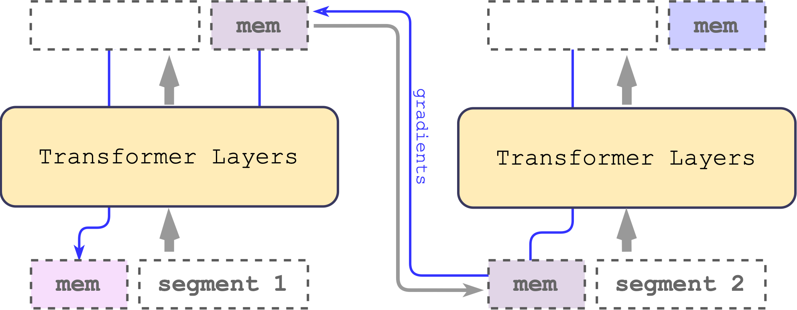
Сегмент обрабатывается обычным трансформером, но с обеих сторон к нему приписаны специальные mem-токены — читаемая память спереди, записываемая сзади. То, что вышло из них на выходе сегмента 1, подаётся на вход сегмента 2 — это и есть рекуррентность, только состояние теперь не скрытый вектор RNN, а несколько обучаемых токенов. Синяя стрелка — градиенты: они текут между сегментами, поэтому модель учится тому, что класть в память, а не просто переносит её механически.Авторы продемонстрировали работу на последовательностях длиной более миллиона токенов при базовой модели BERT — на синтетических задачах, где нужно было запомнить факт в начале и использовать его в конце.
Оговорка важна: это синтетические задачи с малым объёмом информации для запоминания. Реальный текст требует удерживать несравнимо больше, а ёмкость памяти ограничена числом токенов памяти.
Тем не менее результат содержательный: он показал, что рекуррентная память позволяет модели переносить информацию через сотни сегментов, а не только через один-два.
- Compressive Transformer (DeepMind, 2019) — расширение Transformer-XL: старые состояния не выбрасываются, а сжимаются (свёрткой или пулингом) и хранятся во второй, «долгой» памяти. Получается двухуровневая память: недавнее — подробно, давнее — сжато.
- Memorizing Transformer (2022) — вместо рекуррентности используется внешняя база ключей и значений с поиском ближайших соседей: модель ищет в ней релевантные фрагменты и подмешивает их во внимание. По сути это RAG, встроенный внутрь слоя внимания.
- Infini-attention (Google, 2024) — совмещает локальное внимание внутри сегмента со сжатой ассоциативной памятью постоянного размера, обновляемой между сегментами. Заявлена работа с очень длинным входом при ограниченной памяти.
Несмотря на изящность идей, в продакшене доминируют не они. Причины:
- Сложность обучения. Рекуррентность между сегментами возвращает часть проблем RNN: обучение хуже параллелизуется, а обратное распространение через много сегментов требует усечения и аккуратной настройки.
- Ограниченная ёмкость памяти. Как и у SSM, фиксированное состояние не хранит всё. На задачах точного извлечения из длинного контекста подход уступает полному вниманию.
- Конкуренция более простых решений. Оказалось, что просто увеличить окно внимания и оптимизировать его реализацию (FlashAttention, GQA, сжатие KV-кэша) — дешевле по инженерным усилиям и надёжнее по качеству.
- RAG. Для большинства практических задач с длинными документами внешний поиск проще, дешевле и понятнее, чем архитектурная память.
Тем не менее идеи этой ветви живут: относительные позиции стали стандартом, а сегментная обработка с переносом состояния используется в системах работы с очень длинными документами и в потоковом инференсе.
- «Рекуррентный трансформер = RNN». Нет: внутри сегмента работает обычное полное внимание со всеми его преимуществами. Рекуррентность возникает только между сегментами.
- «RMT даёт контекст в миллион токенов на любых задачах». Результат получен на синтетических задачах с малым объёмом запоминаемой информации; на реальных текстах ёмкость памяти становится узким местом.
- Забыть про stop-gradient. Если пропускать градиент через все предыдущие сегменты, обучение станет последовательным по всему документу и практически неосуществимым.
- Использовать абсолютные позиции при сегментной обработке. Позиции разных сегментов совпадут, и внимание перестанет различать сегменты.
Что такое рекуррентный трансформер?
Архитектура, в которой длинный текст обрабатывается сегментами обычным трансформером, а информация переносится между сегментами через состояние — кэш предыдущего сегмента, токены памяти или сжатое представление. Рекуррентность возникает только между сегментами, внутри работает полное внимание.
Как устроен Transformer-XL и зачем ему stop-gradient?
Скрытые состояния предыдущего сегмента сохраняются и конкатенируются к ключам и значениям текущего, но помечаются как не требующие градиента. Без stop-gradient обратное распространение шло бы через весь документ, и обучение стало бы последовательным и практически неосуществимым.
Почему Transformer-XL потребовал относительного кодирования позиций?
Потому что при абсолютных позициях первый токен каждого сегмента получает один и тот же код, и модель не может отличить начало текущего сегмента от начала предыдущего в кэше. Относительное кодирование зависит от расстояния между токенами и этой проблемы не имеет.
Как работает память в RMT?
К каждому сегменту добавляются обучаемые токены памяти в начале и конце. Сегмент обрабатывается неизменённым трансформером, а выходные векторы на позициях памяти передаются как входная память следующего сегмента. Архитектура модели при этом не меняется.
Какая оговорка важна при интерпретации результатов RMT на миллионе токенов?
Что результат получен на синтетических задачах с небольшим объёмом информации для запоминания. Ёмкость памяти ограничена числом токенов памяти, поэтому на реальных текстах, требующих удерживать много деталей, она становится узким местом.
Почему рекуррентные трансформеры не стали мейнстримом?
Из-за сложности обучения с усечённым обратным распространением, ограниченной ёмкости фиксированной памяти и конкуренции более простых решений: оптимизированного полного внимания, сжатия KV-кэша и внешнего поиска (RAG), которые дешевле в разработке и надёжнее по качеству.
-
Диффузионные языковые модели
Диффузионная языковая модель (dLLM) — модель, которая генерирует текст не по одному токену слева направо, а параллельно уточняя всю последовательность целиком за несколько шагов: от полностью зашумлённого (замаскированного) состояния к готовому тексту.
Это перенос идеи диффузионных моделей из генерации изображений (Stable Diffusion, DALL·E) в текст. В картинках шум — это гауссов шум в пикселях; в тексте — маскирование токенов, поскольку текст дискретен и «немного зашумить» слово нельзя.
Разберём разницу явно, потому что она определяет все свойства подхода.
Авторегрессионная модель (GPT-подобная): генерирует токен $t$, потом $t+1$, потом $t+2$. Каждый шаг требует полного прохода по модели, и шаги строго последовательны — распараллелить их нельзя. Для 500 токенов нужно 500 проходов.
Диффузионная модель: начинает с последовательности, где все позиции замаскированы, и за $T$ шагов (обычно 10–100, то есть много меньше длины) постепенно раскрывает токены — на каждом шаге предсказывая сразу все оставшиеся замаскированные позиции и оставляя те, в которых уверена.
Ключевое следствие: число шагов не зависит от длины ответа. Длинный текст генерируется за столько же проходов, сколько короткий.
Та же пара процессов для пикселей разобрана на странице задач CV: там прямой процесс добавляет гауссов шум, а обратный его предсказывает и вычитает.
Прямой процесс (зашумление) — постепенное маскирование: на шаге $t$ каждый токен независимо заменяется на
[MASK]с вероятностью, растущей с $t$. При $t = T$ вся последовательность замаскирована.Обратный процесс (генерация) — модель обучается предсказывать исходные токены на замаскированных позициях, видя все незамаскированные: $$p_\theta(x_0 \mid x_t)$$
Генерация идёт от $t = T$ (всё замаскировано) к $t = 0$: на каждом шаге модель предсказывает распределение по всем маскам, часть позиций фиксируется (обычно те, где модель наиболее уверена), остальные остаются замаскированными для следующей итерации.
Заметьте близость к BERT: это, по существу, задача восстановления масок, но применяемая итеративно с постепенно уменьшающейся долей масок.
Длина задана заранее — ровно 8 позиций, и она не меняется ни на одном шаге.
- Шаг 0:
[M] [M] [M] [M] [M] [M] [M] [M] - Шаг 1: модель раскрывает позиции, в которых уверена $\to$
[M] сидит [M] [M] окне [M] [M] вверх - Шаг 2: имея эти якоря, она уточняет остальное $\to$
Кот сидит на тёплом окне и смотрит вверх - Шаг 3: финальная правка $\to$
Кот сидит на тёплом окне и смотрит вниз
Два принципиальных отличия от авторегрессии. Во-первых, модель заполнила середину и конец раньше начала. Во-вторых, на последнем шаге она переписала позицию 8, раскрытую ещё на первом шаге, — авторегрессионная модель на такое не способна в принципе.
Заодно видно и ограничение: вставить девятый токен посреди процесса нельзя. Длина фиксируется до начала генерации.
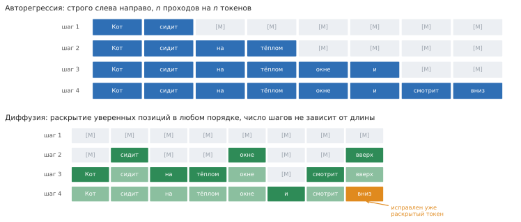
Сверху: авторегрессия добавляет токены строго слева направо, и уже написанное переписать нельзя. Снизу: диффузионная модель раскрывает те позиции, в которых уверена, в произвольном порядке — и может на следующем шаге исправить токен, раскрытый ранее (оранжевый). Число шагов при этом не зависит от длины ответа. - Параллельная генерация. Число проходов по модели фиксировано и не растёт с длиной ответа — потенциально это кратное ускорение на длинных ответах.
- Двунаправленный контекст. При заполнении позиции модель видит текст и слева, и справа. Для задач вроде заполнения пропуска в середине документа или редактирования это естественно, тогда как авторегрессия требует специальных приёмов (fill-in-the-middle).
- Возможность исправлять себя. Модель может переписать уже раскрытый токен на следующем шаге. У авторегрессионной модели ошибка, попавшая в префикс, остаётся навсегда и влияет на всё дальнейшее.
- Явный контроль вычислений. Можно менять число шагов: больше шагов — выше качество, меньше — быстрее. Это удобный рычаг для управления соотношением цены и качества.
- Отставание по качеству. На момент появления первых крупных dLLM авторегрессионные модели сопоставимого размера оставались сильнее на большинстве задач: в авторегрессию вложено на порядки больше исследовательских и инженерных усилий.
- Фиксированная длина. Диффузия работает с последовательностью заданной длины, которую нужно решить заранее. Авторегрессия просто генерирует, пока не выдаст токен конца.
- Несовместимость с KV-кэшем. Стандартный кэш опирается на то, что префикс не меняется. Здесь меняется вся последовательность, поэтому привычные оптимизации инференса неприменимы, и часть теоретического выигрыша в скорости съедается.
- Сложнее обучать. Нужно правильно задать расписание зашумления и стратегию раскрытия токенов; наивные варианты дают заметно худшее качество.
Направление активно развивается: выходили модели масштаба нескольких миллиардов параметров (линия LLaDA и родственные работы), демонстрирующие конкурентоспособность с авторегрессионными моделями сопоставимого размера, а также коммерческие эксперименты с диффузионной генерацией кода, где параллельная генерация особенно выгодна.
Отдельная активная ветвь — гибриды: авторегрессионная генерация по блокам, где каждый блок раскрывается диффузионно. Так удаётся сохранить и совместимость с KV-кэшем, и параллельность внутри блока.
Практический статус на сегодня: перспективное исследовательское направление, а не замена авторегрессии в продакшене.
- «Диффузия в тексте работает так же, как в картинках». Нет: текст дискретен, поэтому вместо гауссова шума используется маскирование, а обратный процесс — это классификация по словарю, а не регрессия шума.
- «Параллельная генерация автоматически означает ускорение». Каждый шаг обрабатывает всю последовательность, и без KV-кэша один шаг дороже, чем шаг авторегрессии. Выигрыш зависит от числа шагов и длины ответа.
- «dLLM — это BERT». Общая механика маскирования та же, но BERT восстанавливает фиксированную долю масок за один проход и не предназначен для генерации; dLLM применяет это итеративно по расписанию, идя от полностью замаскированной последовательности.
Чем диффузионная языковая модель отличается от авторегрессионной?
Она генерирует не по одному токену слева направо, а параллельно уточняет всю последовательность за фиксированное число шагов, начиная с полностью замаскированной. Число проходов по модели не зависит от длины ответа.
Как реализуется «зашумление» в дискретном тексте?
Через маскирование: на шаге $t$ каждый токен независимо заменяется на
[MASK]с вероятностью, растущей с $t$, пока вся последовательность не окажется замаскированной. Гауссов шум, как в изображениях, к дискретным токенам неприменим.Как устроен обратный процесс генерации?
Модель предсказывает исходные токены на всех замаскированных позициях, видя незамаскированные; часть позиций — обычно те, где уверенность выше, — фиксируется, остальные остаются замаскированными для следующего шага. Так доля масок постепенно уменьшается до нуля.
Какие принципиальные преимущества даёт этот подход?
Параллельную генерацию с числом шагов, не зависящим от длины ответа; двунаправленный контекст при заполнении каждой позиции; возможность исправить уже сгенерированный токен на следующем шаге; явный контроль соотношения качества и скорости через число шагов.
Почему KV-кэш несовместим с диффузионной генерацией?
Потому что кэш опирается на неизменность префикса, а здесь на каждом шаге меняется вся последовательность. Из-за этого стандартные оптимизации инференса неприменимы и часть теоретического выигрыша в скорости теряется.
Каков практический статус диффузионных LLM?
Это активное исследовательское направление с моделями масштаба нескольких миллиардов параметров и гибридными схемами (блочная авторегрессия с диффузией внутри блока), но не замена авторегрессии в продакшене: по качеству и по зрелости инфраструктуры авторегрессионные модели пока впереди.
- Шаг 0:
-
SubQ (2026): фронтир-модель на субквадратичном внимании
SubQ — языковая модель стартапа Subquadratic, вышедшего из стелса 5 мая 2026 года. Её заявленная особенность: это первая модель фронтир-уровня, у которой механизм внимания полностью субквадратичный — не как оптимизация поверх обычного трансформера, а как основа архитектуры, с которой модель обучалась.
Практическое следствие — нативное контекстное окно 12 миллионов токенов. Это примерно 9 миллионов слов, порядка сотни книг, целиком помещающихся в один запрос.
Если совсем простыми словами: обычный трансформер платит за длину контекста квадратично, поэтому окна упираются в сотни тысяч токенов. SubQ платит почти линейно — и окно вырастает на два порядка.
Модели с длинным контекстом появлялись и раньше, но обычно окно расширяли поверх обученной модели: интерполяцией позиций, дообучением на длинных примерах, разреженностью, включаемой на инференсе. Качество на всю заявленную длину при этом держалось плохо — известный разрыв между «модель принимает миллион токенов» и «модель им пользуется».
SubQ построена иначе: разреженное внимание присутствовало с самого начала обучения. Модель не приспосабливали к длинному контексту задним числом — она в нём выросла.
Отсюда и главный интерес к ней: это проверка гипотезы, что субквадратичная архитектура может конкурировать с плотными трансформерами не только по скорости, но и по качеству.
Внимание SubQ построено на SSA (Subquadratic Sparse Attention) — схеме с обучаемой, зависящей от содержания разреженностью: модель динамически выбирает, какие позиции важны для каждого запроса, и считает точное внимание по этому подмножеству.
Заявленная асимптотика — $O(n \log n)$ или $O(n \cdot k)$, где $k$ — среднее число релевантных связей на токен, вместо $O(n^2)$ у плотного внимания.
Устройство и место SSA среди родственных схем — NSA от DeepSeek, MoBA от Moonshot — разбирается отдельно, в вопросе обучаемое разреженное внимание.
Здесь важно различать две метрики. По числу операций SSA на контексте 1M сокращает внимание примерно в 64 раза. По реальному времени выигрыш меньше: компания заявляет около 52×, независимый аудит — 56× wall-clock против FlashAttention-2 на той же длине. Разрыв между «в 64 раза меньше арифметики» и «в 52 раза быстрее» нормален: часть времени уходит на сам отбор блоков и на доступ к памяти.
На полных 12M сокращение вычислений внимания оценивается почти в 1000 раз относительно плотного базового варианта.
Разница между полусотней крат на 1M и тысячей на 12M не противоречива, а прямо следует из асимптотики: разрыв между $O(n^2)$ и $O(n \cdot k)$ сам растёт с длиной, поэтому чем длиннее контекст, тем больше выигрыш.
Бенчмарк SubQ Claude Opus 4.7 GPT-5.5 RULER @ 128K 95.6% 94.8% — MRCR v2, 8 иголок @ 1M 86.2% 32.2% 74.0% SWE-Bench Verified 81.8% 87.6% 88.7% Needle-in-a-haystack @ 12M 92.1% — — Картина читается однозначно: на длинном контексте SubQ лидирует с большим отрывом, на обычных задачах программирования — уступает флагманам. Ровно то, чего и ждёшь от архитектуры, оптимизированной под длину.
Заявления компании стоит принимать с осторожностью — по нескольким конкретным причинам.
- Основные бенчмарки опубликованы на 1M, а не на заявленных 12M. Для полного окна показан только needle-in-a-haystack — тест на поиск подстроки, а не на рассуждение по длинному контексту.
- Разрыв между исследовательскими и продуктовыми числами. На длинном контексте в статье фигурирует 83%, в доступной версии — 65.9%. Это не мелкое расхождение, а разные режимы работы.
- Нет независимой верификации большей части заявлений; на момент написания модель доступна по листу ожидания в закрытой бете.
- Только текст и код. Мультимодальность не подтверждена.
- Цена не раскрыта. Фигурирующая в пересказах оценка «около 5% от стоимости Opus» официально не подтверждена.
Разреженность сокращает вычисления, но не память. KV-кэш на 12 миллионов токенов остаётся полным: любой токен может быть выбран на следующем шаге, значит хранить надо все.
Поэтому «окно 12M» — это не «дёшево работать с 12M». Каждый такой запрос всё ещё требует много памяти и заметного времени на первый проход по промпту.
Практический вывод трезвее рекламного: большинству задач хватает 128–200 тысяч токенов, и там выигрыш SubQ гораздо скромнее заявленных множителей.
SubQ интересна как точка в споре о том, чем заменять квадратичное внимание.
SSM и Mamba выбрали путь сжатия прошлого в состояние фиксированного размера — линейная стоимость ценой размывания деталей и слабого точного поиска. Гибриды вроде Jamba смягчают это, чередуя рекуррентные слои с полными слоями внимания.
SubQ выбрала другой путь: сохранить точное внимание, но считать его выборочно. Результаты на MRCR и needle-in-a-haystack как раз показывают сильную сторону такого выбора — точный поиск по контексту не деградирует, что и остаётся главной проблемой рекуррентных схем.
- «SubQ — это SSM / что-то вроде Mamba». Нет, это трансформер. Прошлое не сжимается в состояние, внимание считается точно — просто не по всем парам.
- «Разреженное внимание — приближение, значит качество хуже». Скоры внутри выбранного подмножества точные; приближением является отбор. Это разные источники ошибки.
- Считать окно 12M готовым к использованию. Заявленные бенчмарки, кроме поиска иголки, получены на 1M — то есть на порядок меньшей длине.
- Переносить множители ускорения на короткие запросы. Выигрыш растёт с длиной: на типичных 8–32 тысячах токенов разреженность почти ничего не даёт, а накладные расходы на отбор остаются.
Чем SubQ принципиально отличается от других моделей с длинным контекстом?
Тем, что субквадратичное внимание заложено в архитектуру и присутствовало с самого начала обучения, а не добавлено поверх обученной модели интерполяцией позиций или разреженностью на инференсе. Поэтому качество на длинном контексте не деградирует так, как у моделей, которые к нему приспосабливали задним числом.
Что такое SSA и какая у неё сложность?
Subquadratic Sparse Attention — схема с обучаемой, зависящей от содержания разреженностью: модель сама выбирает релевантные позиции для каждого запроса и считает по ним точное внимание. Заявленная сложность — порядка $O(n \log n)$ или $O(n \cdot k)$ вместо квадратичной.
Почему заявленное ускорение так сильно различается на 1M и на 12M?
Потому что разрыв между $O(n^2)$ и $O(n \cdot k)$ сам растёт с длиной. На миллионе токенов это порядка 64-кратного сокращения числа операций и примерно 52–56-кратного ускорения по времени, на двенадцати миллионах — уже около тысячекратного сокращения вычислений. Множитель не является характеристикой модели в отрыве от длины контекста.
Что показывают бенчмарки SubQ?
Уверенное лидерство на длинном контексте — 86.2% на MRCR v2 при миллионе токенов против 32.2% у Claude Opus 4.7 — и отставание на обычных задачах: 81.8% на SWE-Bench Verified против 87.6–88.7% у флагманов. Это типичный профиль архитектуры, оптимизированной под длину.
Какие основные основания для скепсиса?
Полноценные бенчмарки опубликованы на 1M, а не на заявленных 12M, где показан только поиск иголки в стоге сена; между исследовательскими и продуктовыми числами на длинном контексте разрыв с 83% до 65.9%; независимой верификации нет, модель в закрытой бете, цена не раскрыта.
Решает ли субквадратичное внимание проблему памяти?
Нет. Оно сокращает вычисления, но KV-кэш остаётся полным: любой токен может быть выбран на следующем шаге, поэтому хранить нужно всю историю. Окно в 12 миллионов токенов остаётся дорогим по памяти и по времени первого прохода по промпту.